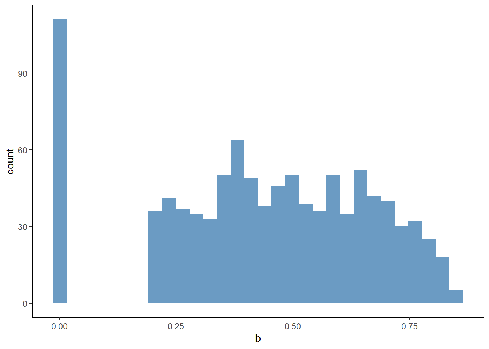
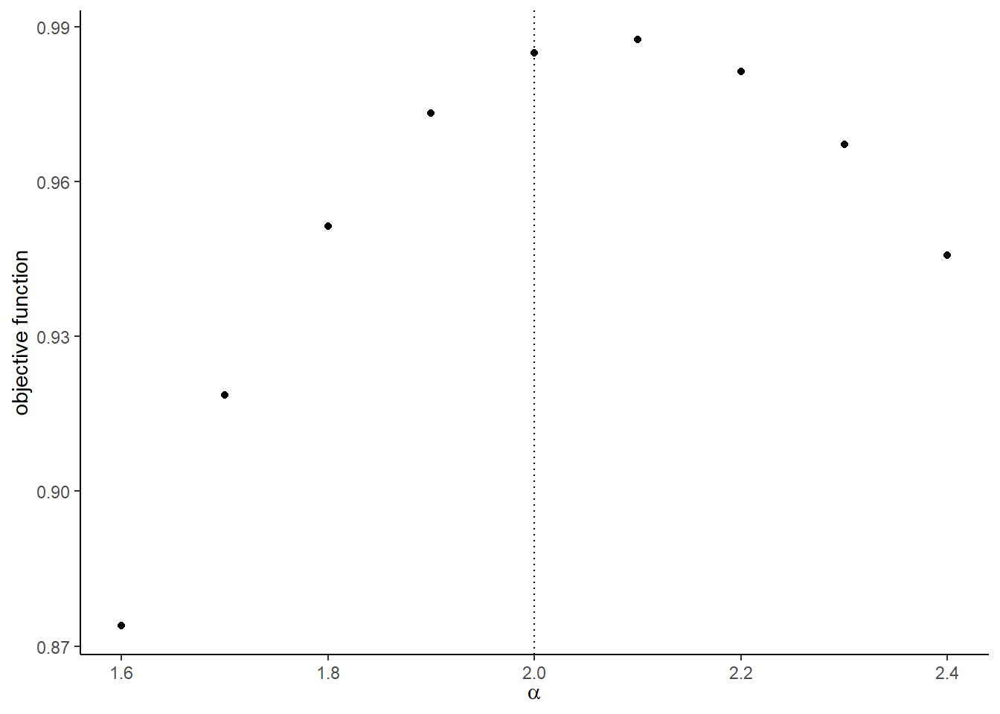

Chapter 10 Applications
- Recently published empirical studies using a structural estimation based on a partial equilibrium model, mostly in the field of industrial organization.
10.1 2018-2019
10.1.1 American Economic Review
Wollmann (2018): Estimate a structural model of the US commercial vehicle market and demonstrate the importance of allowing for endogenous product offerings in a merger analysis.
Dinerstein, Einav, Levin, & Sundaresan (2018): Study how the redesign of the search engine at eBay affect consumer search and price competition among sellers.
Crawford, Pavanini, & Schivardi (2018): Estimate a structural model of credit demand, loan use, pricing, and firm default using matched firm-bank data from Italy, and find evidence of adverse selection and how banks can mitigate the negative effects by adjusting credit supply.
Hortasu, Kastl, & Zhang (2018): Estimate a structural model of bidding at the uniform price auctions of US Treasury bills and notes that takes into account informational asymmetries introduced by the bidding system and show that primary dealers have bid-shading ability higher than their willingness-to-pay.
Aizawa & Kim (2018): Estimate an equilibrium model of Medicare Advantage with advertising allowing rich individual heterogeneity and show that advertising is effective in attracting healthy individuals for are newly eligible for Medicare, contributing to advantageous selection into Medicare Advantage.
Ulrich Doraszelski, Lewis, & Pakes (2018): Draw on models of fictitious play and adaptive learning to analyze the evolution of the new market for frequency response within the UK electricity system and explain the convergence of pricing to a rest point that is consistent with equilibrium play.
Acemoglu, Akcigit, Alp, Bloom, & Kerr (2018): Estimate a model of firm-level innovation, productivity growth, and reallocation featuring endogenous entry and exit and the selection between high- and low-type firms which differ in terms for their innovation capacity, and show that taxing the continued operation of incumbent can lead to gains because of the exit of less productive firms.
Dubois & Lasio (2018): Estimate a structural model of pharmaceutical with price constraints and infer whether these constraints are binding and study its consequences.
Ho & Lee (2019): Estimate a Nash-in-Nash bargaining model between insurers and hospitals and evaluate the consequence of narrowing hospital networks in commercial heal care markets in the US.
Crawford, Shcherbakov, & Shum (2019): Estimate a model of endogenous quality choice in imperfectly competitive markets and show that a quality over-provision in the US cable television markets is caused by the presence of competition from high-end satellite TV providers.
Fack, Grenet, & He (2019): Propose a new approach to estimate student preferences with data from matching mechanisms and estimate the model with school choice data in Paris.
10.1.2 Econometrica
Trebbi & Weese (2019): Propose methodologies for the detection of unobserved coalitions of militants in conflict areas and apply to the Afghan conflict during the 2004-2009 period and to Pakistan during the 2008-2011 period, identifying systematically different coalition structures.
Einav, Finkelstein, & Mahoney (2018): Estimate a dynamic discrete choice model of long-term care hospitals discharge decisions and study the design of provider incentive in the post-acute setting.
Miravete, Seim, & Thurk (2018): Estimate a model of taxation in a imperfectly competitive market that leads to incomplete tax pass-through using a data from alcoholic beverages in Pennsylvania and study the welfare implication of the states current tax policy.
Crawford, Lee, Whinston, & Yurukoglu (2018): Estimate a structural model of view-ship, subscription, distributor pricing, and affiliate fee bargaining using a data set on the US cable an satellite television industry to analyze the impact of simulated vertical mergers and divestitures of regional sports networks on competition and welfare.
Agarwal & Somaini (2018): Propose an empirical method for studying random utility models in a school choice mechanisms and apply it to the data from Cambridge.
10.2 Asymmetric Information and Market Power
- I present this paper in detail because the structure of the paper, especially the structure of the introduction, is textbook-perfect.
- It also applies textbook-perfect demand and cost estimation techniques but to an empirically interesting setting.
- The introduction consists of:
- Background and motivation: Following the seminal work; Although the basic; The vast majority; A recent strand;
- Question: We measure
- Materials: We exploit detailed data on
- Methods: After providing reduced-form evidence
- Details of the materials and methods: model (We begin by), its characterization (The degree of competition), estimation (We estimate the model), identification (We face two important challenges).
- Results: In our results
- Counterfactuals: We run three counterfactuals
- Implications: All in all
- Contributions: Our paper is related to
- These topics should be discussed in this order in a structural estimation paper.
- The paper is organized as follows:
- Data: Source; sampling procedure; cleaning; transformation; summary statistics; motivating findings.
- Model: Economic model to estimate; relevance to the research question; justification of the assumptions; discussion on key channels; relevance to theoretical models in the literature.
- Estimation: Econometric specification; estimation procedure; identification.
- Results: Estimation results; key findings and their interpretations; fit of the model.
- Conterfactuals: Policy experiments; policy implications.
- The data section can come after model and estimation sections if it is a methodological paper that builds estimation and/or identification techniques on an abstract model.
10.2.1 Motivation
- Asymmetric information works differently in imperfectly competitive markets.
- Competitive market: adverse selection \(\to\) higher average cost \(\to\) higher price.
- Imperfectly competitive market: additional channel: adverse selection \(\to\) lower benefit of setting a high price \(\to\) lower price (Lester, Shourideh, Venkateswaran, & Zetlin-Jones, 2018; Mahoney & Weyl, 2017).
- Adverse selection can moderate the welfare losses from market power, and vice versa.
10.2.2 Question, Method, and Materials
- This paper measures the consequences of asymmetric information and imperfect competition in the market for small business lines of credit.
- To do so, formulate and estimate a model of credit demand, loan use, default, and bank pricing;
- using data on a representative sample of Italian firms, the population of medium and large Italian banks, individual lines of credits between them, and subsequent defaults.
10.2.3 Findings
- Find evidence of adverse selection:
- The unobserved determinants of the choice to borrow and of default are positively correlated.
- The unobserved determinants of loan use and default are positively correlated.
- Both are statistically significant.
- Find positive effect of interest rates on default:
- Evidence of moral hazard?
10.2.4 Policy Experiments
- What if the degree of adverse selection changes?
- The severer adverse selection still causes a higher price and a smaller credit supply.
- But market power significantly mitigates this effect.
- What if banks cost of capital, say, due to a financial crisis?
- In the presence of adverse selection, the pass-through is smaller for a bank with higher market power.
- What if banks merge?
- Under high adverse selection, a merger can decrease prices.
10.2.5 Source
- Data on individual loans from the Central Credit Register.
- Firm-level balance sheet data from the Company Accounts Data Services.
- Banks balance-sheet and income-statement data from the Banking Supervision Register.
- Data on bank branches at the local level.
- The resulting data is over 1988-1998.
10.2.6 Loan Data
- Italian banks have to report data for each individual borrower to the register.
- Focus on the short-term lines of credit:
- Interest rate is independent of the maturity.
- Homogeneous product.
- Not collateralized.
- Main source of borrowing for Italian firms.
- Focus on firms main credit line in the first year they open any credit line.
- Avoid heterogeneous experience in ratings, loan negotiations, and learning across banks and firms.
- This reduces the sample size from 90,000 to 36,500.
- Average loan amount EUR370,000, average interest rate 14.2%.
- Average bank asset EUR11 billion, average employees 3,200.
10.2.7 Firm Data
- The service collects yearly data on the balance sheets and income statements of a sample of 35,000 Italian non-financial and non-agricultural firms, roughly 30% of the total value added reported in the national accounting.
- The service also computes an indicator of the risk profile of each firm, Score, and reports to banks.
- The Score is approximately the information that a lending bank has available at the time a loan is granted.
- A firm is classified as a borrowing firm if it appears in the Credit Register, and is classified as a non-borrowing firm if it does not appear in the Credit Register and reports zero bank borrowing in the balance sheet.
- Banks loan approval decisions are not observed.
10.2.8 Default Data
- A loan is classified as default if a firms main line of credit defined it as a bad debt within three years of being granted.
- Reporting a loan as a bad debt to the Credit Registry can happen prior to a legally certified bankruptcy filing, but it usually prevents the firm from borrowing any other loans.
- 6% of new loans default during the sample period.
10.2.9 Positive Correlation Tests
- Positive correlation tests (Chiappori & Salanie, 2000) are often used to test the presence of asymmetric information.
- Are firms more likely to demand credit more likely to default? \[ d_i = 1\{X_i^d \beta + \nu_i > 0\}, \] \[ f_i = \begin{cases} X_i^f \gamma + \eta_i &\text{ if } d_i = 1\\ -&\text{ if } d_i = 0, \end{cases} \] where \(d_i\) is equal to one if the firm borrows and \(f_i\) is equal to one if the borrow defaults.
- \(X_i^d\) and \(X_i^f\) include year, market, firms Score, amount of granted credit, sector Fixed effects, firms balance sheet variables.
- The number of banks in a firms market is only included in \(X_i^d\) (instrument).
- \(f_i\) is observed only if \(d_i = 1\).
- A positive and significant correlation of 0.09 between \(\nu_i\) and \(\eta_i\).
- Are riskier firms use more credit? \[ l_i = X_i \beta + \epsilon_i, \] \[ f_i = X_i \gamma + \eta_i, \] where \(l_i\) is the amount of its loan used by the firm.
- A positive and significant correlation of 0.03 between \(\epsilon_i\) and \(\eta_i\).
- These positive correlations can be interpreted as evidence of adverse selection (Stiglitz & Weiss, 1981).
- We further control several factors such as strategic interactions in the following structural model.
10.2.10 Setting
- Each of \(i = 1, \cdots, I_{mt}\) firms in market \(m\) in year \(t\) is willing to invest in a project and is looking for credit to finance it.
- Firms select their main line of credit from \(j = 1, \cdots, J_{mt}\) banks in \(m\) in \(t\).
- Each bank sets interest rates \(P_{ijmt}\).
- Informational asymmetry: conditional on observable, a firms riskiness is known by that firm but not by any of the banks in its market; instead, banks are assumed to known the distribution.
- Screening device: assume that banks use interest rates as their only screening device; the amount of credit granted from a bank to a firm is exogenously given.
10.2.11 Firm Preference over Banks
- Firm \(i\) in market \(m\) in year \(t\) obtains the following utility as it chooses bank \(j\) as its main credit line: \[\begin{equation} U_{ijmt}^D := \overline{\alpha}_0^D + X_{jmt}^{\prime D} \beta^D + \xi_{jmt}^D + \alpha^D P_{ijmt} + Y_{ijmt}^{\prime D} \eta^D + \epsilon_i^D + \nu_{ijmt}^D. \tag{10.1} \end{equation}\]
- \(X_{ijm}^D\): a vector of bank-market-year determinants of demand; observed by everyone.
- \(Y_{ijmt}^D\): a vector of firm-bank-market-year determinants of demand; observed by everyone.
- \(\xi_{jmt}^D\): the banks attributes; not observed to econometrician.
- \(\epsilon_i^D\): the firms propensity to borrow; only observed to the firm.
- \(\nu_{ijmt}^D\): an idiosyncratic shock; only observed to the firm.
- \(\epsilon_i^D\) is the source of asymmetric information.
- Let \(\alpha_{0i}^D := \overline{\alpha}_0^D + \epsilon_i^D\).
10.2.12 Required Loand Amount
- Firm \(i\) in market \(m\) in year \(t\) borrows the following amount of loan if it chooses bank \(j\) as its main line: \[ L_{ijmt} := \alpha_0^L + X_{jmt}^{\prime L} \beta^L + \alpha^L P_{ijmt} + Y_{ijmt}^{\prime L} \eta^L + \epsilon_i^L. \]
- \(\epsilon_i^L\): the firms propensity to use credit; only observed to the firm.
- \(\epsilon_i^L\) is another source of asymmetric information.
- Notice that there is no firm-bank-specific unobserved heterogeneity; why?; we need to know how much a firm will borrow when the firm borrowed from a different bank than in the data; because a loan between a firm and a bank is observed only when the firm borrows from the bank, we need to exclude any firm-bank-specific unobserved heterogeneity in order to predict loans with hypothetical banks.
10.2.13 Default Decision
- Conditional on borrowing, each firm chooses to default if its utility from doing so is greater than 0: \[ U_{ijmt}^F := \alpha_0^F + X_{jmt}^{\prime F} \beta^F + \alpha^F P_{ijmt} + Y_{ijmt}^{\prime F} \eta^F + \epsilon_i^F. \]
- \(\epsilon_i^F\): the firms propensity to default; only observed to the firm.
- \(\epsilon_i^F\) is another source of asymmetric information.
- Notice that there is no firm-bank-specific unobserved heterogeneity for the same reason.
10.2.14 Information Structure
- \(\epsilon_i^D, \epsilon_i^L\), and \(\epsilon_i^F\) are assumed to be fixed at the firm level and do not vary across banks.
- They are assumed to follow: \[ \begin{pmatrix} \epsilon_i^D\\ \epsilon_i^L\\ \epsilon_i^F \end{pmatrix} \sim N \left( \begin{pmatrix} 0 \\ 0 \\ 0 \end{pmatrix}, \begin{pmatrix} \sigma_D^2 & \rho_{DL} \sigma_D \sigma_L & \rho_{DF} \sigma_D\\ \rho_{DL} \sigma_D \sigma_L & \sigma_L^2 & \rho_{LF} \sigma_L\\ \rho_{DF} \sigma_D & \rho_{LF} \sigma_L & 1 \end{pmatrix} \right). \]
10.2.15 Moral Hazard
- The model allows for the presence of moral hazard.
- Holmstrom & Tirole (1997): If moral hazard is present, higher repayment requirements on loans can reduce the incentives to exert efforts and increases the default probability.
- Interpreting \(\alpha^F\) a causal effect of price on default (by using an instrument), we will be able to interpret the positive \(\alpha^F\) as evidence of moral hazard.
10.2.16 Bank Problem
- The expected profit for bank \(j\) from charging a price \(P_{ijmt}\) offered to firm \(i\) in market \(m\) in year \(t\) is: \[ \Pi_{ijmt} := P_{ijmt} Q_{ijmt} (1 - F_{ijmt}) - MC_{ijmt} Q_{ijmt}. \]
- \(Q_{ijmt}\): the banks expectation of the firms demand.
- \(F_{ijmt}\): the banks expectation of the firms default.
- \(MC_{ijmt}\): the banks marginal cost.
10.2.17 The Effect of Price on Default Probability
- There are two channels.
- If \(\alpha^F\) is positive, higher interest rate can increase the default probability, possibly because of moral hazard.
- A higher interest rate also changes the composition of borrower types; borrowing conditional on a high interest rate means that the firm has higher demand for loan; if \(\rho_{DF} > 0\), this implies the firm is riskier.
10.2.18 The First-Order Condition
- The pricing equation is: \[ P_{ijmt} = \frac{MC_{ijmt}}{1 - F_{ijmt} + F_{ijmt}' \mathcal{M}_{ijmt}} + \frac{(1 - F_{ijmt}) \mathcal{M}_{ijmt}}{1 - F_{ijmt} + F_{ijmt}' \mathcal{M}_{ijmt}}. \]
- The first term is the effective marginal cost and the second effective markup.
- \(\mathcal{M}_{ijmt} := - Q_{ijmt} / Q_{ijmt}'\) is the bank \(j\)s markup on a loan to firm \(i\).
10.2.19 The Effect of Higher Adverse Selection
- As measured by the higher \(\rho_{DF}\).
- Average borrower effect: tends to increase the price.
- A higher \(\rho_{DF}\) implies a higher default probability \(F_{ijmt}\) for a given price.
- This decreases the denominator of the pricing equation.
- Marginal borrower effect: tends to suppress the price.
- A higher \(\rho_{DF}\) (in most cases) implies a higher sensitivity of default probability to price \(F_{ijmt}'\) for a given price.
- This increases the denominator of the pricing equation.
- Because the marginal borrower is safer than the average borrow to larger degree, the firm will want to keep them by reducing the price.
- Which of the effects dominates depend on the markup \(\mathcal{M}_{ijmt}\).
- Low levels of competition imply margins are high, increasing the value to the bank of marginal borrowers.
10.2.20 Estimating Equilibrium Pricing Strategy and Augmenting Missing Price Data
- To estimate bank choice problem for a firm, we need to have price for each pair of bank and firm.
- However, the price is observed only between a bank and a firm that actually held a credit line.
- We augment the missing price by predicted values.
- But the prediction depends on what kind of information set we assume for banks pricing decisions.
- We assume that large banks mostly predict the demand based on hard information such as the balance-sheet and income-statement variables and Scores.
- Specifically, we fit the following model to observed prices: \[ P_{ijmt} = \gamma_0 + \gamma_1 \mathcal{D}_{ijmt} + \gamma_2 \mathcal{L}_{ijmt} + \lambda_{jmt} + \omega_i^P + \tau_{ijmt}. \]
- \(\mathcal{D}_{ijmt}\) is the distance between firm \(i\) and the nearest branch of bank \(j\).
- \(\mathcal{L}_{ijmt}\) are dummies for the size of the granted loan amount.
- Regard this as a reduced-form estimates of the equilibrium pricing strategy of the banks.
- Let \(\tilde{\gamma}_0\), \(\tilde{\gamma}_1\), \(\tilde{\gamma}_2\), \(\tilde{lambda}_{jmt}\), and \(\tilde{\omega}_i^P\) the estimates.
- Let \(\tilde{P}_{ijmt}\) be the predicted value from these estimates: \[\begin{equation} \begin{split} \tilde{P}_{ijmt} &:= \tilde{\gamma}_0 + \tilde{\gamma}_1 \mathcal{D}_{ijmt} + \tilde{\gamma_2} \mathcal{L}_{ijmt} + \tilde{\lambda}_{jmt} + \tilde{\omega}_i^P\\ &:= \tilde{P}_{jmt} + \tilde{\gamma}_1 \mathcal{D}_{ijmt} + \tilde{\gamma_2} \mathcal{L}_{ijmt} + \tilde{\omega}_i^P. \end{split} \tag{10.2} \end{equation}\]
- We predict prices offered to non-borrowing firms by propensity score matching.
10.2.21 Inserting Pricing Estimates into the Utility
- We assume that firm-bank-market-year determinants of demand \(Y_{ijmt}^D\) is of the following form: \[ Y_{ijmt}^D := \eta_1^D \mathcal{D}_{ijmt} + \eta_2^D \mathcal{L}_{ijmt} + \eta_3^D Y_i + \omega_i^D. \]
- \(Y_i\) is the observed firm covariates.
- \(\omega_i^D\)$ is the firm covariates not observed to econometrician.
- We further assume that unobserved firm-level attributes \(\omega_i^D\) determining the demand is related to unobserved firm-level attributes \(\omega_i^P\) determining banks pricing decision are related as: \[ \omega_i^D = \eta_4^D \omega_i^P. \]
- Because previous regression of price gives estimates of \(\omega_i^P\), \(\tilde{\omega}_i^P\), we treat this as if an observed covariate.
- At the end, we have: \[\begin{equation} Y_{ijmt}^{\prime D} \eta^D = \eta_1^D \mathcal{D}_{ijmt} + \eta_2^D \mathcal{L}_{ijmt} + \eta_3^D Y_i + \eta_4 \tilde{\omega_i}^P. \tag{10.3} \end{equation}\]
- Inserting equations (10.2) and (10.3) into equation (10.1) gives us: \[\begin{equation} \begin{split} U_{ijmt}^D &= \overline{\alpha}_0^D + X_{jmt}^{\prime D} \beta^D + \xi_{jmt}^D + \alpha^D P_{ijmt} + Y_{ijmt}^{\prime D} \eta^D + \epsilon_i^D + \nu_{ijmt}^D\\ &= \overline{\alpha}_0^D + X_{jmt}^{\prime D} \beta^D + \xi_{jmt}^D + \alpha^D[\tilde{P}_{jmt} + \tilde{\gamma}_1 \mathcal{D}_{ijmt} + \tilde{\gamma_2} \mathcal{L}_{ijmt} + \tilde{\omega}_i^P] + \eta_1^D \mathcal{D}_{ijmt} + \eta_2^D \mathcal{L}_{ijmt} + \eta_3^D Y_i + \tilde{\omega}_i^D\\ &= \underbrace{(\overline{\alpha}_0^D + X_{jmt}^{\prime D} \beta^D + \xi_{jmt}^D + \alpha^D \tilde{P}_{jmt})}_{\tilde{\delta}_{jmt}^D} + \underbrace{(\eta_1^D + \alpha^D \tilde{\gamma}_1)}_{\tilde{\eta}_1^D}\mathcal{D}_{ijmt} + \tilde{(\eta_2^D + \alpha^D \tilde{\gamma}_2^D)}_{\tilde{\eta}_2^D} \mathcal{L}_{ijmt}\\ &+ \eta_3^D Y_i + \underbrace{(\eta_4^D + \alpha^D)}_{\tilde{\eta}_4^D} \tilde{\omega}_i^P + \epsilon_i^D + \alpha^D \underbrace{\tilde{\tau}_{ijmt} + \nu_{ijmt}}_{\zeta_{ijmt}}\\ &:= \tilde{\delta}_{jmt}^D + Y_{ijmt}^{\prime D} \tilde{\eta}^D + \epsilon_i^D + \zeta_{ijmt}\\ &:= \tilde{\delta}_{jmt}^D(X_{jmt}^D, \widetilde{P}_{jmt}, \xi_{jmt}^D, \overline{\alpha}_0^D, \alpha^D, \beta^D) + V_{ijmt}^D(Y_{ijmt}^D, \sigma_D, \tilde{\eta}^D) + \zeta_{ijmt}. \end{split} \end{equation}\]
- \(Y_{ijmt}^D : = \{\mathcal{D}_{ijmt}, \mathcal{L}_{ijmt}, Y_i, \tilde{\omega}_i^P\}\).
- \(\tilde{\eta}^D := \{\tilde{\eta}_1^D, \tilde{\eta}_2^D, \eta_3^D, \tilde{\eta}_4^D\}\).
- Inserting the reduced-form estimates of the equilibrium pricing strategy into the demand model; kind of CCP approach; find parameters that make this estimate consistent with equilibrium conditions.
- Predictors for the equilibrium pricing strategy is all included in the utility for choosing a bank; thus, at the equilibrium, the change in covariate affect the utility through two channels; direct effect and indirect effect through price change; \(\tilde{\eta}_1^D, \tilde{\eta}_2^D\), and \(\tilde{\eta}_4^D\) represent the composite effects; because the effect on pricing is already identified, we can separate the effects through these two channels in the second stage.
- The error terms is also a composite of preference shock \(\nu_{ijmt}\) and prediction error in pricing \(\tilde{\tau}_{ijmt}\).
- \(\alpha_D\) is identified in the second stage after estimating \(\tilde{\eta}^D\) in the first stage.
10.2.22 Choice Probability
- The probability that borrower \(i\) in market \(m\) in year \(t\) chooses bank \(j\) is given by: \[ Pr_{ijmt}^D := \int \frac{\exp[\tilde{\delta}_{jmt}^D(X_{jmt}^D, \widetilde{P}_{jmt}, \xi_{jmt}^D, \overline{\alpha}_0^D, \alpha^D, \beta^D) + V_{ijmt}^D(Y_{ijmt}^D, \sigma_D, \tilde{\eta}^D)]}{1 + \sum_{l} \exp[\tilde{\delta}_{lmt}^D(X_{lmt}^D, \widetilde{P}_{lmt}, \xi_{lmt}^D, \overline{\alpha}_0^D, \alpha^D, \beta^D) + V_{ilmt}^D(Y_{ilmt}^D, \sigma_D, \tilde{\eta}^D)]} f(\epsilon_i^D) d\epsilon_i^D. \]
10.2.23 Equilibrium Loan Strategy
- In the equilibrium, the probability of having loan \(L\) conditional on borrowing (\(D = 1\)) is: \[\begin{equation} \begin{split} Pr_{ijmt, L|D = 1}^L &:= \mathbb{E}\left\{\mathbb{P}[L_{ijmt} = \alpha_0^L + \alpha^L P_{ijmt} + Y_{ijmt}^{\prime L} \eta^L + \epsilon_i^L|\epsilon_i^D] D = 1 \right\}\\ &= \int \phi_{\epsilon_i^L|\epsilon_i^D} \left(\frac{L_{ijmt} - \alpha_0^L - \alpha^L P_{ijmt} - Y_{ijmt}^{\prime L} \eta^L - \tilde{\mu}_{\epsilon_i^L|\epsilon_i^D}^L}{\tilde{\sigma}_{\epsilon_i^L|\epsilon_i^D}} \right) f(\epsilon_i^D|D = 1) d \epsilon_i^D. \end{split} \tag{10.4} \end{equation}\] where \[ \epsilon_i^L | \epsilon_i^D \sim N\left(\frac{\sigma_L}{\sigma_D} \rho_{DL} \epsilon_i^D, \sigma_L^2 (1 - \rho_{DL}^2) \right) := N(\tilde{\mu}_{\epsilon_i^L|\epsilon_i^D}^, \tilde{\sigma}_{\epsilon_i^L|\epsilon_i^D}). \]
10.2.24 Equilibrium Default Strategy
- In the equilibrium, the probability of default (\(F = 1\)) conditional on borrowing (\(D = 1\)) is: \[\begin{equation} \begin{split} Pr_{ijmt, F = 1| D = 1, L}^F &:= \int \Phi_{\epsilon_i^F|\epsilon_i^D, \epsilon_i^L}\left(\frac{\alpha_0^F + X_{jmt}^{\prime F} \beta^F + \alpha^F P_{ijmt} + Y_{ijmt}^{\prime F} \eta^F - \tilde{\mu}_{\epsilon_i^F|\epsilon_i^D, \epsilon_i^L}}{\tilde{\sigma}_{\epsilon_i^F | \epsilon_i^D, \epsilon_i^L}} \right) f(\epsilon_i^D | D = 1) d\epsilon_i^D, \end{split} \tag{10.5} \end{equation}\] where \[ \epsilon_i^F | \epsilon_i^D, \epsilon_i^L \sim N(A \epsilon_i^D + B \epsilon_i^L, \sigma_F^2 - (A \rho_{DF} + B \rho_{LF})) := N(\tilde{\mu}_{\epsilon_i^F|\epsilon_i^D, \epsilon_i^L}, \tilde{\sigma}_{\epsilon_i^F | \epsilon_i^D, \epsilon_i^L}). \] \[ A := \frac{\rho_{DF} \sigma_L^2 - \rho_{LF} \rho_{DL}}{\sigma_D^2 \sigma_L^2 - \rho_{DL}^2}. \] \[ B := \frac{-\rho_{DF} \rho_{DL} + \rho_{LF} \sigma_D^2}{\sigma_D^2 \sigma_L^2 - \rho_{DL}^2}. \]
10.2.25 Control Function Approach to Deal with Endogeneity in Loand and Defaulty Equations
- The structural parameters in loan use and default strategies are identified by using instrumental variables.
- Use prices in the other market as instruments (Hausman-type instruments).
- Use a control function approach.
- Regress prices on the convariates in loan use equation and the instrument.
- Let \(\hat{u}_{ijmt}^L\) be the residual estimate.
- Regress prices on the covariates in default equation and the instrument.
- Let \(\hat{u}_{ijmt}^F\) be the residual estimate.
- Replace \(\tilde{P}_{jmt}\) in equation (10.4) with the predicted value plus \(\hat{u}_{ijmt}^L\).
- Replace \(\tilde{P}_{jmt}\) in equation (10.5) with the predicted value plus \(\hat{u}_{ijmt}^F\).
- Because of the instruments, the values of \(\hat{u}_{ijmt}^L\) and \(\hat{u}_{ijmt}^F\) can change conditional on the covariates in the loan strategy and default strategy.
- These variations identify \(\alpha^L\) and \(\alpha^F\) in the following first-stage equation.
10.2.26 First-Stage Estimation
- In the first-stage, we identify the composite parameters in the bank choice; the coefficients consist of structural parameters and the biases from endogeneity.
- We separate structural parameters from biases in the second stage using instrumental variables.
- We estimate parameters by maximizing the following simulated log-likelihood function: \[ log L := \sum_{i} d_{ijmt} \{\log(P_{ijmt}^D) + \log (Pr_{immt}^L) + f_{ijmt} \log (Pr_{ijmt}^T) + (1 - f_{ijmt}) log (1 - Pr_{ijmt}^F) \}. \]
- \(d_{ijmt}\): firm \(i\) borrows from bank \(j\) in market \(m\) in year \(t\).
- \(f_{ijmt}\): firm \(i\) defaults from bank \(j\)
10.2.27 Second-Stage Estimation
- From the first-stage estimates, we obtain the estimate of \(\tilde{\delta}_{jmt}\), denoted by \(\hat{\tilde{\delta}_{jmt}}\).
- Consider a regression such as: \[ \hat{\tilde{\delta}_{jmt}} = \overline{\alpha}_0^D + \alpha^D \tilde{P}_{jmt} + X_{jmt}^{\prime D} \beta^D + \xi_{jmt}^D, \] where \(\tilde{P}_{jmt}\) and \(\xi_{jmt}^D\) can be correlated.
- Use the euro value of collected deposits and the number of deposit accounts at the bank-market-year level as instruments.
- The high degree of autonomy that local branch managers have in their lending decisions will imply better service and condition for loans.
- Because deposit conditions are determined in the market with households, it will be independent of loan market conditions.

10.2.29 Findings from Estimation Results
- Interest rates have negative impact on bank choice and loan amount.
- On average among five largest banks, 10% increase in the interest rate reduces the banks market share by 10% and increases rival banks shares by 1%.
- A higher interest rate leads to a higher default probability.
- If the control function approach successfully identify the structural effect of price increase on the default probability, the positive estimate can be interpreted as evidence of moral hazard as we have discussed.
- Correlation between unobserved demand and loan amount shocks, and between demand and default shocks, are positive and statistically significant.


10.2.32 What if Adverse Selection Got Severer?
- A doubling in the correlations \(\rho_{DF}\) and \(\rho_{LF}\) causes 1.87 percent points increases in the average interest rates.
- This causes 1.28 percent points decrease in the share and EUR700 decrease in the loan amount.
- The default probability substantially increases from 5.5 to 11.4%.
- The effective markup of a bank is negatively correlated with the price and default probability changes, and positively correlated with demand and loan amount changes.
- A bank with higher market power takes care of marginal borrowers more than a bank with less market power.
10.2.33 What if Cost of Capital Increased?
- 5% (or 70 basis points) increase in the banks marginal cost leads to 1.78 percent points increase in the interest rates.
- The default probability increases only by 1.84 percent points in this case.
- With price increase, riskier borrowers will borrow from a bank.
- But in the current case, the degree of adverse selection is fixed.
- So the increase in default probability is moderate.
- The effective markup of a bank is negatively correlated with the price and default changes, and positively correlated with demand and loan amount change.
10.2.34 Merger Simulation

- Under severe adverse selection, unilateral effects of a merger on prices is moderate.
The deadline is the start time of February 18 class.
Report the following results in html format using R markdown. In other words, replicate this document. You write functions in a separate R file and put in R folder in the project folder. Build the project as a package and load it from the R markdown file. The execution code sholuld be written in R markdown file.
You submit:
- R file containing functions.
- R markdown file containing your answers and executing codes.
- HTML(or PDF) report generated from the R markdown.
10.3 Simulate data
Consider to simulate data from the following model and estimate the parameters from the simulated data.
\[ y_{ij} = 1\{j = \text{argmax}_{k = 1, 2} \beta x_k + \epsilon_{ik} \}, \] where \(\epsilon_{ik}\) follows i.i.d. type-I extreme value distribution, \(\beta = 0.2\), \(x_1 = 0\) and \(x_2 = 1\).
- To simulate data, first make a data frame as follows:
## # A tibble: 2,000 3
## i k x
## <int> <int> <dbl>
## 1 1 1 0
## 2 1 2 1
## 3 2 1 0
## 4 2 2 1
## 5 3 1 0
## 6 3 2 1
## 7 4 1 0
## 8 4 2 1
## 9 5 1 0
## 10 5 2 1
## # with 1,990 more rows
## # Use `print(n = ...)` to see more rows- Second, draw type-I extreme value random variables. Set the seed at 1. You can use
evdpackage to draw the variables. You should get exactly the same realization if the seed is correctly set.
## # A tibble: 2,000 4
## i k x e
## <int> <int> <dbl> <dbl>
## 1 1 1 0 0.281
## 2 1 2 1 -0.167
## 3 2 1 0 1.93
## 4 2 2 1 1.97
## 5 3 1 0 0.830
## 6 3 2 1 -1.06
## 7 4 1 0 -0.207
## 8 4 2 1 0.617
## 9 5 1 0 0.0444
## 10 5 2 1 1.92
## # with 1,990 more rows
## # Use `print(n = ...)` to see more rows- Third, compute the latent value of each option to obtain the following data frame:
## # A tibble: 2,000 5
## i k x e latent
## <int> <int> <dbl> <dbl> <dbl>
## 1 1 1 0 0.281 0.281
## 2 1 2 1 -0.167 0.0331
## 3 2 1 0 1.93 1.93
## 4 2 2 1 1.97 2.17
## 5 3 1 0 0.830 0.830
## 6 3 2 1 -1.06 -0.863
## 7 4 1 0 -0.207 -0.207
## 8 4 2 1 0.617 0.817
## 9 5 1 0 0.0444 0.0444
## 10 5 2 1 1.92 2.12
## # with 1,990 more rows
## # Use `print(n = ...)` to see more rows- Finally, compute \(y\) by comparing the latent values of \(k = 1, 2\) for each \(i\) to obtain the following result:
## # A tibble: 2,000 6
## i k x e latent y
## <int> <int> <dbl> <dbl> <dbl> <dbl>
## 1 1 1 0 0.281 0.281 1
## 2 1 2 1 -0.167 0.0331 0
## 3 2 1 0 1.93 1.93 0
## 4 2 2 1 1.97 2.17 1
## 5 3 1 0 0.830 0.830 1
## 6 3 2 1 -1.06 -0.863 0
## 7 4 1 0 -0.207 -0.207 0
## 8 4 2 1 0.617 0.817 1
## 9 5 1 0 0.0444 0.0444 0
## 10 5 2 1 1.92 2.12 1
## # with 1,990 more rows
## # Use `print(n = ...)` to see more rows10.4 Estimate the parameter
Now you generated simulated data. Suppose you observe \(x_k\) and \(y_{ik}\) for each \(i\) and \(k\) and estimate \(\beta\) by a maximum likelihood estimator. The likelihood for \(i\) to choose \(k\) (\(y_{ik} = 1\)) can be shown to be: \[ p_{ik}(\beta) = \frac{\exp(\beta x_k)}{\exp(\beta x_1) + \exp(\beta x_2)}. \]
Then, the likelihood of observing \(\{y_{ik}\}_{i, k}\) is: \[ L(\beta) = \prod_{i = 1}^{1000} p_{i1}(\beta)^{y_{i1}} [1 - p_{i1}(\beta)]^{1 - y_{i1}}, \] and the log likelihood is: \[ l(\beta) = \sum_{i = 1}^{1000}\{y_{i1}\log p_{i1}(\beta) + (1 - y_{i1})\log [1 - p_{i1}(\beta)\}. \]
Write a function to compute the livelihood for a given \(\beta\) and data and name the function
loglikelihood_A1.Compute the value of log likelihood for \(\beta = 0, 0.1, \cdots, 1\) and plot the result using
ggplot2packages. You can uselatex2exppackage to use LaTeX math symbol in the label:
Find and report \(\beta\) that maximizes the log likelihood for the simulated data. You can use
optimfunction to achieve this. You will useBrentmethod and set the lower bound at -1 and upper bound at 1 for the parameter search.
## $par
## [1] 0.2371046
##
## $value
## [1] -0.6861689
##
## $counts
## function gradient
## NA NA
##
## $convergence
## [1] 0
##
## $message
## NULL10.5 Simulate data
Consider the following production and investment process for \(j = 1, \cdots, 1000\) firms across \(t = 1, \cdots, 10\) periods.
The log production function is of the form: \[ y_{jt} = \beta_0 + \beta_l l_{jt} + \beta_k k_{jt} + \omega_{jt} + \eta_{jt}, \] where \(\omega_{jt}\) is an anticipated shock and \(\eta_{jt}\) is an ex post shock.
The anticipated shocks evolve as: \[ \omega_{jt} = \alpha \omega_{j, t - 1} + \nu_{jt}, \] where \(\nu_{jt}\) is an i.i.d. normal random variable with mean 0 and standard deviation \(\sigma_\nu\). The ex post shock is an i.i.d. normal random variable with mean 0 and standard deviation \(\sigma_{\eta}\).
The product price the same across firms and normalized at 1. The price is normalized at 1. The wage \(w_t\) is constant at 0.5.
Finally, the capital accumulate according to: \[ K_{j, t + 1} = (1 - \delta) K_{jt} + I_{jt}. \]
We set the parameters as follows:
| parameter | variable | value |
|---|---|---|
| \(\beta_0\) | beta_0 |
1 |
| \(\beta_l\) | beta_l |
0.2 |
| \(\beta_k\) | beta_k |
0.7 |
| \(\alpha\) | alpha |
0.7 |
| \(\sigma_{\eta}\) | sigma_eta |
0.2 |
| \(\sigma_{\nu}\) | sigma_nu |
0.5 |
| \(\sigma_{w}\) | sigma_w |
0.1 |
| \(\delta\) | delta |
0.05 |
Define the parameter variables as above.
Write a function that returns the log output given \(l_{jt}\), \(k_{jt}\), \(\omega_{jt}\), and \(\eta_{jt}\) under the given parameter values according to the above production function and name it
log_production(l, k, omega, eta, beta_0, beta_l, beta_k).
Suppose that the labor is determined after \(\omega_{jt}\) is observed, but before \(\eta_{jt}\) is observed, given the log capital level \(k_{jt}\).
- Derive the optimal log labor as a function of \(\omega_{jt}\), \(\eta_{jt}\), \(k_{jt}\), and wage. Write a function to return the optimal log labor given the variables and parameters and name it
log_labor_choice(k, wage, omega, beta_0, beta_l, beta_k, sigma_eta).
As discussed in the class, if there is no additional variation in labor, the coefficient on the labor \(\beta_l\) is not identified. Thus, if we generate labor choice from the previous function, \(\beta_l\) will not be identified from the simulated data. To see this, we write a modified version of the previous function in which \(\omega_{jt}\) is replaced with \(\omega_{jt} + \iota_{jt}\), where \(\iota_{jt}\) is an optimization error that follows an i.i.d. normal distribution with mean 0 and standard deviation 0.05. That is, the manager of the firm perceives as if the shock is \(\omega_{jt} + \iota_{jt}\), even though the true shock is \(\omega_{jt}\).
- Modify the previous function by including \(\iota_{jt}\) as an additional input and name it
log_labor_choice_error(k, wage, omega, beta_0, beta_l, beta_k, iota, sigma_eta).
Consider an investment process such that: \[ I_{jt} = (\delta + \gamma \omega_{jt}) K_{jt}, \] where \(I_{jt}\) and \(K_{jt}\) are investment and capital in level. Set \(\gamma = 0.1\), i.e., the investment is strictly increasing in \(\omega_{jt}\). The investment function should be derived by solving the dynamic problem of a firm. But here, we just specify it in a reduced-form.
- Define variable \(\gamma\) and assign it the value. Write a function that returns the investment given \(K_{jt}\), \(\omega_{jt}\), and parameter values, according to the previous equation, and name it
investment_choice(k, omega, gamma, delta).
Simulate the data first using the labor choice without optimization error and second using the labor choice with optimization error. To do so, we specify the initial values for the state variables \(k_{jt}\) and \(\omega_{jt}\) as follows.
- Draw \(k_{j1}\) from an i.i.d. normal distribution with mean 1 and standard deviation 0.5. Draw \(\omega_{j1}\) from its stationary distribution (check the stationary distribution of AR(1) process). Draw a wage. Before simulating the rest of the data, set the seed at 1.
## # A tibble: 1,000 5
## j t k omega wage
## <int> <dbl> <dbl> <dbl> <dbl>
## 1 1 1 0.687 0.795 0.5
## 2 2 1 1.09 0.779 0.5
## 3 3 1 0.582 -0.610 0.5
## 4 4 1 1.80 0.148 0.5
## 5 5 1 1.16 0.0486 0.5
## 6 6 1 0.590 -1.16 0.5
## 7 7 1 1.24 0.568 0.5
## 8 8 1 1.37 -1.34 0.5
## 9 9 1 1.29 -0.873 0.5
## 10 10 1 0.847 0.699 0.5
## # with 990 more rows
## # Use `print(n = ...)` to see more rows- Draw optimization error \(\iota_{jt}\) and compute the labor and investment choice of period 1. For labor choice, compute both types of labor choices.
## # A tibble: 1,000 9
## j t k omega wage iota l l_error I
## <int> <dbl> <dbl> <dbl> <dbl> <dbl> <dbl> <dbl> <dbl>
## 1 1 1 0.687 0.795 0.5 -0.0443 1.72 1.67 0.257
## 2 2 1 1.09 0.779 0.5 -0.0961 2.06 1.94 0.381
## 3 3 1 0.582 -0.610 0.5 0.0810 -0.123 -0.0218 -0.0196
## 4 4 1 1.80 0.148 0.5 0.0260 1.89 1.92 0.391
## 5 5 1 1.16 0.0486 0.5 -0.00279 1.21 1.21 0.176
## 6 6 1 0.590 -1.16 0.5 0.0348 -0.809 -0.766 -0.120
## 7 7 1 1.24 0.568 0.5 0.00268 1.93 1.93 0.370
## 8 8 1 1.37 -1.34 0.5 -0.0655 -0.346 -0.428 -0.330
## 9 9 1 1.29 -0.873 0.5 -0.106 0.165 0.0327 -0.135
## 10 10 1 0.847 0.699 0.5 -0.0104 1.74 1.73 0.280
## # with 990 more rows
## # Use `print(n = ...)` to see more rows- Draw ex post shock and compute the output according to the production function for both labor without optimization error and with optimization error. Name the output without optimization error
yand the one with optimization errory_error.
## # A tibble: 1,000 12
## j t k omega wage iota l l_error I eta y
## <int> <dbl> <dbl> <dbl> <dbl> <dbl> <dbl> <dbl> <dbl> <dbl> <dbl>
## 1 1 1 0.687 0.795 0.5 -0.0443 1.72 1.67 0.257 0.148 2.77
## 2 2 1 1.09 0.779 0.5 -0.0961 2.06 1.94 0.381 0.0773 3.03
## 3 3 1 0.582 -0.610 0.5 0.0810 -0.123 -0.0218 -0.0196 0.259 1.03
## 4 4 1 1.80 0.148 0.5 0.0260 1.89 1.92 0.391 -0.161 2.62
## 5 5 1 1.16 0.0486 0.5 -0.00279 1.21 1.21 0.176 -0.321 1.79
## 6 6 1 0.590 -1.16 0.5 0.0348 -0.809 -0.766 -0.120 0.187 0.274
## 7 7 1 1.24 0.568 0.5 0.00268 1.93 1.93 0.370 0.361 3.19
## 8 8 1 1.37 -1.34 0.5 -0.0655 -0.346 -0.428 -0.330 -0.0113 0.539
## 9 9 1 1.29 -0.873 0.5 -0.106 0.165 0.0327 -0.135 0.377 1.44
## 10 10 1 0.847 0.699 0.5 -0.0104 1.74 1.73 0.280 0.316 2.96
## # with 990 more rows, and 1 more variable: y_error <dbl>
## # Use `print(n = ...)` to see more rows, and `colnames()` to see all variable namesRepeat this procedure for \(t = 1, \cdots 10\) by updating the capital and anticipated shocks, and name the resulting data frame
df_T.Check the simulated data by making summary table.
| N | Mean | Sd | Min | Max | |
|---|---|---|---|---|---|
| j | 10000 | 500.5000000 | 288.6894251 | 1.0000000 | 1000.0000000 |
| t | 10000 | 5.5000000 | 2.8724249 | 1.0000000 | 10.0000000 |
| k | 10000 | 0.9797900 | 0.5838949 | -1.2822534 | 3.2332312 |
| omega | 10000 | -0.0055826 | 0.7025102 | -2.5894171 | 2.6281307 |
| wage | 10000 | 0.5000000 | 0.0000000 | 0.5000000 | 0.5000000 |
| iota | 10000 | -0.0000696 | 0.0502883 | -0.1841453 | 0.1715419 |
| l | 10000 | 0.9799746 | 1.0965108 | -3.3281023 | 4.9679634 |
| l_error | 10000 | 0.9798876 | 1.0971595 | -3.3765433 | 4.9520674 |
| I | 10000 | 0.1793502 | 0.3006526 | -1.2722627 | 3.2975332 |
| eta | 10000 | 0.0015825 | 0.2001539 | -0.7650371 | 0.7455922 |
| y | 10000 | 1.8778479 | 1.1171035 | -2.4680251 | 6.1228291 |
| y_error | 10000 | 1.8778305 | 1.1169266 | -2.4777133 | 6.1196499 |
| nu | 10000 | -0.0021155 | 0.4984324 | -2.1513907 | 1.8253882 |
10.6 Estimate the parameters
For now, use the labor choice with optimization error.
- First, simply regress \(y_{jt}\) on \(l_{jt}\) and \(k_{jt}\) using the least square method. This is likely to give an upwardly biased estimates on \(\beta_l\) and \(\beta_k\). Why is it?
##
## Call:
## lm(formula = y_error ~ l_error + k, data = df_T)
##
## Residuals:
## Min 1Q Median 3Q Max
## -0.73002 -0.14117 -0.00071 0.13743 0.87983
##
## Coefficients:
## Estimate Std. Error t value Pr(>|t|)
## (Intercept) 0.892542 0.004058 219.966 <2e-16 ***
## l_error 0.997913 0.002396 416.454 <2e-16 ***
## k 0.007599 0.004503 1.688 0.0915 .
## ---
## Signif. codes: 0 '***' 0.001 '**' 0.01 '*' 0.05 '.' 0.1 ' ' 1
##
## Residual standard error: 0.2068 on 9997 degrees of freedom
## Multiple R-squared: 0.9657, Adjusted R-squared: 0.9657
## F-statistic: 1.408e+05 on 2 and 9997 DF, p-value: < 2.2e-16- Second, take within-transformation on \(y_{jt}\), \(l_{jt}\), and \(k_{jt}\) and let \(\Delta y_{jt}\), \(\Delta l_{jt}\), and \(\Delta k_{jt}\) denote them. Then, regress \(\Delta y_{jt}\) on \(\Delta l_{jt}\), and \(\Delta k_{jt}\) by the least squares method.
##
## Call:
## lm(formula = dy_error ~ -1 + dl_error + dk, data = df_T_within)
##
## Residuals:
## Min 1Q Median 3Q Max
## -0.72450 -0.13285 -0.00244 0.12931 0.77657
##
## Coefficients:
## Estimate Std. Error t value Pr(>|t|)
## dl_error 0.9910916 0.0029548 335.413 <2e-16 ***
## dk -0.0009029 0.0127539 -0.071 0.944
## ---
## Signif. codes: 0 '***' 0.001 '**' 0.01 '*' 0.05 '.' 0.1 ' ' 1
##
## Residual standard error: 0.1961 on 9998 degrees of freedom
## Multiple R-squared: 0.9184, Adjusted R-squared: 0.9184
## F-statistic: 5.629e+04 on 2 and 9998 DF, p-value: < 2.2e-16Next, we attempt to estimate the parameters using Olley-Pakes method. Estimate the first-step model of Olley-Pakes method: \[ y_{jt} = \beta_1 l_{jt} + \phi(k_{jt}, I_{jt}) + \eta_{jt}, \] by approximating \(\phi_t\) by a kernel function.
Remark that \(\phi\) in general depends on observed and unobserved state variables. For this reason, in theory, \(\phi\) should be estimated for each period. In this exercise, we assume \(\phi\) is common across periods because we know that there is no unobserved state variables in the true data generating process. Moreover, we do not include \(w_t\) because we know that it is time -invariant. Do not forget to consider them in the actual data analysis.
You can use npplreg function of np package to estimate a partially linear model with a multivariate kernel. You first use npplregbw to obtain the optimal band width and then use npplreg to estimate the model under the optimal bandwidth. The computation of the optimal bandwidth is time consuming.
- Return the summary of the first stage estimation and plot the fitted values against the data points.
##
## Partially Linear Model
## Regression data: 10000 training points, in 5 variable(s)
## With 3 linear parametric regressor(s), 2 nonparametric regressor(s)
##
## y(z)
## Bandwidth(s): 0.07355058 0.01435558
##
## x(z)
## Bandwidth(s): 0.03908594 0.01191551
## 0.01397428 3.74953039
## 0.83529394 0.00398329
##
## l_error k I
## Coefficient(s): 0.2485295 2.355522 5.345144
##
## Kernel Regression Estimator: Local-Constant
## Bandwidth Type: Fixed
##
## Residual standard error: 0.1934585
## R-squared: 0.970064
##
## Continuous Kernel Type: Second-Order Gaussian
## No. Continuous Explanatory Vars.: 2
- Check that \(\beta_l\) is not identified with the data without optimization error. Estimate the first stage model of Olley-Pakes with the labor choice without optimization error and report the result.
##
## Partially Linear Model
## Regression data: 10000 training points, in 5 variable(s)
## With 3 linear parametric regressor(s), 2 nonparametric regressor(s)
##
## y(z)
## Bandwidth(s): 0.07347226 0.01437256
##
## x(z)
## Bandwidth(s): 0.02960021 0.009986945
## 0.01397428 3.749530394
## 0.83529394 0.003983290
##
## l k I
## Coefficient(s): 1.180628 2.034182 0.7805075
##
## Kernel Regression Estimator: Local-Constant
## Bandwidth Type: Fixed
##
## Residual standard error: 0.1932285
## R-squared: 0.970116
##
## Continuous Kernel Type: Second-Order Gaussian
## No. Continuous Explanatory Vars.: 2Then, we estimate the second stage model of Olley-Pakes method: \[ y_{jt} - \hat{\beta_l} l_{jt} = \beta_0 + \beta_k k_{jt} + \alpha[\hat{\phi}(k_{j, t - 1}, I_{j, t - 1}) - \beta_0 - \beta_k k_{j, t-1}] + \nu_{jt} + \eta_{jt}. \]
In this model, we do not have to non-parametetrically estimate the conditional expectation of \(\omega_{jt}\) on \(\omega_{j, t - 1}\), because we know that the anticipated shock follows an AR(1) process. Remark that we in general have to non-parametrically estimate it.
The model is non-linear in parameters, because of the term \(\alpha \beta_0\) and \(\alpha \beta_k\). We estimate \(\alpha\), \(\beta_0\), and \(\beta_k\) by a GMM estimator. The moment is: \[ g_{JT}(\alpha, \beta_0, \beta_k) \equiv \frac{1}{JT}\sum_{j = 1}^J \sum_{t = 1}^T \{y_{jt} - \hat{\beta_l} l_{jt} - \beta_0 - \beta_k k_{jt} - \alpha[\hat{\phi}(k_{j, t - 1}, I_{j, t - 1}) - \beta_0 - \beta_k k_{j, t-1}]\} \begin{bmatrix} k_{jt} \\ k_{j, t - 1} \\ I_{j, t - 1} \end{bmatrix}. \]
- Using the estimates in the first step, compute:
\[
y_{jt} - \hat{\beta_l} l_{jt},
\]
and:
\[
\hat{\phi}(k_{j, t - 1}, I_{j, t - 1}),
\]
for each \(j\) and \(t\) and save it as a data frame names
df_T_1st.
## # A tibble: 10,000 4
## j t y_error_tilde phi_t_1[,1]
## <int> <dbl> <dbl> <dbl>
## 1 1 1 2.34 NA
## 2 1 2 1.37 2.21
## 3 1 3 0.621 1.49
## 4 1 4 0.447 0.882
## 5 1 5 0.878 0.611
## 6 1 6 1.62 0.926
## 7 1 7 0.558 1.40
## 8 1 8 0.684 0.439
## 9 1 9 0.939 0.520
## 10 1 10 1.49 0.836
## # with 9,990 more rows
## # Use `print(n = ...)` to see more rows- Compute a function that returns the value of \(g_{JT}(\alpha, \beta_0, \beta_k)\) given parameter values, data, and
df_T_1st, and name itmoment_OP_2nd. Show the values of the moments evaluated at the true parameters.
## [1] -0.018507303 -0.019038229 -0.003867714Based on the moment, we can define the objective function of a generalized method of moments estimator with a weighting matrix \(W\) as: \[ Q_{JT}(\alpha, \beta_0, \beta_k) \equiv g_{JT}(\alpha, \beta_0, \beta_k)' W g_{JT}(\alpha, \beta_0, \beta_k). \]
- Write a function that returns the value of \(Q_{JT}(\alpha, \beta_0, \beta_k)\) given the vector of parameter values, data, and
df_T_1st, and name itobjective_OP_2nd. Setting \(W\) at the identity matrix, show the value of the objective function evaluated at the true parameters.
## [,1]
## [1,] 0.0007199336Draw the graph of the objective function when one of \(\alpha\), \(\beta_0\), and \(\beta_k\) are changed from 0 to 1 by 0.1 while the others are set at the true value. Is the objective function minimized at around the true value?


Find the parameters that minimize the objective function using
optim. You may useL-BFGS-Bmethod to solve it.
## $par
## [1] 0.7020260 0.9766308 0.6693945
##
## $value
## [1] 1.994601e-07
##
## $counts
## function gradient
## 10 10
##
## $convergence
## [1] 0
##
## $message
## [1] "CONVERGENCE: REL_REDUCTION_OF_F <= FACTR*EPSMCH"10.7 Simulate data
We simulate data from a discrete choice model. There are \(T\) markets and each market has \(N\) consumers. There are \(J\) products and the indirect utility of consumer \(i\) in market \(t\) for product \(j\) is: \[ u_{itj} = \beta_{it}' x_j + \alpha_{it} p_{jt} + \xi_{jt} + \epsilon_{ijt}, \] where \(\epsilon_{ijt}\) is an i.i.d. type-I extreme random variable. \(x_j\) is \(K\)-dimensional observed characteristics of the product. \(p_{jt}\) is the retail price of the product in the market.
\(\xi_{jt}\) is product-market specific fixed effect. \(p_{jt}\) can be correlated with \(\xi_{jt}\) but \(x_{jt}\)s are independent of \(\xi_{jt}\). \(j = 0\) is an outside option whose indirect utility is: \[ u_{it0} = \epsilon_{i0t}, \] where \(\epsilon_{i0t}\) is an i.i.d. type-I extreme random variable.
\(\beta_{it}\) and \(\alpha_{it}\) are different across consumers, and they are distributed as: \[ \beta_{itk} = \beta_{0k} + \sigma_k \nu_{itk}, \] \[ \alpha_{it} = - \exp(\mu + \omega \upsilon_{it}) = - \exp(\mu + \frac{\omega^2}{2}) + [- \exp(\mu + \omega \upsilon_{it}) + \exp(\mu + \frac{\omega^2}{2})] \equiv \alpha_0 + \tilde{\alpha}_{it}, \] where \(\nu_{itk}\) for \(k = 1, \cdots, K\) and \(\upsilon_{it}\) are i.i.d. standard normal random variables. \(\alpha_0\) is the mean of \(\alpha_i\) and \(\tilde{\alpha}_i\) is the deviation from the mean.
Given a choice set in the market, \(\mathcal{J}_t \cup \{0\}\), a consumer chooses the alternative that maximizes her utility: \[ q_{ijt} = 1\{u_{ijt} = \max_{k \in \mathcal{J}_t \cup \{0\}} u_{ikt}\}. \] The choice probability of product \(j\) for consumer \(i\) in market \(t\) is: \[ \sigma_{jt}(p_t, x_t, \xi_t) = \mathbb{P}\{u_{ijt} = \max_{k \in \mathcal{J}_t \cup \{0\}} u_{ikt}\}. \]
Suppose that we only observe the share data: \[ s_{jt} = \frac{1}{N} \sum_{i = 1}^N q_{ijt}, \] along with the product-market characteristics \(x_{jt}\) and the retail prices \(p_{jt}\) for \(j \in \mathcal{J}_t \cup \{0\}\) for \(t = 1, \cdots, T\). We do not observe the choice data \(q_{ijt}\) nor shocks \(\xi_{jt}, \nu_{it}, \upsilon_{it}, \epsilon_{ijt}\).
In this assignment, we consider a model with \(\xi_{jt} = 0\), i.e., the model without the unobserved fixed effects. However, the code to simulate data should be written for general \(\xi_{jt}\), so that we can use the same code in the next assignment in which we consider a model with the unobserved fixed effects.
- Set the seed, constants, and parameters of interest as follows.
# set the seed
set.seed(1)
# number of products
J <- 10
# dimension of product characteristics including the intercept
K <- 3
# number of markets
T <- 100
# number of consumers per market
N <- 500
# number of Monte Carlo
L <- 500# set parameters of interests
beta <- rnorm(K);
beta[1] <- 4
beta## [1] 4.0000000 0.1836433 -0.8356286sigma <- abs(rnorm(K)); sigma## [1] 1.5952808 0.3295078 0.8204684mu <- 0.5
omega <- 1Generate the covariates as follows.
The product-market characteristics:
\[
x_{j1} = 1, x_{jk} \sim N(0, \sigma_x), k = 2, \cdots, K,
\]
where \(\sigma_x\) is referred to as sd_x in the code.
The product-market-specific unobserved fixed effect:
\[
\xi_{jt} = 0.
\]
The marginal cost of product \(j\) in market \(t\):
\[
c_{jt} \sim \text{logNormal}(0, \sigma_c),
\]
where \(\sigma_c\) is referred to as sd_c in the code.
The retail price:
\[
p_{jt} - c_{jt} \sim \text{logNorm}(\gamma \xi_{jt}, \sigma_p),
\]
where \(\gamma\) is referred to as price_xi and \(\sigma_p\) as sd_p in the code. This price is not the equilibrium price. We will revisit this point in a subsequent assignment.
The value of the auxiliary parameters are set as follows:
# set auxiliary parameters
price_xi <- 1
prop_jt <- 0.6
sd_x <- 0.5
sd_c <- 0.05
sd_p <- 0.05Xis the data frame such that a row contains the characteristics vector \(x_{j}\) of a product and columns are product index and observed product characteristics. The dimension of the characteristics \(K\) is specified above. Add the row of the outside option whose index is \(0\) and all the characteristics are zero.
X## # A tibble: 11 4
## j x_1 x_2 x_3
## <dbl> <dbl> <dbl> <dbl>
## 1 0 0 0 0
## 2 1 1 0.244 -0.00810
## 3 2 1 0.369 0.472
## 4 3 1 0.288 0.411
## 5 4 1 -0.153 0.297
## 6 5 1 0.756 0.459
## 7 6 1 0.195 0.391
## 8 7 1 -0.311 0.0373
## 9 8 1 -1.11 -0.995
## 10 9 1 0.562 0.310
## 11 10 1 -0.0225 -0.0281Mis the data frame such that a row contains the price \(\xi_{jt}\), marginal cost \(c_{jt}\), and price \(p_{jt}\). After generating the variables, drop1 - prop_jtproducts from each market usingdplyr::sample_fracfunction. The variation in the available products is important for the identification of the distribution of consumer-level unobserved heterogeneity. Add the row of the outside option to each market whose index is \(0\) and all the variables take value zero.
M## # A tibble: 700 5
## j t xi c p
## <dbl> <int> <dbl> <dbl> <dbl>
## 1 0 1 0 0 0
## 2 2 1 0 0.929 1.97
## 3 3 1 0 0.976 1.91
## 4 4 1 0 1.02 2.05
## 5 6 1 0 0.995 1.98
## 6 7 1 0 1.02 1.98
## 7 8 1 0 0.997 1.99
## 8 0 2 0 0 0
## 9 1 2 0 0.980 1.97
## 10 4 2 0 1.04 2.04
## # with 690 more rows
## # Use `print(n = ...)` to see more rows- Generate the consumer-level heterogeneity.
Vis the data frame such that a row contains the vector of shocks to consumer-level heterogeneity, \((\nu_{i}', \upsilon_i)\). They are all i.i.d. standard normal random variables.
V## # A tibble: 50,000 6
## i t v_x_1 v_x_2 v_x_3 v_p
## <int> <int> <dbl> <dbl> <dbl> <dbl>
## 1 1 1 1.32 -0.0670 -0.758 -0.590
## 2 2 1 0.930 1.34 1.16 0.0684
## 3 3 1 1.08 0.768 -0.725 -0.130
## 4 4 1 -0.300 0.156 -0.641 -0.896
## 5 5 1 1.04 1.17 -0.224 1.31
## 6 6 1 0.709 -0.286 0.948 1.15
## 7 7 1 -1.27 0.193 -0.212 -0.156
## 8 8 1 -0.932 -0.780 1.49 -0.362
## 9 9 1 1.37 -0.205 0.594 -0.998
## 10 10 1 -0.461 -0.834 0.221 -1.62
## # with 49,990 more rows
## # Use `print(n = ...)` to see more rows- Join
X,M,Vusingdplyr::left_joinand name itdf.dfis the data frame such that a row contains variables for a consumer about a product that is available in a market.
df## # A tibble: 350,000 13
## t i j v_x_1 v_x_2 v_x_3 v_p x_1 x_2 x_3 xi c
## <int> <int> <dbl> <dbl> <dbl> <dbl> <dbl> <dbl> <dbl> <dbl> <dbl> <dbl>
## 1 1 1 0 1.32 -0.0670 -0.758 -0.590 0 0 0 0 0
## 2 1 1 2 1.32 -0.0670 -0.758 -0.590 1 0.369 0.472 0 0.929
## 3 1 1 3 1.32 -0.0670 -0.758 -0.590 1 0.288 0.411 0 0.976
## 4 1 1 4 1.32 -0.0670 -0.758 -0.590 1 -0.153 0.297 0 1.02
## 5 1 1 6 1.32 -0.0670 -0.758 -0.590 1 0.195 0.391 0 0.995
## 6 1 1 7 1.32 -0.0670 -0.758 -0.590 1 -0.311 0.0373 0 1.02
## 7 1 1 8 1.32 -0.0670 -0.758 -0.590 1 -1.11 -0.995 0 0.997
## 8 1 2 0 0.930 1.34 1.16 0.0684 0 0 0 0 0
## 9 1 2 2 0.930 1.34 1.16 0.0684 1 0.369 0.472 0 0.929
## 10 1 2 3 0.930 1.34 1.16 0.0684 1 0.288 0.411 0 0.976
## # with 349,990 more rows, and 1 more variable: p <dbl>
## # Use `print(n = ...)` to see more rows, and `colnames()` to see all variable names- Draw a vector of preference shocks
ewhose length is the same as the number of rows ofdf.
head(e)## [1] 0.32969177 -1.03771238 1.41496338 5.02048718 -0.01302806 0.57956001- Write a function
compute_indirect_utility(df, beta, sigma, mu, omega)that returns a vector whose element is the mean indirect utility of a product for a consumer in a market. The output should have the same length with \(e\).
# compute indirect utility
u <-
compute_indirect_utility(
df, beta, sigma,
mu, omega)
head(u)## u
## [1,] 0.000000
## [2,] 3.681882
## [3,] 3.807728
## [4,] 3.779036
## [5,] 3.764454
## [6,] 4.193113- Write a function
compute_choice(X, M, V, e, beta, sigma, mu, omega)that first constructdffromX,M,V, second callcompute_indirect_utilityto obtain the vector of mean indirect utilitiesu, third compute the choice vectorqbased on the vector of mean indirect utilities ande, and finally return the data frame to whichuandqare added as columns.
# compute choice
df_choice <-
compute_choice(X, M, V, e, beta, sigma,
mu, omega)
df_choice## # A tibble: 350,000 16
## t i j v_x_1 v_x_2 v_x_3 v_p x_1 x_2 x_3 xi c
## <int> <int> <dbl> <dbl> <dbl> <dbl> <dbl> <dbl> <dbl> <dbl> <dbl> <dbl>
## 1 1 1 0 1.32 -0.0670 -0.758 -0.590 0 0 0 0 0
## 2 1 1 2 1.32 -0.0670 -0.758 -0.590 1 0.369 0.472 0 0.929
## 3 1 1 3 1.32 -0.0670 -0.758 -0.590 1 0.288 0.411 0 0.976
## 4 1 1 4 1.32 -0.0670 -0.758 -0.590 1 -0.153 0.297 0 1.02
## 5 1 1 6 1.32 -0.0670 -0.758 -0.590 1 0.195 0.391 0 0.995
## 6 1 1 7 1.32 -0.0670 -0.758 -0.590 1 -0.311 0.0373 0 1.02
## 7 1 1 8 1.32 -0.0670 -0.758 -0.590 1 -1.11 -0.995 0 0.997
## 8 1 2 0 0.930 1.34 1.16 0.0684 0 0 0 0 0
## 9 1 2 2 0.930 1.34 1.16 0.0684 1 0.369 0.472 0 0.929
## 10 1 2 3 0.930 1.34 1.16 0.0684 1 0.288 0.411 0 0.976
## # with 349,990 more rows, and 4 more variables: p <dbl>, u <dbl>, e <dbl>, q <dbl>
## # Use `print(n = ...)` to see more rows, and `colnames()` to see all variable namessummary(df_choice)## t i j v_x_1
## Min. : 1.00 Min. : 1.0 Min. : 0.000 Min. :-4.302781
## 1st Qu.: 25.75 1st Qu.:125.8 1st Qu.: 2.000 1st Qu.:-0.683141
## Median : 50.50 Median :250.5 Median : 5.000 Median : 0.001562
## Mean : 50.50 Mean :250.5 Mean : 4.791 Mean :-0.002669
## 3rd Qu.: 75.25 3rd Qu.:375.2 3rd Qu.: 8.000 3rd Qu.: 0.669657
## Max. :100.00 Max. :500.0 Max. :10.000 Max. : 3.809895
## v_x_2 v_x_3 v_p x_1
## Min. :-4.542122 Min. :-3.957618 Min. :-4.218131 Min. :0.0000
## 1st Qu.:-0.680086 1st Qu.:-0.673321 1st Qu.:-0.671449 1st Qu.:1.0000
## Median : 0.002374 Median : 0.004941 Median : 0.001083 Median :1.0000
## Mean :-0.000890 Mean : 0.003589 Mean :-0.002011 Mean :0.8571
## 3rd Qu.: 0.673194 3rd Qu.: 0.676967 3rd Qu.: 0.671318 3rd Qu.:1.0000
## Max. : 4.313621 Max. : 4.244194 Max. : 4.017246 Max. :1.0000
## x_2 x_3 xi c p
## Min. :-1.10735 Min. :-0.9947 Min. :0 Min. :0.0000 Min. :0.000
## 1st Qu.:-0.15269 1st Qu.: 0.0000 1st Qu.:0 1st Qu.:0.9404 1st Qu.:1.913
## Median : 0.19492 Median : 0.2970 Median :0 Median :0.9841 Median :1.981
## Mean : 0.05989 Mean : 0.1128 Mean :0 Mean :0.8560 Mean :1.712
## 3rd Qu.: 0.36916 3rd Qu.: 0.3911 3rd Qu.:0 3rd Qu.:1.0260 3rd Qu.:2.039
## Max. : 0.75589 Max. : 0.4719 Max. :0 Max. :1.2099 Max. :2.293
## u e q
## Min. :-190.479 Min. :-2.6364 Min. :0.0000
## 1st Qu.: -2.177 1st Qu.:-0.3301 1st Qu.:0.0000
## Median : 0.000 Median : 0.3635 Median :0.0000
## Mean : -1.291 Mean : 0.5763 Mean :0.1429
## 3rd Qu.: 1.978 3rd Qu.: 1.2418 3rd Qu.:0.0000
## Max. : 10.909 Max. :14.0966 Max. :1.0000- Write a function
compute_share(X, M, V, e, beta, sigma, mu, omega)that first constructdffromX,M,V, second callcompute_choiceto obtain a data frame withuandq, third compute the share of each product at each marketsand the log difference in the share from the outside option, \(\ln(s_{jt}/s_{0t})\), denoted byy, and finally return the data frame that is summarized at the product-market level, dropped consumer-level variables, and addedsandy.
# compute share
df_share <-
compute_share(X, M, V, e, beta, sigma,
mu, omega)
df_share## # A tibble: 700 11
## t j x_1 x_2 x_3 xi c p q s y
## <int> <dbl> <dbl> <dbl> <dbl> <dbl> <dbl> <dbl> <dbl> <dbl> <dbl>
## 1 1 0 0 0 0 0 0 0 144 0.288 0
## 2 1 2 1 0.369 0.472 0 0.929 1.97 47 0.094 -1.12
## 3 1 3 1 0.288 0.411 0 0.976 1.91 37 0.074 -1.36
## 4 1 4 1 -0.153 0.297 0 1.02 2.05 35 0.07 -1.41
## 5 1 6 1 0.195 0.391 0 0.995 1.98 60 0.12 -0.875
## 6 1 7 1 -0.311 0.0373 0 1.02 1.98 44 0.088 -1.19
## 7 1 8 1 -1.11 -0.995 0 0.997 1.99 133 0.266 -0.0795
## 8 2 0 0 0 0 0 0 0 170 0.34 0
## 9 2 1 1 0.244 -0.00810 0 0.980 1.97 84 0.168 -0.705
## 10 2 4 1 -0.153 0.297 0 1.04 2.04 35 0.07 -1.58
## # with 690 more rows
## # Use `print(n = ...)` to see more rowssummary(df_share)## t j x_1 x_2
## Min. : 1.00 Min. : 0.000 Min. :0.0000 Min. :-1.10735
## 1st Qu.: 25.75 1st Qu.: 2.000 1st Qu.:1.0000 1st Qu.:-0.15269
## Median : 50.50 Median : 5.000 Median :1.0000 Median : 0.19492
## Mean : 50.50 Mean : 4.791 Mean :0.8571 Mean : 0.05989
## 3rd Qu.: 75.25 3rd Qu.: 8.000 3rd Qu.:1.0000 3rd Qu.: 0.36916
## Max. :100.00 Max. :10.000 Max. :1.0000 Max. : 0.75589
## x_3 xi c p q
## Min. :-0.9947 Min. :0 Min. :0.0000 Min. :0.000 Min. : 26.00
## 1st Qu.: 0.0000 1st Qu.:0 1st Qu.:0.9404 1st Qu.:1.913 1st Qu.: 43.00
## Median : 0.2970 Median :0 Median :0.9841 Median :1.981 Median : 52.00
## Mean : 0.1128 Mean :0 Mean :0.8560 Mean :1.712 Mean : 71.43
## 3rd Qu.: 0.3911 3rd Qu.:0 3rd Qu.:1.0260 3rd Qu.:2.039 3rd Qu.: 73.00
## Max. : 0.4719 Max. :0 Max. :1.2099 Max. :2.293 Max. :195.00
## s y
## Min. :0.0520 Min. :-1.89354
## 1st Qu.:0.0860 1st Qu.:-1.35812
## Median :0.1040 Median :-1.16644
## Mean :0.1429 Mean :-0.99214
## 3rd Qu.:0.1460 3rd Qu.:-0.81801
## Max. :0.3900 Max. : 0.0519610.8 Estimate the parameters
- Estimate the parameters assuming there is no consumer-level heterogeneity, i.e., by assuming:
\[
\ln \frac{s_{jt}}{s_{0t}} = \beta' x_{jt} + \alpha p_{jt}.
\]
This can be implemented using
lmfunction. Print out the estimate results.
##
## Call:
## lm(formula = y ~ -1 + x_1 + x_2 + x_3 + p, data = df_share)
##
## Residuals:
## Min 1Q Median 3Q Max
## -0.57415 -0.09781 0.00000 0.10491 0.51149
##
## Coefficients:
## Estimate Std. Error t value Pr(>|t|)
## x_1 1.20614 0.18150 6.646 6.10e-11 ***
## x_2 0.21995 0.02841 7.741 3.49e-14 ***
## x_3 -0.92818 0.03364 -27.589 < 2e-16 ***
## p -1.12982 0.09086 -12.435 < 2e-16 ***
## ---
## Signif. codes: 0 '***' 0.001 '**' 0.01 '*' 0.05 '.' 0.1 ' ' 1
##
## Residual standard error: 0.1677 on 696 degrees of freedom
## Multiple R-squared: 0.9778, Adjusted R-squared: 0.9777
## F-statistic: 7678 on 4 and 696 DF, p-value: < 2.2e-16We estimate the model using simulated share.
When optimizing an objective function that uses the Monte Carlo simulation, it is important to keep the realizations of the shocks the same across the evaluations of the objective function. If the realization of the shocks differ across the objective function evaluations, the optimization algorithm will not converge because it cannot distinguish the change in the value of the objective function due to the difference in the parameters and the difference in the realized shocks.
The best practice to avoid this problem is to generate the shocks outside the optimization algorithm as in the current case. If the size of the shocks can be too large to store in the memory, the second best practice is to make sure to set the seed inside the optimization algorithm so that the realized shocks are the same across function evaluations.
- For this reason, we first draw Monte Carlo consumer-level heterogeneity
V_mcmcand Monte Carlo preference shockse_mcmc. The number of simulations isL. This does not have to be the same with the actual number of consumersN.
V_mcmc## # A tibble: 50,000 6
## i t v_x_1 v_x_2 v_x_3 v_p
## <int> <int> <dbl> <dbl> <dbl> <dbl>
## 1 1 1 -0.715 -0.798 -0.548 1.09
## 2 2 1 0.0243 -0.943 -1.88 0.471
## 3 3 1 -0.183 0.660 0.669 1.45
## 4 4 1 0.0207 3.36 -0.363 1.58
## 5 5 1 -1.94 0.221 1.02 0.943
## 6 6 1 0.876 -0.636 0.0432 0.324
## 7 7 1 1.96 -0.195 -0.0950 1.39
## 8 8 1 1.11 0.571 1.77 0.497
## 9 9 1 1.45 0.154 1.96 0.740
## 10 10 1 -1.00 -0.413 0.0542 -0.469
## # with 49,990 more rows
## # Use `print(n = ...)` to see more rowshead(e_mcmc)## [1] 0.265602821 0.652183731 -0.006127627 -0.317288366 3.145022297 -1.277026910- Use
compute_shareto check the simulated share at the true parameter using the Monte Carlo shocks. Remember that the number of consumers should be set atLinstead ofN.
df_share_mcmc## # A tibble: 700 11
## t j x_1 x_2 x_3 xi c p q s y
## <int> <dbl> <dbl> <dbl> <dbl> <dbl> <dbl> <dbl> <dbl> <dbl> <dbl>
## 1 1 0 0 0 0 0 0 0 171 0.342 0
## 2 1 2 1 0.369 0.472 0 0.929 1.97 46 0.092 -1.31
## 3 1 3 1 0.288 0.411 0 0.976 1.91 37 0.074 -1.53
## 4 1 4 1 -0.153 0.297 0 1.02 2.05 38 0.076 -1.50
## 5 1 6 1 0.195 0.391 0 0.995 1.98 38 0.076 -1.50
## 6 1 7 1 -0.311 0.0373 0 1.02 1.98 52 0.104 -1.19
## 7 1 8 1 -1.11 -0.995 0 0.997 1.99 118 0.236 -0.371
## 8 2 0 0 0 0 0 0 0 194 0.388 0
## 9 2 1 1 0.244 -0.00810 0 0.980 1.97 62 0.124 -1.14
## 10 2 4 1 -0.153 0.297 0 1.04 2.04 37 0.074 -1.66
## # with 690 more rows
## # Use `print(n = ...)` to see more rows- Vectorize the parameters to a vector
thetabecauseoptimrequires the maximiand to be a vector.
# set parameters
theta <- c(beta, sigma, mu, omega)
theta## [1] 4.0000000 0.1836433 -0.8356286 1.5952808 0.3295078 0.8204684 0.5000000
## [8] 1.0000000- Write a function
NLLS_objective_A3(theta, df_share, X, M, V_mcmc, e_mcmc)that first computes the simulated share and then compute the mean-squared error between the share data.
NLLS_objective## [1] 0.0004815657- Draw a graph of the objective function that varies each parameter from 0.5, 0.6, \(\cdots\), 1.5 of the true value. First try with the actual shocks
Vandeand then try with the Monte Carlo shocksV_mcmcande_mcmc. You will some of the graph does not look good with the Monte Carlo shocks. It will cause the approximation error.
Because this takes time, you may want to parallelize the computation using %dopar functionality of foreach loop. To do so, first install doParallel package and then load it and register the workers as follows:
registerDoParallel()This automatically detect the number of cores available at your computer and registers them as the workers. Then, you only have to change %do% to %dopar in the foreach loop as follows:
foreach (i = 1:4) %dopar% {
# this part is parallelized
y <- 2 * i
return(y)
}## [[1]]
## [1] 2
##
## [[2]]
## [1] 4
##
## [[3]]
## [1] 6
##
## [[4]]
## [1] 8In windows, you may have to explicitly pass packages, functions, and data to the worker by using .export and .packages options as follows:
temp_func <- function(x) {
y <- 2 * x
return(y)
}
foreach (i = 1:4,
.export = "temp_func",
.packages = "magrittr") %dopar% {
# this part is parallelized
y <- temp_func(i)
return(y)
}## Warning in e$fun(obj, substitute(ex), parent.frame(), e$data): already exporting
## variable(s): temp_func## [[1]]
## [1] 2
##
## [[2]]
## [1] 4
##
## [[3]]
## [1] 6
##
## [[4]]
## [1] 8If you have called a function in a package in this way dplyr::mutate, then you will not have to pass dplyr by .packages option. This is one of the reasons why I prefer to explicitly call the package every time I call a function. If you have compiled your functions in a package, you will just have to pass the package as follows:
# this function is compiled in the package EmpiricalIO
# temp_func <- function(x) {
# y <- 2 * x
# return(y)
# }
foreach (i = 1:4,
.packages = c(
"EmpiricalIO",
"magrittr")) %dopar% {
# this part is parallelized
y <- temp_func(i)
return(y)
}## [[1]]
## [1] 2
##
## [[2]]
## [1] 4
##
## [[3]]
## [1] 6
##
## [[4]]
## [1] 8The graphs with the true shocks:
## [[1]]
##
## [[2]]
##
## [[3]]
##
## [[4]]
##
## [[5]]
##
## [[6]]
##
## [[7]]
##
## [[8]]
The graphs with the Monte Carlo shocks:
## [[1]]
##
## [[2]]
##
## [[3]]
##
## [[4]]
##
## [[5]]
##
## [[6]]
##
## [[7]]
##
## [[8]]
- Use
optimto find the minimizer of the objective function usingNelder-Meadmethod. You can start from the true parameter values. Compare the estimates with the true parameters.
## $par
## [1] 3.9907237 0.1778582 -0.8244977 1.5326774 0.3602383 0.9336009 0.4883030
## [8] 1.0462494
##
## $value
## [1] 0.0004678286
##
## $counts
## function gradient
## 237 NA
##
## $convergence
## [1] 0
##
## $message
## NULL## true estimates
## 1 4.0000000 3.9907237
## 2 0.1836433 0.1778582
## 3 -0.8356286 -0.8244977
## 4 1.5952808 1.5326774
## 5 0.3295078 0.3602383
## 6 0.8204684 0.9336009
## 7 0.5000000 0.4883030
## 8 1.0000000 1.046249410.9 Simulate data
Be carefull that some parameters are changed from assignment 3. We simulate data from a discrete choice model that is the same with in assignment 3 except for the existence of unobserved product-specific fixed effects. There are \(T\) markets and each market has \(N\) consumers. There are \(J\) products and the indirect utility of consumer \(i\) in market \(t\) for product \(j\) is: \[ u_{itj} = \beta_{it}' x_j + \alpha_{it} p_{jt} + \xi_{jt} + \epsilon_{ijt}, \] where \(\epsilon_{ijt}\) is an i.i.d. type-I extreme random variable. \(x_j\) is \(K\)-dimensional observed characteristics of the product. \(p_{jt}\) is the retail price of the product in the market.
\(\xi_{jt}\) is product-market specific fixed effect. \(p_{jt}\) can be correlated with \(\xi_{jt}\) but \(x_{jt}\)s are independent of \(\xi_{jt}\). \(j = 0\) is an outside option whose indirect utility is: \[ u_{it0} = \epsilon_{i0t}, \] where \(\epsilon_{i0t}\) is an i.i.d. type-I extreme random variable.
\(\beta_{it}\) and \(\alpha_{it}\) are different across consumers, and they are distributed as: \[ \beta_{itk} = \beta_{0k} + \sigma_k \nu_{itk}, \] \[ \alpha_{it} = - \exp(\mu + \omega \upsilon_{it}) = - \exp(\mu + \frac{\omega^2}{2}) + [- \exp(\mu + \omega \upsilon_{it}) + \exp(\mu + \frac{\omega^2}{2})] \equiv \alpha_0 + \tilde{\alpha}_{it}, \] where \(\nu_{itk}\) for \(k = 1, \cdots, K\) and \(\upsilon_{it}\) are i.i.d. standard normal random variables. \(\alpha_0\) is the mean of \(\alpha_i\) and \(\tilde{\alpha}_i\) is the deviation from the mean.
Given a choice set in the market, \(\mathcal{J}_t \cup \{0\}\), a consumer chooses the alternative that maximizes her utility: \[ q_{ijt} = 1\{u_{ijt} = \max_{k \in \mathcal{J}_t \cup \{0\}} u_{ikt}\}. \] The choice probability of product \(j\) for consumer \(i\) in market \(t\) is: \[ \sigma_{jt}(p_t, x_t, \xi_t) = \mathbb{P}\{u_{ijt} = \max_{k \in \mathcal{J}_t \cup \{0\}} u_{ikt}\}. \]
Suppose that we only observe the share data: \[ s_{jt} = \frac{1}{N} \sum_{i = 1}^N q_{ijt}, \] along with the product-market characteristics \(x_{jt}\) and the retail prices \(p_{jt}\) for \(j \in \mathcal{J}_t \cup \{0\}\) for \(t = 1, \cdots, T\). We do not observe the choice data \(q_{ijt}\) nor shocks \(\xi_{jt}, \nu_{it}, \upsilon_{it}, \epsilon_{ijt}\).
We draw \(\xi_{jt}\) from i.i.d. normal distribution with mean 0 and standard deviation \(\sigma_{\xi}\).
- Set the seed, constants, and parameters of interest as follows.
# set the seed
set.seed(1)
# number of products
J <- 10
# dimension of product characteristics including the intercept
K <- 3
# number of markets
T <- 100
# number of consumers per market
N <- 500
# number of Monte Carlo
L <- 500# set parameters of interests
beta <- rnorm(K);
beta[1] <- 4
beta## [1] 4.0000000 0.1836433 -0.8356286sigma <- abs(rnorm(K)); sigma## [1] 1.5952808 0.3295078 0.8204684mu <- 0.5
omega <- 1Generate the covariates as follows.
The product-market characteristics:
\[
x_{j1} = 1, x_{jk} \sim N(0, \sigma_x), k = 2, \cdots, K,
\]
where \(\sigma_x\) is referred to as sd_x in the code.
The product-market-specific unobserved fixed effect:
\[
\xi_{jt} \sim N(0, \sigma_\xi),
\]
where \(\sigma_xi\) is referred to as sd_xi in the code.
The marginal cost of product \(j\) in market \(t\):
\[
c_{jt} \sim \text{logNormal}(0, \sigma_c),
\]
where \(\sigma_c\) is referred to as sd_c in the code.
The retail price:
\[
p_{jt} - c_{jt} \sim \text{logNorm}(\gamma \xi_{jt}, \sigma_p^2),
\]
where \(\gamma\) is referred to as price_xi and \(\sigma_p\) as sd_p in the code. This price is not the equilibrium price. We will revisit this point in a subsequent assignment.
The value of the auxiliary parameters are set as follows:
# set auxiliary parameters
price_xi <- 1
sd_x <- 2
sd_xi <- 0.5
sd_c <- 0.05
sd_p <- 0.05Xis the data frame such that a row contains the characteristics vector \(x_{j}\) of a product and columns are product index and observed product characteristics. The dimension of the characteristics \(K\) is specified above. Add the row of the outside option whose index is \(0\) and all the characteristics are zero.
X## # A tibble: 11 4
## j x_1 x_2 x_3
## <dbl> <dbl> <dbl> <dbl>
## 1 0 0 0 0
## 2 1 1 0.975 -0.0324
## 3 2 1 1.48 1.89
## 4 3 1 1.15 1.64
## 5 4 1 -0.611 1.19
## 6 5 1 3.02 1.84
## 7 6 1 0.780 1.56
## 8 7 1 -1.24 0.149
## 9 8 1 -4.43 -3.98
## 10 9 1 2.25 1.24
## 11 10 1 -0.0899 -0.112Mis the data frame such that a row contains the price \(\xi_{jt}\), marginal cost \(c_{jt}\), and price \(p_{jt}\). After generating the variables, drop some products in each market. In this assignment, we drop products in a different way from the last assignment. In order to change the number of available products in each market, for each market, first draw \(J_t\) from a discrete uniform distribution between \(1\) and \(J\). Then, drop products from each market usingdplyr::sample_fracfunction with the realized number of available products. The variation in the available products is important for the identification of the distribution of consumer-level unobserved heterogeneity. Add the row of the outside option to each market whose index is \(0\) and all the variables take value zero.
M## # A tibble: 633 5
## j t xi c p
## <dbl> <int> <dbl> <dbl> <dbl>
## 1 0 1 0 0 0
## 2 1 1 -0.0779 0.951 1.86
## 3 4 1 0.209 1.03 2.31
## 4 0 2 0 0 0
## 5 1 2 -0.197 0.988 1.90
## 6 3 2 0.550 1.09 2.78
## 7 4 2 0.382 1.00 2.54
## 8 6 2 -0.127 1.01 1.91
## 9 7 2 0.348 0.952 2.32
## 10 8 2 0.278 0.955 2.16
## # with 623 more rows
## # Use `print(n = ...)` to see more rows- Generate the consumer-level heterogeneity.
Vis the data frame such that a row contains the vector of shocks to consumer-level heterogeneity, \((\nu_{i}', \upsilon_i)\). They are all i.i.d. standard normal random variables.
V## # A tibble: 50,000 6
## i t v_x_1 v_x_2 v_x_3 v_p
## <int> <int> <dbl> <dbl> <dbl> <dbl>
## 1 1 1 -1.37 0.211 1.65 0.0141
## 2 2 1 1.37 0.378 1.35 0.387
## 3 3 1 -2.06 -0.0662 -2.45 -1.17
## 4 4 1 -0.992 -0.727 -1.33 -1.42
## 5 5 1 0.252 1.87 0.751 0.317
## 6 6 1 -1.06 -0.531 1.34 -0.224
## 7 7 1 -0.217 1.03 0.909 -0.593
## 8 8 1 -0.838 -0.861 -0.612 1.54
## 9 9 1 0.659 -1.43 -1.77 0.340
## 10 10 1 0.452 -0.239 0.138 0.695
## # with 49,990 more rows
## # Use `print(n = ...)` to see more rows- Join
X,M,Vusingdplyr::left_joinand name itdf.dfis the data frame such that a row contains variables for a consumer about a product that is available in a market.
df## # A tibble: 316,500 13
## t i j v_x_1 v_x_2 v_x_3 v_p x_1 x_2 x_3 xi c
## <int> <int> <dbl> <dbl> <dbl> <dbl> <dbl> <dbl> <dbl> <dbl> <dbl> <dbl>
## 1 1 1 0 -1.37 0.211 1.65 0.0141 0 0 0 0 0
## 2 1 1 1 -1.37 0.211 1.65 0.0141 1 0.975 -0.0324 -0.0779 0.951
## 3 1 1 4 -1.37 0.211 1.65 0.0141 1 -0.611 1.19 0.209 1.03
## 4 1 2 0 1.37 0.378 1.35 0.387 0 0 0 0 0
## 5 1 2 1 1.37 0.378 1.35 0.387 1 0.975 -0.0324 -0.0779 0.951
## 6 1 2 4 1.37 0.378 1.35 0.387 1 -0.611 1.19 0.209 1.03
## 7 1 3 0 -2.06 -0.0662 -2.45 -1.17 0 0 0 0 0
## 8 1 3 1 -2.06 -0.0662 -2.45 -1.17 1 0.975 -0.0324 -0.0779 0.951
## 9 1 3 4 -2.06 -0.0662 -2.45 -1.17 1 -0.611 1.19 0.209 1.03
## 10 1 4 0 -0.992 -0.727 -1.33 -1.42 0 0 0 0 0
## # with 316,490 more rows, and 1 more variable: p <dbl>
## # Use `print(n = ...)` to see more rows, and `colnames()` to see all variable names- Draw a vector of preference shocks
ewhose length is the same as the number of rows ofdf.
head(e)## [1] 0.1917775 -0.3312816 0.2428217 1.0164097 1.4761643 2.8297340- Write a function
compute_indirect_utility(df, beta, sigma, mu, omega)that returns a vector whose element is the mean indirect utility of a product for a consumer in a market. The output should have the same length with \(e\). (This function is the same with assignment 3. You can use the function.)
# compute indirect utility
u <-
compute_indirect_utility(
df, beta, sigma,
mu, omega)
head(u)## u
## [1,] 0.0000000
## [2,] -1.1415602
## [3,] -1.3798736
## [4,] 0.0000000
## [5,] 1.8935027
## [6,] 0.9258409In the previous assingment, we computed predicted share by simulating choice and taking their average. Instead, we compute the actual share by: \[ s_{jt} = \frac{1}{N} \sum_{i = 1}^N \frac{\exp[\beta_{it}' x_j + \alpha_{it} p_{jt} + \xi_{jt}]}{1 + \sum_{k \in \mathcal{J}_t} \exp[\beta_{it}' x_k + \alpha_{it} p_{kt} + \xi_{jt}]} \] and the predicted share by: \[ \widehat{\sigma}_{j}(x, p_t, \xi_t) = \frac{1}{L} \sum_{l = 1}^L \frac{\exp[\beta_{t}^{(l)\prime} x_j + \alpha_{t}^{(l)} p_{jt} + \xi_{jt}]}{1 + \sum_{k \in \mathcal{J}_t} \exp[\beta_{t}^{(l)\prime} x_k + \alpha_{t}^{(l)} p_{kt} + \xi_{jt}]}. \]
- To do so, write a function
compute_choice_smooth(X, M, V, beta, sigma, mu, omega)in which the choice of each consumer is not: \[ q_{ijt} = 1\{u_{ijt} = \max_{k \in \mathcal{J}_t \cup \{0\}} u_{ikt}\}, \] but \[ \tilde{q}_{ijt} = \frac{\exp(u_{ijt})}{1 + \sum_{k \in \mathcal{J}_t} \exp(u_{ikt})}. \]
df_choice_smooth <-
compute_choice_smooth(X, M, V, beta, sigma, mu, omega)
summary(df_choice_smooth)## t i j v_x_1
## Min. : 1.00 Min. : 1.0 Min. : 0.00 Min. :-4.302781
## 1st Qu.: 23.00 1st Qu.:125.8 1st Qu.: 2.00 1st Qu.:-0.685539
## Median : 48.00 Median :250.5 Median : 4.00 Median : 0.001041
## Mean : 49.67 Mean :250.5 Mean : 4.49 Mean :-0.002541
## 3rd Qu.: 77.00 3rd Qu.:375.2 3rd Qu.: 7.00 3rd Qu.: 0.673061
## Max. :100.00 Max. :500.0 Max. :10.00 Max. : 3.809895
## v_x_2 v_x_3 v_p x_1
## Min. :-4.542122 Min. :-3.957618 Min. :-4.218131 Min. :0.000
## 1st Qu.:-0.679702 1st Qu.:-0.672701 1st Qu.:-0.669446 1st Qu.:1.000
## Median : 0.000935 Median : 0.003104 Median : 0.001976 Median :1.000
## Mean : 0.000478 Mean : 0.003428 Mean : 0.000017 Mean :0.842
## 3rd Qu.: 0.673109 3rd Qu.: 0.678344 3rd Qu.: 0.670699 3rd Qu.:1.000
## Max. : 4.313621 Max. : 4.244194 Max. : 4.074300 Max. :1.000
## x_2 x_3 xi c
## Min. :-4.4294 Min. :-3.9787 Min. :-1.498475 Min. :0.0000
## 1st Qu.:-0.6108 1st Qu.: 0.0000 1st Qu.:-0.263684 1st Qu.:0.9376
## Median : 0.7797 Median : 1.1878 Median : 0.000000 Median :0.9870
## Mean : 0.3015 Mean : 0.5034 Mean :-0.002574 Mean :0.8425
## 3rd Qu.: 1.4766 3rd Qu.: 1.6424 3rd Qu.: 0.278332 3rd Qu.:1.0282
## Max. : 3.0236 Max. : 1.8877 Max. : 1.905138 Max. :1.1572
## p u q
## Min. :0.000 Min. :-432.189 Min. :0.000000
## 1st Qu.:1.527 1st Qu.: -3.045 1st Qu.:0.001456
## Median :1.885 Median : 0.000 Median :0.032012
## Mean :1.809 Mean : -1.901 Mean :0.157978
## 3rd Qu.:2.324 3rd Qu.: 1.493 3rd Qu.:0.159143
## Max. :8.211 Max. : 22.343 Max. :1.000000- Next, write a function
compute_share_smooth(X, M, V, beta, sigma, mu, omega)that callscompute_choice_smoothand then returns the share based on above \(\tilde{q}_{ijt}\). If we use these functions with the Monte Carlo shocks, it gives us the predicted share of the products.
df_share_smooth <- compute_share_smooth(X, M, V, beta, sigma, mu, omega)
summary(df_share_smooth)## t j x_1 x_2 x_3
## Min. : 1.00 Min. : 0.00 Min. :0.000 Min. :-4.4294 Min. :-3.9787
## 1st Qu.: 23.00 1st Qu.: 2.00 1st Qu.:1.000 1st Qu.:-0.6108 1st Qu.: 0.0000
## Median : 48.00 Median : 4.00 Median :1.000 Median : 0.7797 Median : 1.1878
## Mean : 49.67 Mean : 4.49 Mean :0.842 Mean : 0.3015 Mean : 0.5034
## 3rd Qu.: 77.00 3rd Qu.: 7.00 3rd Qu.:1.000 3rd Qu.: 1.4766 3rd Qu.: 1.6424
## Max. :100.00 Max. :10.00 Max. :1.000 Max. : 3.0236 Max. : 1.8877
## xi c p q
## Min. :-1.498475 Min. :0.0000 Min. :0.000 Min. : 5.094
## 1st Qu.:-0.263684 1st Qu.:0.9376 1st Qu.:1.527 1st Qu.: 19.712
## Median : 0.000000 Median :0.9870 Median :1.885 Median : 34.968
## Mean :-0.002574 Mean :0.8425 Mean :1.809 Mean : 78.989
## 3rd Qu.: 0.278332 3rd Qu.:1.0282 3rd Qu.:2.324 3rd Qu.:119.805
## Max. : 1.905138 Max. :1.1572 Max. :8.211 Max. :349.796
## s y
## Min. :0.01019 Min. :-3.2018
## 1st Qu.:0.03942 1st Qu.:-1.8590
## Median :0.06994 Median :-1.3580
## Mean :0.15798 Mean :-1.1288
## 3rd Qu.:0.23961 3rd Qu.:-0.2189
## Max. :0.69959 Max. : 1.0355Use this df_share_smooth as the data to estimate the parameters in the following section.
10.10 Estimate the parameters
- First draw Monte Carlo consumer-level heterogeneity
V_mcmcand Monte Carlo preference shockse_mcmc. The number of simulations isL. This does not have to be the same with the actual number of consumersN.
V_mcmc## # A tibble: 50,000 6
## i t v_x_1 v_x_2 v_x_3 v_p
## <int> <int> <dbl> <dbl> <dbl> <dbl>
## 1 1 1 0.488 -1.51 0.528 -0.468
## 2 2 1 1.16 0.507 -0.527 -0.516
## 3 3 1 -2.49 -0.318 -0.0996 -0.893
## 4 4 1 0.0952 -0.133 -2.05 1.92
## 5 5 1 -1.11 0.103 2.24 0.753
## 6 6 1 0.903 0.496 0.287 1.53
## 7 7 1 0.913 -0.144 0.129 -1.17
## 8 8 1 -1.52 0.357 -0.475 -0.736
## 9 9 1 0.643 0.219 0.815 -1.27
## 10 10 1 -0.358 0.272 -0.650 -2.09
## # with 49,990 more rows
## # Use `print(n = ...)` to see more rowshead(e_mcmc)## [1] 0.1006013 2.7039824 1.0540278 2.4697389 1.6721181 -1.0283872- Vectorize the parameters to a vector
thetabecauseoptimrequires the maximiand to be a vector.
# set parameters
theta <- c(beta, sigma, mu, omega)
theta## [1] 4.0000000 0.1836433 -0.8356286 1.5952808 0.3295078 0.8204684 0.5000000
## [8] 1.0000000- Estimate the parameters assuming there is no product-specific unobserved fixed effects \(\xi_{jt}\), i.e., using the functions in assignment 3. To do so, first modify
MtoM_noin whichxiis replaced with 0 and estimate the model withM_no. Otherwise, your function will compute the share with the truexi.
M_no <- M %>%
dplyr::mutate(xi = 0)## $par
## [1] 3.76434503 0.09615737 -0.80752298 1.58043119 0.37196977 0.91068523
## [7] 0.25811030 1.61772334
##
## $value
## [1] 0.0006911641
##
## $counts
## function gradient
## 337 NA
##
## $convergence
## [1] 0
##
## $message
## NULL## true estimates
## 1 4.0000000 3.76434503
## 2 0.1836433 0.09615737
## 3 -0.8356286 -0.80752298
## 4 1.5952808 1.58043119
## 5 0.3295078 0.37196977
## 6 0.8204684 0.91068523
## 7 0.5000000 0.25811030
## 8 1.0000000 1.61772334Next, we estimate the model allowing for the product-market-specific unobserved fixed effect \(\xi_{jt}\) using the BLP algorithm. To do so, we slightly modify the compute_indirect_utility, compute_choice_smooth, and compute_share_smooth functions so that they receive \(\delta_{jt}\) to compute the indirect utilities, choices, and shares. Be careful that the treatment of \(\alpha_i\) is slightly different from the lecture note, because we assumed that \(\alpha_i\)s are log-normal random variables.
- Compute and print out \(\delta_{jt}\) at the true parameters, i.e.: \[ \delta_{jt} = \beta_0' x_j + \alpha_0' p_{jt} + \xi_{jt}. \]
delta## # A tibble: 633 3
## t j delta
## <int> <dbl> <dbl>
## 1 1 0 0
## 2 1 1 -0.918
## 3 1 4 -3.17
## 4 2 0 0
## 5 2 1 -1.15
## 6 2 3 -4.17
## 7 2 4 -3.63
## 8 2 6 -2.48
## 9 2 7 -2.32
## 10 2 8 0.924
## # with 623 more rows
## # Use `print(n = ...)` to see more rows- Write a function
compute_indirect_utility_delta(df, delta, sigma, mu, omega)that returns a vector whose element is the mean indirect utility of a product for a consumer in a market. The output should have the same length with \(e\). Print out the output with \(\delta_{jt}\) evaluated at the true parameters. Check if the output is close to the true indirect utilities.
# compute indirect utility from delta
u_delta <-
compute_indirect_utility_delta(df, delta, sigma,
mu, omega)
head(u_delta)## u
## [1,] 0.0000000
## [2,] -1.1415602
## [3,] -1.3798736
## [4,] 0.0000000
## [5,] 1.8935027
## [6,] 0.9258409summary(u - u_delta)## u
## Min. :-2.842e-14
## 1st Qu.:-4.441e-16
## Median : 0.000e+00
## Mean : 5.030e-18
## 3rd Qu.: 3.331e-16
## Max. : 5.684e-14- Write a function
compute_choice_smooth_delta(X, M, V, delta, sigma, mu, omega)that first constructdffromX,M,V, second callcompute_indirect_utility_deltato obtain the vector of mean indirect utilitiesu, third compute the (smooth) choice vectorqbased on the vector of mean indirect utilities, and finally return the data frame to whichuandqare added as columns. Print out the output with \(\delta_{jt}\) evaluated at the true parameters. Check if the output is close to the true (smooth) choice vector.
# compute choice
df_choice_smooth_delta <-
compute_choice_smooth_delta(X, M, V, delta, sigma, mu, omega)
df_choice_smooth_delta## # A tibble: 316,500 15
## t i j v_x_1 v_x_2 v_x_3 v_p x_1 x_2 x_3 xi c
## <int> <int> <dbl> <dbl> <dbl> <dbl> <dbl> <dbl> <dbl> <dbl> <dbl> <dbl>
## 1 1 1 0 -1.37 0.211 1.65 0.0141 0 0 0 0 0
## 2 1 1 1 -1.37 0.211 1.65 0.0141 1 0.975 -0.0324 -0.0779 0.951
## 3 1 1 4 -1.37 0.211 1.65 0.0141 1 -0.611 1.19 0.209 1.03
## 4 1 2 0 1.37 0.378 1.35 0.387 0 0 0 0 0
## 5 1 2 1 1.37 0.378 1.35 0.387 1 0.975 -0.0324 -0.0779 0.951
## 6 1 2 4 1.37 0.378 1.35 0.387 1 -0.611 1.19 0.209 1.03
## 7 1 3 0 -2.06 -0.0662 -2.45 -1.17 0 0 0 0 0
## 8 1 3 1 -2.06 -0.0662 -2.45 -1.17 1 0.975 -0.0324 -0.0779 0.951
## 9 1 3 4 -2.06 -0.0662 -2.45 -1.17 1 -0.611 1.19 0.209 1.03
## 10 1 4 0 -0.992 -0.727 -1.33 -1.42 0 0 0 0 0
## # with 316,490 more rows, and 3 more variables: p <dbl>, u <dbl>, q <dbl>
## # Use `print(n = ...)` to see more rows, and `colnames()` to see all variable namessummary(df_choice_smooth_delta)## t i j v_x_1
## Min. : 1.00 Min. : 1.0 Min. : 0.00 Min. :-4.302781
## 1st Qu.: 23.00 1st Qu.:125.8 1st Qu.: 2.00 1st Qu.:-0.685539
## Median : 48.00 Median :250.5 Median : 4.00 Median : 0.001041
## Mean : 49.67 Mean :250.5 Mean : 4.49 Mean :-0.002541
## 3rd Qu.: 77.00 3rd Qu.:375.2 3rd Qu.: 7.00 3rd Qu.: 0.673061
## Max. :100.00 Max. :500.0 Max. :10.00 Max. : 3.809895
## v_x_2 v_x_3 v_p x_1
## Min. :-4.542122 Min. :-3.957618 Min. :-4.218131 Min. :0.000
## 1st Qu.:-0.679702 1st Qu.:-0.672701 1st Qu.:-0.669446 1st Qu.:1.000
## Median : 0.000935 Median : 0.003104 Median : 0.001976 Median :1.000
## Mean : 0.000478 Mean : 0.003428 Mean : 0.000017 Mean :0.842
## 3rd Qu.: 0.673109 3rd Qu.: 0.678344 3rd Qu.: 0.670699 3rd Qu.:1.000
## Max. : 4.313621 Max. : 4.244194 Max. : 4.074300 Max. :1.000
## x_2 x_3 xi c
## Min. :-4.4294 Min. :-3.9787 Min. :-1.498475 Min. :0.0000
## 1st Qu.:-0.6108 1st Qu.: 0.0000 1st Qu.:-0.263684 1st Qu.:0.9376
## Median : 0.7797 Median : 1.1878 Median : 0.000000 Median :0.9870
## Mean : 0.3015 Mean : 0.5034 Mean :-0.002574 Mean :0.8425
## 3rd Qu.: 1.4766 3rd Qu.: 1.6424 3rd Qu.: 0.278332 3rd Qu.:1.0282
## Max. : 3.0236 Max. : 1.8877 Max. : 1.905138 Max. :1.1572
## p u q
## Min. :0.000 Min. :-432.189 Min. :0.000000
## 1st Qu.:1.527 1st Qu.: -3.045 1st Qu.:0.001456
## Median :1.885 Median : 0.000 Median :0.032012
## Mean :1.809 Mean : -1.901 Mean :0.157978
## 3rd Qu.:2.324 3rd Qu.: 1.493 3rd Qu.:0.159143
## Max. :8.211 Max. : 22.343 Max. :1.000000summary(df_choice_smooth$q - df_choice_smooth_delta$q)## Min. 1st Qu. Median Mean 3rd Qu. Max.
## -1.110e-15 -6.939e-18 0.000e+00 -4.120e-20 1.735e-18 9.992e-16- Write a function
compute_share_delta(X, M, V, delta, sigma, mu, omega)that first constructdffromX,M,V, second callcompute_choice_deltato obtain a data frame withuandq, third compute the share of each product at each marketsand the log difference in the share from the outside option, \(\ln(s_{jt}/s_{0t})\), denoted byy, and finally return the data frame that is summarized at the product-market level, dropped consumer-level variables, and addedsandy.
# compute share
df_share_smooth_delta <-
compute_share_smooth_delta(X, M, V, delta, sigma, mu, omega)
df_share_smooth_delta## # A tibble: 633 11
## t j x_1 x_2 x_3 xi c p q s y
## <int> <dbl> <dbl> <dbl> <dbl> <dbl> <dbl> <dbl> <dbl> <dbl> <dbl>
## 1 1 0 0 0 0 0 0 0 222. 0.444 0
## 2 1 1 1 0.975 -0.0324 -0.0779 0.951 1.86 219. 0.438 -0.0141
## 3 1 4 1 -0.611 1.19 0.209 1.03 2.31 58.6 0.117 -1.33
## 4 2 0 0 0 0 0 0 0 123. 0.247 0
## 5 2 1 1 0.975 -0.0324 -0.197 0.988 1.90 27.5 0.0550 -1.50
## 6 2 3 1 1.15 1.64 0.550 1.09 2.78 14.5 0.0291 -2.14
## 7 2 4 1 -0.611 1.19 0.382 1.00 2.54 10.4 0.0207 -2.48
## 8 2 6 1 0.780 1.56 -0.127 1.01 1.91 18.9 0.0378 -1.87
## 9 2 7 1 -1.24 0.149 0.348 0.952 2.32 14.1 0.0282 -2.17
## 10 2 8 1 -4.43 -3.98 0.278 0.955 2.16 260. 0.521 0.747
## # with 623 more rows
## # Use `print(n = ...)` to see more rowssummary(df_share_smooth_delta)## t j x_1 x_2 x_3
## Min. : 1.00 Min. : 0.00 Min. :0.000 Min. :-4.4294 Min. :-3.9787
## 1st Qu.: 23.00 1st Qu.: 2.00 1st Qu.:1.000 1st Qu.:-0.6108 1st Qu.: 0.0000
## Median : 48.00 Median : 4.00 Median :1.000 Median : 0.7797 Median : 1.1878
## Mean : 49.67 Mean : 4.49 Mean :0.842 Mean : 0.3015 Mean : 0.5034
## 3rd Qu.: 77.00 3rd Qu.: 7.00 3rd Qu.:1.000 3rd Qu.: 1.4766 3rd Qu.: 1.6424
## Max. :100.00 Max. :10.00 Max. :1.000 Max. : 3.0236 Max. : 1.8877
## xi c p q
## Min. :-1.498475 Min. :0.0000 Min. :0.000 Min. : 5.094
## 1st Qu.:-0.263684 1st Qu.:0.9376 1st Qu.:1.527 1st Qu.: 19.712
## Median : 0.000000 Median :0.9870 Median :1.885 Median : 34.968
## Mean :-0.002574 Mean :0.8425 Mean :1.809 Mean : 78.989
## 3rd Qu.: 0.278332 3rd Qu.:1.0282 3rd Qu.:2.324 3rd Qu.:119.805
## Max. : 1.905138 Max. :1.1572 Max. :8.211 Max. :349.796
## s y
## Min. :0.01019 Min. :-3.2018
## 1st Qu.:0.03942 1st Qu.:-1.8590
## Median :0.06994 Median :-1.3580
## Mean :0.15798 Mean :-1.1288
## 3rd Qu.:0.23961 3rd Qu.:-0.2189
## Max. :0.69959 Max. : 1.0355summary(df_share_smooth$s - df_share_smooth_delta$s)## Min. 1st Qu. Median Mean 3rd Qu. Max.
## -1.388e-16 -1.735e-17 0.000e+00 -1.644e-19 1.041e-17 2.220e-16- Write a function
solve_delta(df_share_smooth, X, M, V, delta, sigma, mu, omega)that finds \(\delta_{jt}\) that equates the actua share and the predicted share based oncompute_share_smooth_deltaby the fixed-point algorithm with an operator: \[ T(\delta_{jt}^{(r)}) = \delta_{jt}^{(r)} + \kappa \cdot \log\left(\frac{s_{jt}}{\sigma_{jt}[\delta^{(r)}]}\right), \] where \(s_{jt}\) is the actual share of product \(j\) in market \(t\) and \(\sigma_{jt}[\delta^{(r)}]\) is the predicted share of product \(j\) in market \(t\) given \(\delta^{(r)}\). Multiplying \(\kappa\) is for the numerical stability. I set the value at \(\kappa = 1\). Adjust it if the algorithm did not work. Set the stopping criterion at \(\max_{jt}|\delta_{jt}^{(r + 1)} - \delta_{jt}^{(r)}| < \lambda\). Set \(\lambda\) at \(10^{-3}\). Make sure that \(\delta_{i0t}\) is always set at zero while the iteration.
Start the algorithm with the true \(\delta_{jt}\) and check if the algorithm returns (almost) the same \(\delta_{jt}\) when the actual and predicted smooth share are equated.
kappa <- 1
lambda <- 1e-3
delta_new <-
solve_delta(df_share_smooth, X, M, V, delta, sigma, mu, omega, kappa, lambda)
head(delta_new)## # A tibble: 6 3
## t j delta
## <int> <dbl> <dbl>
## 1 1 0 0
## 2 1 1 -0.918
## 3 1 4 -3.17
## 4 2 0 0
## 5 2 1 -1.15
## 6 2 3 -4.17summary(delta_new$delta - delta$delta)## Min. 1st Qu. Median Mean 3rd Qu. Max.
## -1.776e-15 -4.441e-16 0.000e+00 -6.033e-17 0.000e+00 1.776e-15- Check how long it takes to compute the limit \(\delta\) under the Monte Carlo shocks starting from the true \(\delta\) to match with
df_share_smooth. This is approximately the time to evaluate the objective function.
delta_new <-
solve_delta(df_share_smooth, X, M, V_mcmc, delta, sigma, mu, omega, kappa, lambda)
save(delta_new, file = "data/A4_delta_new.RData")delta_new <- get(load(file = "data/A4_delta_new.RData"))
summary(delta_new$delta - delta$delta)## Min. 1st Qu. Median Mean 3rd Qu. Max.
## -1.23557 -0.28653 0.00000 -0.01944 0.21330 1.04105- We use the marginal cost \(c_{jt}\) as the excluded instrumental variable for \(p_{jt}\). Let \(\Psi\) be the weighing matrix for the GMM estimator. For now, let it be the identity matrix. Write a function
compute_theta_linear(df_share_smooth, delta, mu, omega, Psi)that returns the optimal linear parameters associated with the data and \(\delta\). Notice that we only obtain \(\beta_0\) in this way because \(\alpha_0\) is directly computed from the non-linear parameters by \(-\exp(\mu + \omega^2/2)\). The first order condition for \(\beta_0\) is: \[\begin{equation} \beta_0 = (X'W \Phi^{-1} W'X)^{-1} X' W \Phi^{-1} W' [\delta - \alpha_0 p], \end{equation}\] where
\[\begin{equation} X = \begin{pmatrix} x_{11}'\\ \vdots \\ x_{J_1 1}'\\ \vdots \\ x_{1T}' \\ \vdots \\ x_{J_T T} \end{pmatrix} \end{equation}\]
\[\begin{equation} W = \begin{pmatrix} x_{11}' & c_{11}\\ \vdots & \vdots \\ x_{J_1 1}' & c_{J_1 1}\\ \vdots & \vdots \\ x_{1T}' & c_{1T}\\ \vdots & \vdots \\ x_{J_T T} & c_{J_T T} \end{pmatrix}, \end{equation}\]
\[\begin{equation} \delta = \begin{pmatrix} \delta_11\\ \vdots\\ \delta_{J_1 1}\\ \vdots\\ \delta_1T\\ \vdots\\ \delta_{J_T T}\\ \end{pmatrix} \end{equation}\],
where \(\alpha_0 = - \exp(\mu + \omega^2/2)\). Notice that \(X\) and \(W\) does not include rows for the outwide option.
Psi <- diag(length(beta) + 1)
theta_linear <-
compute_theta_linear(df_share_smooth, delta, mu, omega, Psi)
cbind(theta_linear, beta)## delta beta
## x_1 3.9799719 4.0000000
## x_2 0.1405106 0.1836433
## x_3 -0.7821397 -0.8356286- Write a function
solve_xi(df_share_smooth, delta, beta, mu, omega)that computes the values of \(\xi\) that are implied from the data, \(\delta\), and the linear parameters. Check that the (almost) true values are returned when true \(\delta\) and the true linear parmaeters are passed to the function. Notice that the returend \(\xi\) should not include rows for the outside option.
xi_new <- solve_xi(df_share_smooth, delta, beta, mu, omega)
head(xi_new)## xi
## [1,] -0.07789775
## [2,] 0.20897078
## [3,] -0.19714498
## [4,] 0.55001269
## [5,] 0.38158787
## [6,] -0.12668084xi_true <-
df_share_smooth %>%
dplyr::filter(j != 0) %>%
dplyr::select(xi)
summary(xi_true - xi_new)## xi
## Min. :-4.441e-16
## 1st Qu.:-9.714e-17
## Median : 0.000e+00
## Mean :-9.388e-18
## 3rd Qu.: 5.551e-17
## Max. : 8.882e-16- Write a function
GMM_objective_A4(theta_nonlinear, delta, df_share_smooth, Psi, X, M, V_mcmc, kappa, lambda)that returns the value of the GMM objective function as a function of non-linear parametersmu,omega, andsigma: \[ \min_{\theta} \xi(\theta)' W \Phi^{-1} W' \xi(\theta), \] where \(\xi(\theta)\) is the values of \(\xi\) that solves: \[ s = \sigma(p, x, \xi), \] given parameters \(\theta\). Note that the row of \(\xi(\theta)\) and \(W\) do not include the rows for the outside options.
# non-linear parmaeters
theta_nonlinear <- c(mu, omega, sigma)# compute GMM objective function
objective <-
GMM_objective_A4(theta_nonlinear, delta, df_share_smooth, Psi,
X, M, V_mcmc, kappa, lambda)
save(objective, file = "data/A4_objective.RData")objective <- get(load(file = "data/A4_objective.RData"))
objective## xi
## xi 0.09356849- Draw a graph of the objective function that varies each non-linear parameter from 0, 0.2, \(\cdots\), 2.0 of the true value. Try with the actual shocks
V.
## [[1]]
##
## [[2]]
##
## [[3]]
##
## [[4]]
##
## [[5]]
- Find non-linear parameters that minimize the GMM objective function. Because standard deviations of the same absolute value with positive and negative values have almost the same implication for the data, you can take the absolute value if the estimates of the standard deviations happened to be negative (Another way is to set the non-negativity constraints on the standard deviations).
## $par
## [1] 0.3635051 0.7502512 1.5852184 0.4223104 0.8757237
##
## $value
## [1] 2.064906e-18
##
## $counts
## function gradient
## 54 11
##
## $convergence
## [1] 0
##
## $message
## NULL## true estimate
## [1,] 0.5000000 0.3635051
## [2,] 1.0000000 0.7502512
## [3,] 1.5952808 1.5852184
## [4,] 0.3295078 0.4223104
## [5,] 0.8204684 0.875723710.11 Simulate data
We simulate data from a discrete choice model that is the same with in assignment 4 except for that the price is derived from the Nash equlibrium. There are \(T\) markets and each market has \(N\) consumers. There are \(J\) products and the indirect utility of consumer \(i\) in market \(t\) for product \(j\) is: \[ u_{itj} = \beta_{it}' x_j + \alpha_{it} p_{jt} + \xi_{jt} + \epsilon_{ijt}, \] where \(\epsilon_{ijt}\) is an i.i.d. type-I extreme random variable. \(x_j\) is \(K\)-dimensional observed characteristics of the product. \(p_{jt}\) is the retail price of the product in the market.
\(\xi_{jt}\) is product-market specific fixed effect. \(p_{jt}\) can be correlated with \(\xi_{jt}\) but \(x_{jt}\)s are independent of \(\xi_{jt}\). \(j = 0\) is an outside option whose indirect utility is: \[ u_{it0} = \epsilon_{i0t}, \] where \(\epsilon_{i0t}\) is an i.i.d. type-I extreme random variable.
\(\beta_{it}\) and \(\alpha_{it}\) are different across consumers, and they are distributed as: \[ \beta_{itk} = \beta_{0k} + \sigma_k \nu_{itk}, \] \[ \alpha_{it} = - \exp(\mu + \omega \upsilon_{it}) = - \exp(\mu + \frac{\omega^2}{2}) + [- \exp(\mu + \omega \upsilon_{it}) + \exp(\mu + \frac{\omega^2}{2})] \equiv \alpha_0 + \tilde{\alpha}_{it}, \] where \(\nu_{itk}\) for \(k = 1, \cdots, K\) and \(\upsilon_{it}\) are i.i.d. standard normal random variables. \(\alpha_0\) is the mean of \(\alpha_i\) and \(\tilde{\alpha}_i\) is the deviation from the mean.
Given a choice set in the market, \(\mathcal{J}_t \cup \{0\}\), a consumer chooses the alternative that maximizes her utility: \[ q_{ijt} = 1\{u_{ijt} = \max_{k \in \mathcal{J}_t \cup \{0\}} u_{ikt}\}. \] The choice probability of product \(j\) for consumer \(i\) in market \(t\) is: \[ \sigma_{ijt}(p_t, x_t, \xi_t) = \mathbb{P}\{u_{ijt} = \max_{k \in \mathcal{J}_t \cup \{0\}} u_{ikt}\}. \]
Suppose that we only observe the (smooth) share data: \[ s_{jt}(p_t, x_t, \xi_t) = \frac{1}{N} \sum_{i = 1}^N \sigma_{ijt}(p_t, x_t, \xi_t) = \frac{1}{N} \sum_{i = 1}^N \frac{\exp(u_{ijt})}{1 + \sum_{k \in \mathcal{J}_t \cup \{0\}} \exp(u_{ikt})}. \] along with the product-market characteristics \(x_{jt}\) and the retail prices \(p_{jt}\) for \(j \in \mathcal{J}_t \cup \{0\}\) for \(t = 1, \cdots, T\). We do not observe the choice data \(q_{ijt}\) nor shocks \(\xi_{jt}, \nu_{it}, \upsilon_{it}, \epsilon_{ijt}\).
We draw \(\xi_{jt}\) from i.i.d. normal distribution with mean 0 and standard deviation \(\sigma_{\xi}\).
- Set the seed, constants, and parameters of interest as follows.
# set the seed
set.seed(1)
# number of products
J <- 10
# dimension of product characteristics including the intercept
K <- 3
# number of markets
T <- 100
# number of consumers per market
N <- 500
# number of Monte Carlo
L <- 500# set parameters of interests
beta <- rnorm(K);
beta[1] <- 4
beta## [1] 4.0000000 0.1836433 -0.8356286sigma <- abs(rnorm(K)); sigma## [1] 1.5952808 0.3295078 0.8204684mu <- 0.5
omega <- 1Generate the covariates as follows.
The product-market characteristics:
\[
x_{j1} = 1, x_{jk} \sim N(0, \sigma_x), k = 2, \cdots, K,
\]
where \(\sigma_x\) is referred to as sd_x in the code.
The product-market-specific unobserved fixed effect:
\[
\xi_{jt} \sim N(0, \sigma_\xi),
\]
where \(\sigma_xi\) is referred to as sd_xi in the code.
The marginal cost of product \(j\) in market \(t\):
\[
c_{jt} \sim \text{logNormal}(0, \sigma_c),
\]
where \(\sigma_c\) is referred to as sd_c in the code.
The price is determined by a Nash equilibrium. Let \(\Delta_t\) be the \(J_t \times J_t\) ownership matrix in which the \((j, k)\)-th element \(\delta_{tjk}\) is equal to 1 if product \(j\) and \(k\) are owned by the same firm and 0 otherwise. Assume that \(\delta_{tjk} = 1\) if and only if \(j = k\) for all \(t = 1, \cdots, T\), i.e., each firm owns only one product. Next, define \(\Omega_t\) be \(J_t \times J_t\) matrix such that whose \((j, k)\)-the element \(\omega_{tjk}(p_t, x_t, \xi_t, \Delta_t)\) is: \[ \omega_{tjk}(p_t, x_t, \xi_t, \Delta_t) = - \frac{\partial s_{jt}(p_t, x_t, \xi_t)}{\partial p_{kt}} \delta_{tjk}. \] Then, the equilibrium price vector \(p_t\) is determined by solving the following equilibrium condition: \[ p_t = c_t + \Omega_t(p_t, x_t, \xi_t, \Delta_t)^{-1} s_t(p_t, x_t, \xi_t). \]
The value of the auxiliary parameters are set as follows:
# set auxiliary parameters
price_xi <- 1
sd_x <- 2
sd_xi <- 0.5
sd_c <- 0.05
sd_p <- 0.05Xis the data frame such that a row contains the characteristics vector \(x_{j}\) of a product and columns are product index and observed product characteristics. The dimension of the characteristics \(K\) is specified above. Add the row of the outside option whose index is \(0\) and all the characteristics are zero.
X## # A tibble: 11 4
## j x_1 x_2 x_3
## <dbl> <dbl> <dbl> <dbl>
## 1 0 0 0 0
## 2 1 1 0.975 -0.0324
## 3 2 1 1.48 1.89
## 4 3 1 1.15 1.64
## 5 4 1 -0.611 1.19
## 6 5 1 3.02 1.84
## 7 6 1 0.780 1.56
## 8 7 1 -1.24 0.149
## 9 8 1 -4.43 -3.98
## 10 9 1 2.25 1.24
## 11 10 1 -0.0899 -0.112Mis the data frame such that a row contains the price \(\xi_{jt}\), marginal cost \(c_{jt}\), and price \(p_{jt}\). For now, set \(p_{jt} = 0\) and fill the equilibrium price later. After generating the variables, drop some products in each market. In order to change the number of available products in each market, for each market, first draw \(J_t\) from a discrete uniform distribution between \(1\) and \(J\). Then, drop products from each market usingdplyr::sample_fracfunction with the realized number of available products. The variation in the available products is important for the identification of the distribution of consumer-level unobserved heterogeneity. Add the row of the outside option to each market whose index is \(0\) and all the variables take value zero.
M## # A tibble: 696 5
## j t xi c p
## <dbl> <int> <dbl> <dbl> <dbl>
## 1 0 1 0 0 0
## 2 2 1 -0.735 1.04 0
## 3 6 1 -0.0514 0.980 0
## 4 7 1 0.194 0.961 0
## 5 8 1 -0.0269 0.989 0
## 6 0 2 0 0 0
## 7 1 2 -0.197 0.988 0
## 8 2 2 -0.0297 1.04 0
## 9 4 2 0.382 1.00 0
## 10 5 2 -0.0823 1.02 0
## # with 686 more rows
## # Use `print(n = ...)` to see more rows- Generate the consumer-level heterogeneity.
Vis the data frame such that a row contains the vector of shocks to consumer-level heterogeneity, \((\nu_{i}', \upsilon_i)\). They are all i.i.d. standard normal random variables.
V## # A tibble: 50,000 6
## i t v_x_1 v_x_2 v_x_3 v_p
## <int> <int> <dbl> <dbl> <dbl> <dbl>
## 1 1 1 0.448 0.985 0.611 0.408
## 2 2 1 -0.386 -0.389 -1.11 -0.667
## 3 3 1 0.0567 0.0510 0.0329 -0.119
## 4 4 1 0.585 0.303 0.860 -1.20
## 5 5 1 -0.449 -1.17 0.599 0.212
## 6 6 1 -0.782 0.0596 1.30 0.485
## 7 7 1 1.60 -1.62 -1.91 0.669
## 8 8 1 -1.65 2.10 0.726 -0.108
## 9 9 1 -0.848 -0.933 2.29 -0.0195
## 10 10 1 -0.130 -0.897 -1.90 -0.185
## # with 49,990 more rows
## # Use `print(n = ...)` to see more rows- We use
compute_indirect_utility(df, beta, sigma, mu, omega),compute_choice_smooth(X, M, V, beta, sigma, mu, omega), andcompute_share_smooth(X, M, V, beta, sigma, mu, omega)to compute \(s_t(p_t, x_t, \xi_t)\). On top of this, we need a functioncompute_derivative_share_smooth(X, M, V, beta, sigma, mu, omega)that approximate:
\[ \frac{\partial s_{jt}(p_t, x_t, \xi_t)}{\partial p_{kt}} = \begin{cases} \frac{1}{N} \sum_{i = 1}^N \alpha_i \sigma_{ijt}(p_t, x_t, \xi_t)[1 - \sigma_{ijt}(p_t, x_t, \xi_t)] &\text{ if } j = k\\ - \frac{1}{N}\sum_{i = 1}^N \alpha_i \sigma_{ijt}(p_t, x_t, \xi_t)\sigma_{ikt}(p_t, x_t, \xi_t)] &\text{ if } j \neq k. \end{cases} \]
The returned object should be a list across markets and each element of the list should be \(J_t \times J_t\) matrix whose \((j, k)\)-th element is \(\partial s_{jt}/\partial p_{it}\) (do not include the outside option). The computation will be looped across markets. I recommend to use a parallel computing for this loop.
derivative_share_smooth <-
compute_derivative_share_smooth(X, M, V, beta, sigma, mu, omega)
derivative_share_smooth[[1]]## [,1] [,2] [,3] [,4]
## [1,] -0.15195456 0.07243405 0.04067066 0.03615775
## [2,] 0.07243405 -0.21334454 0.06758143 0.06900886
## [3,] 0.04067066 0.06758143 -0.22465048 0.11247770
## [4,] 0.03615775 0.06900886 0.11247770 -0.22508246derivative_share_smooth[[T]]## [,1] [,2] [,3] [,4] [,5] [,6]
## [1,] -0.096590746 0.003580709 0.003713348 0.011204782 0.012198589 0.008403911
## [2,] 0.003580709 -0.054948229 0.003309376 0.009438704 0.009893682 0.007465135
## [3,] 0.003713348 0.003309376 -0.055735044 0.009505457 0.009233146 0.007249620
## [4,] 0.011204782 0.009438704 0.009505457 -0.160285167 0.021922796 0.022645270
## [5,] 0.012198589 0.009893682 0.009233146 0.021922796 -0.136324417 0.019978806
## [6,] 0.008403911 0.007465135 0.007249620 0.022645270 0.019978806 -0.119320239
## [7,] 0.006573094 0.003856270 0.004084570 0.016649978 0.009219389 0.009873958
## [8,] 0.033096170 0.006496123 0.007885498 0.038995016 0.016868502 0.019723897
## [9,] 0.013495765 0.008866219 0.008606532 0.022541027 0.030984223 0.018980139
## [10,] 0.003846416 0.001815922 0.001912074 0.006631000 0.005317866 0.004460069
## [,7] [,8] [,9] [,10]
## [1,] 0.006573094 0.033096170 0.013495765 0.003846416
## [2,] 0.003856270 0.006496123 0.008866219 0.001815922
## [3,] 0.004084570 0.007885498 0.008606532 0.001912074
## [4,] 0.016649978 0.038995016 0.022541027 0.006631000
## [5,] 0.009219389 0.016868502 0.030984223 0.005317866
## [6,] 0.009873958 0.019723897 0.018980139 0.004460069
## [7,] -0.101062317 0.035849014 0.010662149 0.003862923
## [8,] 0.035849014 -0.207076797 0.027381997 0.018831945
## [9,] 0.010662149 0.027381997 -0.148409509 0.006094688
## [10,] 0.003862923 0.018831945 0.006094688 -0.053007318- Make a list
Deltasuch that each element of the list is \(J_t \times J_t\) matrix \(\Delta_t\).
Delta[[1]]## [,1] [,2] [,3] [,4]
## [1,] 1 0 0 0
## [2,] 0 1 0 0
## [3,] 0 0 1 0
## [4,] 0 0 0 1Delta[[T]]## [,1] [,2] [,3] [,4] [,5] [,6] [,7] [,8] [,9] [,10]
## [1,] 1 0 0 0 0 0 0 0 0 0
## [2,] 0 1 0 0 0 0 0 0 0 0
## [3,] 0 0 1 0 0 0 0 0 0 0
## [4,] 0 0 0 1 0 0 0 0 0 0
## [5,] 0 0 0 0 1 0 0 0 0 0
## [6,] 0 0 0 0 0 1 0 0 0 0
## [7,] 0 0 0 0 0 0 1 0 0 0
## [8,] 0 0 0 0 0 0 0 1 0 0
## [9,] 0 0 0 0 0 0 0 0 1 0
## [10,] 0 0 0 0 0 0 0 0 0 1- Write a function
update_price(logp, X, M, V, beta, sigma, mu, omega, Delta)that receives a price vector \(p_t^{(r)}\) and returns \(p_t^{(r + 1)}\) by: \[ p_t^{(r + 1)} = c_t + \Omega_t(p_t^{(r)}, x_t, \xi_t, \Delta_t)^{-1} s_t(p_t^{(r)}, x_t, \xi_t). \] The returned object should be a vector whose row represents the condition for an inside product of each market. To impose non-negativity constraint on the price vector, we pass log price and exponentiate inside the function. Iterate this until \(\max_{jt}|p_{jt}^{(r + 1)} - p_{jt}^{(r)}| < \lambda\), for example with \(\lambda = 10^{-6}\). This iteration may or may not converge. The convergence depends on the parameters and the realization of the shocks. If the algorithm does not converge, first check the code.
# set the threshold
lambda <- 1e-6
# set the initial price
p <- M[M$j > 0, "p"]
logp <- log(rep(1, dim(p)[1]))
p_new <- update_price(logp, X, M, V, beta, sigma, mu, omega, Delta)
# iterate
distance <- 10000
while (distance > lambda) {
p_old <- p_new
p_new <- update_price(log(p_old), X, M, V, beta, sigma, mu, omega, Delta)
distance <- max(abs(p_new - p_old))
print(distance)
}
# save
p_actual <- p_new
save(p_actual, file = "data/A5_price_actual.RData")10.12 Estimate the parameters
- Write a function
estimate_marginal_cost()that estimate \(c_t\) by the equilibrium condition as: \[ c_t = p_t - \Omega_t(p_t, x_t, \xi_t, \Delta_t)^{-1} s_t(p_t, x_t, \xi_t) \]
Of course, in reality, we first draw Monte Carlo shocks to approximate the share, estimate the demand parameters, and use these shocks and estimates to estimate the marginal costs. In this assignment, we check the if the estimated marginal costs coincide with the true marginal costs to confirm that the codes are correctly written.
# load
load(file = "data/A5_price_actual.RData")
# take the logarithm
logp <- log(p_actual)
# estimate the marginal cost
marginal_cost_estimate <- estimate_marginal_cost(logp, X, M, V, beta, sigma, mu, omega, Delta)
marginal_cost_actual <- M[M$j > 0, ]$c
# plot the estimate vs actual marginal costs
marginal_cost_df <-
data.frame(actual = marginal_cost_actual,
estimate = marginal_cost_estimate)
ggplot(marginal_cost_df, aes(x = estimate, y = actual)) +
geom_point()
- (Optional) Translate
compute_indirect_utility,compute_choice_smooth,compute_derivative_share_smooth,update_priceinto C++ using Rcpp and Eigen. Check that the outputs coincide at the machine precision level. I give you extra 2 points for this task on top of the usual 10 points for this assignment.
10.13 Conduct counterfactual simulation
- Suppose that the firm of product 1 owner purchase the firms that own product 2 and 3. Let
Delta_counterfactualbe the relevant ownership matrix. MakeDelta_counterfactual.
Delta_counterfactual[[1]]## [,1] [,2] [,3] [,4]
## [1,] 1 0 0 0
## [2,] 0 1 0 0
## [3,] 0 0 1 0
## [4,] 0 0 0 1Delta_counterfactual[[T]]## [,1] [,2] [,3] [,4] [,5] [,6] [,7] [,8] [,9] [,10]
## [1,] 1 1 1 0 0 0 0 0 0 0
## [2,] 1 1 1 0 0 0 0 0 0 0
## [3,] 1 1 1 0 0 0 0 0 0 0
## [4,] 0 0 0 1 0 0 0 0 0 0
## [5,] 0 0 0 0 1 0 0 0 0 0
## [6,] 0 0 0 0 0 1 0 0 0 0
## [7,] 0 0 0 0 0 0 1 0 0 0
## [8,] 0 0 0 0 0 0 0 1 0 0
## [9,] 0 0 0 0 0 0 0 0 1 0
## [10,] 0 0 0 0 0 0 0 0 0 1- Compute the counterfactual price using the iteration with
update_price. You can start the iteration from the equilibrium price. Show the average percentage change in the price for each product. In theory, the price of any product should not drop. But some prices can slightly drop because of the numerical errors.
logp <- log(p_actual)
p_new <- update_price(logp, X, M, V, beta, sigma, mu, omega, Delta_counterfactual)
distance <- 10000
while (distance > lambda) {
p_old <- p_new
p_new <- update_price(log(p_old), X, M, V, beta, sigma, mu, omega, Delta_counterfactual)
distance <- max(abs(p_new - p_old))
print(distance)
}
p_counterfactual <- p_new
save(p_counterfactual, file = "data/A5_price_counterfactual.RData")| j | p_change |
|---|---|
| 1 | 0.0501744 |
| 2 | 0.1179955 |
| 3 | 0.1479700 |
| 4 | 0.0013059 |
| 5 | 0.0004309 |
| 6 | -0.0002448 |
| 7 | 0.0008458 |
| 8 | -0.0033448 |
| 9 | 0.0004042 |
| 10 | 0.0015040 |
- Write a function
compute_producer_surplus(p, marginal_cost, X, M, V, beta, sigma, mu, omega)that returns the producer surplus for each product in each market. Compute the actual and counterfactual producer surplus under the estimated marginal costs. Show the average percentage change in the producer surplus for each product.
# compute actual producer surplus
producer_surplus_actual <-
compute_producer_surplus(p_actual, marginal_cost_estimate, X, M, V, beta, sigma, mu, omega)
summary(producer_surplus_actual)## s
## Min. :0.008247
## 1st Qu.:0.041636
## Median :0.071153
## Mean :0.168761
## 3rd Qu.:0.150643
## Max. :1.607658# compute counterfactual producer surplus
producer_surplus_counterfactual <-
compute_producer_surplus(p_counterfactual, marginal_cost_estimate, X, M, V, beta, sigma, mu, omega)
summary(producer_surplus_counterfactual)## s
## Min. :0.008212
## 1st Qu.:0.042687
## Median :0.073644
## Mean :0.171809
## 3rd Qu.:0.153746
## Max. :1.607658| j | producer_surplus_change |
|---|---|
| 1 | 0.0231358 |
| 2 | 0.0131566 |
| 3 | 0.0073846 |
| 4 | 0.0534174 |
| 5 | 0.0449804 |
| 6 | 0.0563809 |
| 7 | 0.0372859 |
| 8 | 0.0072057 |
| 9 | 0.0421801 |
| 10 | 0.0385013 |
- Write a function
compute_consumer_surplus(p, X, M, V, beta, sigma, mu, omega)that returns the consumer surplus for each consumer in each market. Compute the actual and counterfactual consumer surplus under the estimated marginal costs. Show the percentage change in the total consumer surplus.
# compute actual consumer surplus
consumer_surplus_actual <-
compute_consumer_surplus(p_actual, X, M, V, beta, sigma, mu, omega)
summary(consumer_surplus_actual)## Min. 1st Qu. Median Mean 3rd Qu. Max.
## 0.00000 0.03447 1.10805 4.33269 4.65720 230.98190# compute counterfactual consumer surplus
consumer_surplus_counterfactual <-
compute_consumer_surplus(p_counterfactual, X, M, V, beta, sigma, mu, omega)
summary(consumer_surplus_counterfactual)## Min. 1st Qu. Median Mean 3rd Qu. Max.
## 0.00000 0.03054 1.07265 4.31048 4.61989 231.02355consumer_surplus_change <-
(sum(consumer_surplus_counterfactual) -
sum(consumer_surplus_actual)) /
sum(consumer_surplus_actual)
consumer_surplus_change## [1] -0.00512702510.14 Simulate data
In this assignment, we consider a Berry-type entry model. Suppose that there are \(M\) markets indexed by \(m = 1, \cdots, M\). In each market, there are \(N_m\) potential entrants such that \(N_m \le \overline{N}\). Let \(x_m\) be the \(K\) dimensional market attributes and \(z_{im}\) be the \(L\) dimensional potential entrant attributes. The size of Monte Carlo simulations in the estimation is \(R\).
A standard %dopar% is not replicable. Therefore, we use package doRNG to perform reproducible foreach parallel.
- Set the constants as follows:
# register doRNG backend
registerDoRNG()
# set the seed
set.seed(1)
# number of markets
M <- 100
# the upper bound of the number of potential entrants
N <- 10
# the dimension of market attributes
K <- 2
# the dimension of potential entrant attributes
L <- 2
# the number of Monte Carlo simulations
R <- 100The payoff of entrant \(i\) in market \(m\) is: \[ \pi_{im}(y_m) = x_m'\beta - \delta \ln \left(\sum_{i = 1}^{N_m} y_{im}\right) + z_{im}'\alpha + \sqrt{1 - \rho^2} \nu_{im} + \rho \epsilon_{m}, \] where \(y_{im} \in \{0, 1\}\) is the indicator for entrant \(i\) in market \(m\) to enter the market, and \(\nu_{im}\) and \(\epsilon_m\) are entrant- and market-specific idiosyncratic shocks that are drawn from an i.i.d. standard normal distribution. In each market, all the attributes and idiosyncratic shocks are observed by the potential entrants. \(N_m\), \(x_m\), \(z_{im}\), and \(y_m\) are observed to econometrician but \(\nu_{im}\) and \(\epsilon_m\) are not.
- Set the parameters as follows:
# parameters of interest
beta <- abs(rnorm(K)); beta## [1] 0.6264538 0.1836433alpha <- abs(rnorm(L)); alpha## [1] 0.8356286 1.5952808delta <- 1; delta## [1] 1rho <- abs(rnorm(1)); rho## [1] 0.3295078# auxiliary parameters
x_mu <- 1
x_sd <- 3
z_mu <- 0
z_sd <- 4- Draw exogenous variables as follows:
# number of potential entrants
E <- purrr::rdunif(M, 1, N); E## [1] 3 1 5 5 10 6 10 7 9 5 5 9 9 5 5 2 10 9 1 4 3 6 10 10 6 4 4
## [28] 10 9 7 6 9 8 9 7 8 6 10 7 3 10 6 8 2 2 6 6 1 3 3 8 6 7 6
## [55] 8 7 1 4 8 9 9 7 4 7 6 1 5 6 1 9 7 7 3 6 2 10 10 7 3 2 10
## [82] 1 10 10 8 10 5 7 8 5 6 8 1 3 10 3 1 6 6 4# market attributes
X <- matrix(
rnorm(M * K, x_mu, x_sd),
nrow = M
)
colnames(X) <- paste("x", 1:K, sep = "_")
X## x_1 x_2
## [1,] -0.706006198 -2.693970265
## [2,] 0.594464155 3.951686710
## [3,] 4.534260990 1.659774411
## [4,] -3.570700401 -3.401750087
## [5,] 2.781838563 2.563068228
## [6,] 1.998851114 0.523736186
## [7,] 4.189299512 5.393761936
## [8,] 0.087448229 -1.298245999
## [9,] 2.110056430 -0.290635262
## [10,] 1.801296372 -1.778328492
## [11,] -0.627560093 0.468688116
## [12,] 4.623603418 2.206035338
## [13,] 4.481207847 -1.195244519
## [14,] 3.100640949 3.491119504
## [15,] 5.760500364 -2.624248359
## [16,] 2.675459277 -2.143953238
## [17,] -2.829776625 5.323473121
## [18,] -0.719796243 -2.047542396
## [19,] -2.673837845 2.235924137
## [20,] -0.420201909 -0.143228153
## [21,] -0.861100032 2.228205519
## [22,] 1.126347619 6.066619859
## [23,] -1.732764946 5.759765300
## [24,] 1.474086317 0.007276598
## [25,] -0.963753932 -5.855706606
## [26,] 6.301861808 8.492984770
## [27,] 3.150122428 3.001198500
## [28,] 3.730522688 2.623982008
## [29,] 2.152556073 0.959801431
## [30,] 6.046528242 2.530325269
## [31,] -0.907209362 0.506872505
## [32,] -0.384934191 2.262083930
## [33,] 5.296846716 -0.200740232
## [34,] -0.952089060 -3.110623633
## [35,] 0.377857769 3.963514802
## [36,] -0.178423788 5.559235076
## [37,] 0.040021394 0.073778292
## [38,] 0.162660091 -2.759869267
## [39,] 2.482564994 2.926723917
## [40,] 0.468008553 0.865872589
## [41,] -0.517872386 -4.199655220
## [42,] 5.029116476 1.006395579
## [43,] 0.356261774 -0.890901002
## [44,] 0.461330410 -0.022905740
## [45,] 0.699427776 -2.469717088
## [46,] 3.137998921 6.409425724
## [47,] 0.779306788 0.006603891
## [48,] 0.887097486 -3.816540237
## [49,] -1.044981436 1.591580316
## [50,] 0.027189183 1.789526939
## [51,] 1.180481321 -1.957480101
## [52,] -0.766683459 -7.666762015
## [53,] 2.594488578 -0.921445108
## [54,] -3.555182245 2.711522908
## [55,] 1.919673582 0.820830172
## [56,] -3.609349471 0.705463768
## [57,] 0.097071619 2.682462186
## [58,] -0.584839713 -2.559375916
## [59,] -0.956284342 4.290331133
## [60,] 0.829309666 0.983967915
## [61,] -4.743078277 3.121932002
## [62,] 4.529749936 4.102323204
## [63,] -3.994917309 1.670441245
## [64,] -0.390591204 -1.636122839
## [65,] -2.347760315 4.488893668
## [66,] -1.252457004 -5.000494834
## [67,] 7.261499637 -0.634372220
## [68,] 1.052186859 0.232987873
## [69,] -2.858901591 0.501636890
## [70,] -3.921816603 4.061391726
## [71,] 2.350561304 1.408665679
## [72,] 0.944320502 2.221502810
## [73,] 0.045794876 0.791035561
## [74,] -1.788086442 0.257006975
## [75,] -3.462380930 3.086652420
## [76,] -2.225576890 4.438685072
## [77,] 4.000086411 -6.209288645
## [78,] -0.863800084 2.718218666
## [79,] -3.153280542 2.124173220
## [80,] 6.607871867 -0.275803165
## [81,] 2.275301132 3.853038423
## [82,] 0.284058697 -0.167711545
## [83,] 4.175449146 0.147008015
## [84,] 3.659267954 3.572229334
## [85,] -0.857729145 6.158881897
## [86,] 7.618307394 1.810164703
## [87,] 0.234918910 -0.266552029
## [88,] -3.273483951 -2.567339885
## [89,] 0.566801194 0.006901063
## [90,] 1.622615018 -1.819487980
## [91,] 7.923935197 0.223202251
## [92,] 1.317407104 2.183137505
## [93,] 2.370996416 -1.555571276
## [94,] 0.768541194 8.947500643
## [95,] -0.002002527 1.468035027
## [96,] 0.895821915 4.390621802
## [97,] 3.362918817 -5.867371940
## [98,] 7.225735026 3.223003472
## [99,] 4.082177316 -2.948735481
## [100,] 4.623725195 3.759411033# entrant attributes
Z <-
foreach (m = 1:M) %dopar% {
Z_m <- matrix(
rnorm(E[m] * L, z_mu, z_sd),
nrow = E[m]
)
colnames(Z_m) <- paste("z", 1:L, sep = "_")
return(Z_m)
}
Z[[1]]## z_1 z_2
## [1,] -2.3581574 -7.334507
## [2,] -0.4604547 3.771050
## [3,] 2.7599294 4.610126# unobserved market attributes
EP <- matrix(
rnorm(M),
nrow = M
)
EP## [,1]
## [1,] -1.11312295
## [2,] 0.61696648
## [3,] 0.51349372
## [4,] 0.36945910
## [5,] 1.72389413
## [6,] -0.20614457
## [7,] -1.31419514
## [8,] 0.06347410
## [9,] -0.23197745
## [10,] 0.63506033
## [11,] 1.63464429
## [12,] -1.80832758
## [13,] -0.21388595
## [14,] 0.07036614
## [15,] 0.54970767
## [16,] -0.69682355
## [17,] 0.39056594
## [18,] 0.38141126
## [19,] -0.01237277
## [20,] -0.12443499
## [21,] 1.46674459
## [22,] 0.67392868
## [23,] 1.95642526
## [24,] -0.26904101
## [25,] -1.24455152
## [26,] -0.39570292
## [27,] 0.09739665
## [28,] -0.23838695
## [29,] -0.41182796
## [30,] -1.57721805
## [31,] -0.79727610
## [32,] -1.09623678
## [33,] 0.30830875
## [34,] 0.34479512
## [35,] 1.53964809
## [36,] -0.32951419
## [37,] 0.94838935
## [38,] -0.47925559
## [39,] -1.51488680
## [40,] 0.43453666
## [41,] -0.51953667
## [42,] -0.83455903
## [43,] -0.75664761
## [44,] 1.08950350
## [45,] 1.57243292
## [46,] 1.00736437
## [47,] -0.27315799
## [48,] -1.30967954
## [49,] 0.22257383
## [50,] 1.11343318
## [51,] 0.83739440
## [52,] 0.31451677
## [53,] 0.22221807
## [54,] -0.84361539
## [55,] 0.44380533
## [56,] 0.05579711
## [57,] 0.06797239
## [58,] -0.20196174
## [59,] -1.15801525
## [60,] -0.59274327
## [61,] 0.76606538
## [62,] 0.03892812
## [63,] 0.01464681
## [64,] -0.18631697
## [65,] 1.40059083
## [66,] 0.01848557
## [67,] 0.24919601
## [68,] 0.14922074
## [69,] -0.96323318
## [70,] -0.06646677
## [71,] 1.28692204
## [72,] 0.45812526
## [73,] -1.45202829
## [74,] 0.07734228
## [75,] 0.55989527
## [76,] -0.07494657
## [77,] 0.78269770
## [78,] -0.17266856
## [79,] -1.05129378
## [80,] 0.72945128
## [81,] 0.26266524
## [82,] 0.54365786
## [83,] 1.04106030
## [84,] 0.19750615
## [85,] -1.62957829
## [86,] 0.12104023
## [87,] -1.63742195
## [88,] -0.53104311
## [89,] 0.95367979
## [90,] -1.72065066
## [91,] 0.10632062
## [92,] -0.60866850
## [93,] -0.30119698
## [94,] 0.97620252
## [95,] 0.45600867
## [96,] 1.29440807
## [97,] -1.13320221
## [98,] -0.86946035
## [99,] -0.75497029
## [100,] -0.12963535# unobserved entrant attributes
NU <-
foreach (m = 1:M) %dopar% {
NU_m <- matrix(
rnorm(E[m]),
nrow = E[m]
)
return(NU_m)
}
NU[[1]]## [,1]
## [1,] 0.3934210
## [2,] 0.2303175
## [3,] -0.6046126- Write a function
compute_payoff(y_m, X_m, Z_m, EP_m, NU_m, beta, alpha, delta, rho)that returns the vector of payoffs of the potential entrants when the vector of entry decisions isy_m.
m <- 1
N_m <- dim(Z[[m]])[1]
y_m <- as.matrix(rep(1, N_m))
y_m[length(y_m)] <- 0
X_m <- X[m, , drop = FALSE]
Z_m <- Z[[m]]
EP_m <- EP[m, , drop = FALSE]
NU_m <- NU[[m]]
compute_payoff(y_m, X_m, Z_m, EP_m, NU_m, beta, alpha, delta, rho)## [,1]
## [1,] -15.296633
## [2,] 3.851629
## [3,] 0.000000- Assume that the order of entry is predetermined. Assume that the potential entrants sequentially decide entry according to the order of the payoff excluding the competitive effects, i.e.:
\[
x_m'\beta + z_{im}'\alpha + \sqrt{1 - \rho^2} \nu_{im} + \rho \epsilon_{m}.
\]
Write a function
compute_sequential_entry(X_m, Z_m, EP_m, NU_m, beta, alpha, delta, rho)that returns the equilibrium vector of entry at a market.
compute_sequential_entry(X_m, Z_m, EP_m, NU_m, beta, alpha, delta, rho)## [,1]
## [1,] 0
## [2,] 1
## [3,] 1- Next, assume \(\rho = 0\). Assume that potential entrants simultaneously decide entry. Write a function
compute_simultaneous_entry(X_m, Z_m, EP_m, NU_m, beta, alpha, delta)that returns the equilibrium vector of entry at a market.
compute_simultaneous_entry(X_m, Z_m, EP_m, NU_m, beta, alpha, delta)## [,1]
## [1,] 0
## [2,] 1
## [3,] 1- Write a function
compute_sequential_entry_across_markets(X, Z, EP, NU, beta, alpha, delta, rho)compute the equilibrium entry vectors under the assumption of sequential entry. The output should be a list of entry vectors across markets. Write a function to compute the equilibrium payoffs across markets,compute_payoff_across_markets(Y, X, Z, EP, NU, beta, alpha, delta, rho)and check that the payoffs under the equilibrium entry vectors are non-negative. Otherwise, there are some bugs in the code.
Y_sequential <-
compute_sequential_entry_across_markets(X, Z, EP, NU, beta, alpha, delta, rho)
Y_sequential[[1]]## [,1]
## [1,] 0
## [2,] 1
## [3,] 1Y_sequential[[M]]## [,1]
## [1,] 1
## [2,] 1
## [3,] 1
## [4,] 0payoff_sequential <-
compute_payoff_across_markets(Y_sequential, X, Z, EP, NU, beta, alpha, delta, rho)
min(unlist(payoff_sequential))## [1] 0- Write a function
compute_simultaneous_entry_across_markets(X, Z, EP, NU, beta, alpha, delta, rho = 0)compute the equilibrium entry vectors under the assumption of simultaneous entry. The output should be a list of entry vectors across markets. Check that the payoffs under the equilibrium entry vectors are non-negative. Otherwise, there are some bugs in the code. I also recommend to write this function with
# compute simultaneous entry across markets
Y_simultaneous <-
compute_simultaneous_entry_across_markets(X, Z, EP, NU, beta, alpha, delta)
Y_simultaneous[[1]]## [,1]
## [1,] 0
## [2,] 1
## [3,] 1Y_simultaneous[[M]]## [,1]
## [1,] 1
## [2,] 1
## [3,] 1
## [4,] 0payoff_simultaneous <-
compute_payoff_across_markets(Y_simultaneous, X, Z, EP, NU, beta, alpha, delta, rho = 0)
min(unlist(payoff_simultaneous))## [1] 010.15 Estimate the parameters
We estimate the parameters by matching the actual and predicted number of entrants in each market. To do so, we simulate the model for \(R\) times. Under the assumption of the sequential entry, we can uniquely predict the equilibrium identify of the entrants. So, we consider the following objective function: \[ \frac{1}{RM}\sum_{r = 1}^R \sum_{m = 1}^M \left[\sum_{i = 1}^{N_m}|y_{im} - y_{im}^{(r)}| \right]^2, \] where \(y_{im}^{(r)}\) is the entry decision in \(r\)-th simulation. On the other hand, under the assumption of the simultaneous entry, we can only uniquely predict the equilibrium number of the entrants. So, we consider the following objective function: \[ \frac{1}{RM}\sum_{r = 1}^R \sum_{m = 1}^M \left[\sum_{i = 1}^{N_m}(y_{im} - y_{im}^{(r)}) \right]^2, \]
- Draw \(R\) unobserved shocks:
set.seed(1)
# unobserved market attributes
EP_mc <-
foreach (r = 1:R) %dopar% {
EP <- matrix(
rnorm(M),
nrow = M
)
return(EP)
}
# unobserved entrant attributes
NU_mc <-
foreach (r = 1:R) %dopar% {
NU <-
foreach (m = 1:M) %do% {
NU_m <- matrix(
rnorm(E[m]),
nrow = E[m]
)
return(NU_m)
}
return(NU)
}- Write a function
compute_monte_carlo_sequential_entry(X, Z, EP_mc, NU_mc, beta, alpha, delta, rho)that returns the Monte Carlo simulation. Then, write functioncompute_objective_sequential_entry(Y, X, Z, EP_mc, NU_mc, theta)that callscompute_monte_carlo_sequential_entryand returns the value of the objective function given data and parameters under the assumption of sequential entry.
# sequential entry
theta <- theta_sequential <-
c(beta, alpha, delta, rho)
Y <- Y_sequential
# compute monte carlo simulations
Y_mc <-
compute_monte_carlo_sequential_entry(
X, Z, EP_mc, NU_mc, beta, alpha, delta, rho)
Y_mc[[1]][[1]]## [,1]
## [1,] 0
## [2,] 1
## [3,] 1# compute objective function
compute_objective_sequential_entry(Y, X, Z, EP_mc, NU_mc, theta)## [1] 0.34- Write a function
compute_objective_simultaneous_entry(Y, X, Z, EP_mc, NU_mc, theta)that returns the value of the objective function given data and parameters under the assumption of simultaneous entry.
# simultaneous entry
theta <- theta_simultaneous <-
c(beta, alpha, delta)
Y <- Y_simultaneous
# compute monte carlo simulations
Y_mc <- compute_monte_carlo_simultaneous_entry(X, Z, EP_mc, NU_mc, beta, alpha, delta)
Y_mc[[1]][[1]]## [,1]
## [1,] 0
## [2,] 1
## [3,] 1# compute objective function
compute_objective_simultaneous_entry(Y, X, Z, EP_mc, NU_mc, theta)## [1] 0.2456- Check the value of the objective function around the true parameter under the assumption of the sequential entry.
# sequential entry
theta <- theta_sequential <-
c(beta, alpha, delta, rho)
Y <- Y_sequential
model <- compute_sequential_entry_across_markets
label <- c(paste("\\beta_", 1:K, sep = ""),
paste("\\alpha_", 1:L, sep = ""),
"\\delta",
"\\rho")
label <- paste("$", label, "$", sep = "")
# compute the graph
graph <- foreach (i = 1:length(theta)) %do% {
theta_i <- theta[i]
theta_i_list <- theta_i * seq(0.5, 1.5, by = 0.1)
objective_i <-
foreach (j = 1:length(theta_i_list),
.combine = "rbind") %do% {
theta_ij <- theta_i_list[j]
theta_j <- theta
theta_j[i] <- theta_ij
objective_ij <-
compute_objective_sequential_entry(Y, X, Z, EP_mc, NU_mc, theta_j)
return(objective_ij)
}
df_graph <- data.frame(x = theta_i_list, y = objective_i)
g <- ggplot(data = df_graph, aes(x = x, y = y)) +
geom_point() +
geom_vline(xintercept = theta_i, linetype = "dotted") +
ylab("objective function") + xlab(TeX(label[i]))
return(g)
}
save(graph, file = "data/A6_graph_sequential.RData")load(file = "data/A6_graph_sequential.RData")
graph## [[1]]
##
## [[2]]
##
## [[3]]
##
## [[4]]
##
## [[5]]
##
## [[6]]
- Check the value of the objective function around the true parameter under the assumption of the simultaneous entry.
# simultaneous entry
theta <- theta_simultaneous <-
c(beta, alpha, delta)
Y <- Y_simultaneous
model <- compute_simultaneous_entry_across_markets
label <- c(paste("\\beta_", 1:K, sep = ""),
paste("\\alpha_", 1:L, sep = ""),
"\\delta")
label <- paste("$", label, "$", sep = "")
# compute the graph
graph <- foreach (i = 1:length(theta)) %do% {
theta_i <- theta[i]
theta_i_list <- theta_i * seq(0.5, 1.5, by = 0.1)
objective_i <-
foreach (j = 1:length(theta_i_list),
.combine = "rbind") %do% {
theta_ij <- theta_i_list[j]
theta_j <- theta
theta_j[i] <- theta_ij
objective_ij <-
compute_objective_simultaneous_entry(Y, X, Z, EP_mc, NU_mc, theta_j)
return(objective_ij)
}
df_graph <- data.frame(x = theta_i_list, y = objective_i)
g <- ggplot(data = df_graph, aes(x = x, y = y)) +
geom_point() +
geom_vline(xintercept = theta_i, linetype = "dotted") +
ylab("objective function") + xlab(TeX(label[i]))
return(g)
}
save(graph, file = "data/A6_graph_simultaneous.RData")load(file = "data/A6_graph_simultaneous.RData")
graph## [[1]]
##
## [[2]]
##
## [[3]]
##
## [[4]]
##
## [[5]]
- Estimate the parameters under the assumption of the sequential entry.
# sequential entry
theta <- theta_sequential <-
c(beta, alpha, delta, rho)Y <- Y_sequential
result_sequential <-
optim(par = theta,
fn = compute_objective_sequential_entry,
method = "Nelder-Mead",
Y = Y,
X = X,
Z = Z,
EP_mc = EP_mc,
NU_mc = NU_mc)
save(result_sequential, file = "data/A6_estimate_sequential.RData")load(file = "data/A6_estimate_sequential.RData")
result_sequential## $par
## [1] 0.7761887 0.2204343 1.0747480 2.0150864 0.9116741 0.2875538
##
## $value
## [1] 0.2638
##
## $counts
## function gradient
## 233 NA
##
## $convergence
## [1] 0
##
## $message
## NULLcomparison <-
data.frame(
actual = theta,
estimate = result_sequential$par
)
comparison## actual estimate
## 1 0.6264538 0.7761887
## 2 0.1836433 0.2204343
## 3 0.8356286 1.0747480
## 4 1.5952808 2.0150864
## 5 1.0000000 0.9116741
## 6 0.3295078 0.2875538- Estimate the parameters under the assumption of the simultaneous entry. Set the lower bound for \(\delta\) at 0.
# simultaneous entry
theta <- theta_simultaneous <-
c(beta, alpha, delta)Y <- Y_simultaneous
result_simultaneous <-
optim(par = theta,
fn = compute_objective_simultaneous_entry,
method = "Nelder-Mead",
Y = Y,
X = X,
Z = Z,
EP_mc = EP_mc,
NU_mc = NU_mc)
save(result_simultaneous, file = "data/A6_estimate_simultaneous.RData")load(file = "data/A6_estimate_simultaneous.RData")
result_simultaneous## $par
## [1] 0.7347919 0.2151107 0.9427083 1.7495325 0.9448480
##
## $value
## [1] 0.2158
##
## $counts
## function gradient
## 151 NA
##
## $convergence
## [1] 0
##
## $message
## NULLcomparison <-
data.frame(
actual = theta,
estimate = result_simultaneous$par
)
comparison## actual estimate
## 1 0.6264538 0.7347919
## 2 0.1836433 0.2151107
## 3 0.8356286 0.9427083
## 4 1.5952808 1.7495325
## 5 1.0000000 0.944848010.16 Conduct counterfactual simulations
- Fix the first draw of the Monte Carlo shocks. Suppose that the competitive effect becomes mild, i.e.\(\delta\) is changed to 0.5. Under these shocks, compute the equilibrium number of entrants across markets and plot the histogram with the estimated and counterfactual parameters. Conduct this analysis under the assumptions of sequential and simultaneous entry.
## `summarise()` has grouped output by 'parameters'. You can override using the
## `.groups` argument.
## `summarise()` has grouped output by 'parameters'. You can override using the
## `.groups` argument.
10.17 Simulate data
Suppose that there is a firm and it makes decisions for \(t = 1, \cdots, \infty\). We solve the model under the infinite-horizon assumption, but generate data only for \(t = 1, \cdots, T\). There are \(L = 5\) state \(s \in \{1, 2, 3, 4, 5\}\) states for the player. The firm can choose \(K + 1 = 2\) actions \(a \in \{0, 1\}\).
The mean period payoff to the firm is: \[ \pi(a, s) := \alpha \ln s - \beta a, \] where \(\alpha, \beta > 0\). The period payoff is: \[ \pi(a, s) + \epsilon(a), \] and \(\epsilon(a)\) is an i.i.d. type-I extreme random variable that is independent of all the other variables.
At the beginning of each period, the state \(s\) and choice-specific shocks \(\epsilon(a), a = 0, 1\) are realized, and the the firm chooses her action. Then, the game moves to the next period.
Suppose that \(s > 1\) and \(s < L\). If \(a = 0\), the state stays at the same state with probability \(1 - \kappa\) and moves down by 1 with probability \(\kappa\). If \(a = 1\), the state moves up by 1 with probability \(\gamma\), moves down by 1 with probability \(\kappa\), and stays at the same with probability \(1 - \kappa - \gamma\).
Suppose that \(s = 1\). If \(a = 0\), the state stays at the same state with probability 1. If \(a = 1\), the state moves up by 1 with probability \(\gamma\) and stays at the same with probability \(1 - \gamma\).
Suppose that \(s = L\). If \(a = 0\), the state stays at the same state with probability \(1 - \kappa\) and moves down by 1 with probability \(\kappa\). If \(a = 1\), the state moves down by 1 with probability \(\kappa\), and stays at the same with probability \(1 - \kappa\).
The mean period profit is summarized in \(\Pi\) as: \[ \Pi := \begin{pmatrix} \pi(0, 1)\\ \vdots\\ \pi(K, 1)\\ \vdots \\ \pi(0, L)\\ \vdots\\ \pi(K, L)\\ \end{pmatrix} \]
The transition law is summarized in \(G\) as:
\[ g(a, s, s') := \mathbb{P}\{s_{t + 1} = s'|s_t = s, a_t = a\}, \]
\[ G := \begin{pmatrix} g(0, 1, 1) & \cdots & g(0, 1, L)\\ \vdots & & \vdots \\ g(K, 1, 1) & \cdots & g(K, 1, L)\\ & \vdots & \\ g(0, L, 1) & \cdots & g(0, L, L)\\ \vdots & & \vdots \\ g(K, L, 1) & \cdots & g(K, L, L)\\ \end{pmatrix}. \] The discount factor is denoted by \(\delta\). We simulate data for \(N\) firms for \(T\) periods each.
- Set constants and parameters as follows:
# set seed
set.seed(1)
# set constants
L <- 5
K <- 1
T <- 100
N <- 1000
lambda <- 1e-10
# set parameters
alpha <- 0.5
beta <- 3
kappa <- 0.1
gamma <- 0.6
delta <- 0.95- Write function
compute_pi(alpha, beta, L, K)that computes \(\Pi\) given parameters and compute the true \(\Pi\) under the true parameters. Dont use methods indplyrand deal with matrix operations.
PI <- compute_PI(alpha, beta, L, K); PI## [,1]
## k0_l1 0.0000000
## k1_l1 -3.0000000
## k0_l2 0.3465736
## k1_l2 -2.6534264
## k0_l3 0.5493061
## k1_l3 -2.4506939
## k0_l4 0.6931472
## k1_l4 -2.3068528
## k0_l5 0.8047190
## k1_l5 -2.1952810- Write function
compute_G(kappa, gamma, L, K)that computes \(G\) given parameters and compute the true \(G\) under the true parameters. Dont use methods indplyrand deal with matrix operations.
G <- compute_G(kappa, gamma, L, K); G## l1 l2 l3 l4 l5
## k0_l1 1.0 0.0 0.0 0.0 0.0
## k1_l1 0.4 0.6 0.0 0.0 0.0
## k0_l2 0.1 0.9 0.0 0.0 0.0
## k1_l2 0.1 0.3 0.6 0.0 0.0
## k0_l3 0.0 0.1 0.9 0.0 0.0
## k1_l3 0.0 0.1 0.3 0.6 0.0
## k0_l4 0.0 0.0 0.1 0.9 0.0
## k1_l4 0.0 0.0 0.1 0.3 0.6
## k0_l5 0.0 0.0 0.0 0.1 0.9
## k1_l5 0.0 0.0 0.0 0.1 0.9The exante-value function is written as a function of a conditional choice probability as follows: \[ \varphi^{(\theta_1, \theta_2)}(p) := [I - \delta \Sigma(p) G]^{-1}\Sigma(p)[\Pi + E(p)], \] where \(\theta_1 = (\alpha, \beta)\) and \(\theta_2 = (\kappa, \gamma)\) and: \[ \Sigma(p) = \begin{pmatrix} p(1)' & & \\ & \ddots & \\ & & p(L)' \end{pmatrix} \] and: \[ E(p) = \gamma - \ln p. \]
- Write a function
compute_exante_value(p, PI, G, L, K, delta)that returns the exante value function given a conditional choice probability. Dont use methods indplyrand deal with matrix operations. When a choice probability is zero at some element, the corresponding element of \(E(p)\) can be set at zero, because anyway we multiply the zero probability to the element and the corresponding element in \(E(p)\) does not affect the result.
p <- matrix(rep(0.5, L * (K + 1)), ncol = 1); p## [,1]
## [1,] 0.5
## [2,] 0.5
## [3,] 0.5
## [4,] 0.5
## [5,] 0.5
## [6,] 0.5
## [7,] 0.5
## [8,] 0.5
## [9,] 0.5
## [10,] 0.5V <- compute_exante_value(p, PI, G, L, K, delta); V## [,1]
## l1 5.777876
## l2 7.597282
## l3 9.126304
## l4 10.115439
## l5 10.593438The optimal conditional choice probability is written as a function of an exante value function as follows: \[ \Lambda^{(\theta_1, \theta_2)}(V)(a, s) := \frac{\exp[\pi(a, s) + \delta \sum_{s'}V(s')g(a, s, s')]}{\sum_{a'}\exp[\pi(a', s) + \delta \sum_{s'}V(s')g(a', s, s')]}, \] where \(V\) is an exante value function.
- Write a function
compute_ccp(V, PI, G, L, K, delta)that returns the optimal conditional choice probability given an exante value function. Dont use methods indplyrand deal with matrix operations. To do so, write a functioncompute_choice_value(V, PI, G, delta)that returns the choice-specific value function. Use this for debugging by checking if the results are intuitive.
value <- compute_choice_value(V, PI, G, delta); value## [,1]
## k0_l1 5.488982
## k1_l1 3.526044
## k0_l2 7.391148
## k1_l2 5.262691
## k0_l3 9.074038
## k1_l3 6.637845
## k0_l4 10.208846
## k1_l4 7.481306
## k0_l5 10.823075
## k1_l5 7.823075p <- compute_ccp(V, PI, G, L, K, delta); p## [,1]
## k0_l1 0.87685057
## k1_l1 0.12314943
## k0_l2 0.89363847
## k1_l2 0.10636153
## k0_l3 0.91954591
## k1_l3 0.08045409
## k0_l4 0.93863232
## k1_l4 0.06136768
## k0_l5 0.95257413
## k1_l5 0.04742587- Write a function that find the equilibrium conditional choice probability and ex-ante value function by iterating the update of an exante value function and an optimal conditional choice probability. The iteration should stop when \(\max_s|V^{(r + 1)}(s) - V^{(r)}(s)| < \lambda\) with \(\lambda = 10^{-10}\).
output <- solve_dynamic_decision(PI, G, L, K, delta, lambda); output## $p
## [,1]
## k0_l1 0.82218962
## k1_l1 0.17781038
## k0_l2 0.80024354
## k1_l2 0.19975646
## k0_l3 0.83074516
## k1_l3 0.16925484
## k0_l4 0.87691534
## k1_l4 0.12308466
## k0_l5 0.95257413
## k1_l5 0.04742587
##
## $V
## [,1]
## l1 15.46000
## l2 18.03675
## l3 20.86514
## l4 23.33721
## l5 25.15557p <- output$p
V <- output$V
value <- compute_choice_value(V, PI, G, delta); value## [,1]
## k0_l1 14.68700
## k1_l1 13.15574
## k0_l2 17.23669
## k1_l2 15.84887
## k0_l3 20.10249
## k1_l3 18.51157
## k0_l4 22.62865
## k1_l4 20.66511
## k0_l5 24.52976
## k1_l5 21.52976- Write a function
simulate_dynamic_decision(p, s, PI, G, L, K, T, delta, seed)that simulate the data for a single firm starting from an initial state for \(T\) periods. The function should accept a value of seed and set the seed at the beginning of the procedure inside the function, because the process is stochastic.
# set initial value
s <- 1
# draw simulation for a firm
seed <- 1
df <- simulate_dynamic_decision(p, s, G, L, K, T, delta, seed); df## # A tibble: 100 3
## t s a
## <int> <dbl> <dbl>
## 1 1 1 0
## 2 2 1 0
## 3 3 1 0
## 4 4 1 1
## 5 5 2 1
## 6 6 1 0
## 7 7 1 0
## 8 8 1 0
## 9 9 1 0
## 10 10 1 0
## # with 90 more rows
## # Use `print(n = ...)` to see more rows- Write a function
simulate_dynamic_decision_across_firms(p, s, PI, G, L, K, T, N, delta)that returns simulation data for \(N\) firm. For firm \(i\), set the seed at \(i\)
df <- simulate_dynamic_decision_across_firms(p, s, G, L, K, T, N, delta)
save(df, file = "data/A7_df.RData")load(file = "data/A7_df.RData")
df## # A tibble: 100,000 4
## i t s a
## <int> <int> <dbl> <dbl>
## 1 1 1 1 0
## 2 1 2 1 0
## 3 1 3 1 0
## 4 1 4 1 1
## 5 1 5 2 1
## 6 1 6 1 0
## 7 1 7 1 0
## 8 1 8 1 0
## 9 1 9 1 0
## 10 1 10 1 0
## # with 99,990 more rows
## # Use `print(n = ...)` to see more rows- Write a function
estimate_ccp(df)that returns a non-parametric estimate of the conditional choice probability in the data. Compare the estimated conditional choice probability and the true conditional choice probability by a bar plot.
p_est <- estimate_ccp(df)
check_ccp <- cbind(p, p_est)
colnames(check_ccp) <- c("true", "estimate")
check_ccp <- check_ccp %>%
reshape2::melt()
ggplot(data = check_ccp, aes(x = Var1, y = value,
fill = Var2)) +
geom_bar(stat = "identity", position = "dodge") +
labs(fill = "Value") + xlab("action/state") + ylab("probability")
- Write a function
estimate_G(df)that returns a non-parametric estiamte of the transition matrix in the data. Compare the estimated transition matrix and the true transition matrix by a bar plot.
G_est <- estimate_G(df); G_est## l1 l2 l3 l4 l5
## k0_l1 1.0000000 0.00000000 0.0000000 0.00000000 0.0000000
## k1_l1 0.3930818 0.60691824 0.0000000 0.00000000 0.0000000
## k0_l2 0.1012162 0.89878384 0.0000000 0.00000000 0.0000000
## k1_l2 0.1031410 0.31276454 0.5840945 0.00000000 0.0000000
## k0_l3 0.0000000 0.09660837 0.9033916 0.00000000 0.0000000
## k1_l3 0.0000000 0.09974569 0.3071489 0.59310540 0.0000000
## k0_l4 0.0000000 0.00000000 0.1012564 0.89874358 0.0000000
## k1_l4 0.0000000 0.00000000 0.1039339 0.29966003 0.5964060
## k0_l5 0.0000000 0.00000000 0.0000000 0.09891400 0.9010860
## k1_l5 0.0000000 0.00000000 0.0000000 0.09751037 0.9024896check_G <- data.frame(type = "true", reshape2::melt(G))
check_G_est <- data.frame(type = "estimate", reshape2::melt(G_est))
check_G <- rbind(check_G, check_G_est)
check_G$variable = paste(check_G$Var1, check_G$Var2, sep = "_")
ggplot(data = check_G, aes(x = variable, y = value,
fill = type)) +
geom_bar(stat = "identity", position = "dodge") +
labs(fill = "Value") + xlab("action/state/state") + ylab("probability") +
theme(axis.text.x = element_blank())
10.18 Estimate parameters
- Vectorize the parameters as follows:
theta_1 <- c(alpha, beta)
theta_2 <- c(kappa, gamma)
theta <- c(theta_1, theta_2)First, we estimate the parameters by a nested fixed-point algorithm. The loglikelihood for \(\{a_{it}, s_{it}\}_{i = 1, \cdots, N, t = 1, \cdots, T}\) is: \[ \frac{1}{NT} \sum_{i = 1}^N \sum_{t = 1}^T[\log\mathbb{P}\{a_{it}|s_{it}\} + \log \mathbb{P}\{s_{i, t + 1}|a_{it}, s_{it}\}], \] with \(\mathbb{P}\{s_{i, T + 1}|a_{iT}, s_{iT}\} = 1\) for all \(i\) as \(s_{i, T + 1}\) is not observed.
- Write a function
compute_loglikelihood_NFP(theta, df, delta, L, K)that compute the loglikelihood.
loglikelihood <- compute_loglikelihood_NFP(theta, df, delta, L, K); loglikelihood## [1] -0.7474961- Check the value of the objective function around the true parameter.
# label
label <- c("\\alpha", "\\beta", "\\kappa", "\\gamma")
label <- paste("$", label, "$", sep = "")
# compute the graph
graph <- foreach (i = 1:length(theta)) %do% {
theta_i <- theta[i]
theta_i_list <- theta_i * seq(0.8, 1.2, by = 0.05)
objective_i <-
foreach (j = 1:length(theta_i_list),
.combine = "rbind") %do% {
theta_ij <- theta_i_list[j]
theta_j <- theta
theta_j[i] <- theta_ij
objective_ij <-
compute_loglikelihood_NFP(
theta_j, df, delta, L, K); loglikelihood
return(objective_ij)
}
df_graph <- data.frame(x = theta_i_list, y = objective_i)
g <- ggplot(data = df_graph, aes(x = x, y = y)) +
geom_point() +
geom_vline(xintercept = theta_i, linetype = "dotted") +
ylab("objective function") + xlab(TeX(label[i]))
return(g)
}
save(graph, file = "data/A7_NFP_graph.RData")load(file = "data/A7_NFP_graph.RData")
graph## [[1]]
##
## [[2]]
##
## [[3]]
##
## [[4]]
- Estiamte the parameters by maximizing the loglikelihood. To keep the model to be well-defined, impose an ad hoc lower and upper bounds such that \(\alpha \in [0, 1], \beta \in [0, 5], \kappa \in [0, 0.2], \gamma \in [0, 0.7]\).
lower <- rep(0, length(theta))
upper <- c(1, 5, 0.2, 0.7)
NFP_result <-
optim(par = theta,
fn = compute_loglikelihood_NFP,
method = "L-BFGS-B",
lower = lower,
upper = upper,
control = list(fnscale = -1),
df = df,
delta = delta,
L = L,
K = K)
save(NFP_result, file = "data/A7_NFP_result.RData")load(file = "data/A7_NFP_result.RData")
NFP_result## $par
## [1] 0.5273235 3.0652558 0.1000122 0.5955431
##
## $value
## [1] -0.7474743
##
## $counts
## function gradient
## 21 21
##
## $convergence
## [1] 0
##
## $message
## [1] "CONVERGENCE: REL_REDUCTION_OF_F <= FACTR*EPSMCH"compare <-
data.frame(
true = theta,
estimate = NFP_result$par
); compare## true estimate
## 1 0.5 0.5273235
## 2 3.0 3.0652558
## 3 0.1 0.1000122
## 4 0.6 0.5955431Next, we estimate the parameters by CCP approach.
- Write a function
estimate_theta_2(df)that returns the estimates of \(\kappa\) and \(\gamma\) directly from data by counting relevant events.
theta_2_est <- estimate_theta_2(df); theta_2_est## [1] 0.09988488 0.59551895The objective function of the minimum distance estimator based on the conditional choice probability approach is: \[ \frac{1}{KL}\sum_{s = 1}^L \sum_{a = 1}^K\{\hat{p}(a, s) - p^{(\theta_1, \theta_2)}(a, s)\}^2, \] where \(\hat{p}\) is the non-parametric estimate of the conditional choice probability and \(p^{(\theta_1, \theta_2)}\) is the optimal conditional choice probability under parameters \(\theta_1\) and \(\theta_2\).
- Write a function
compute_CCP_objective(theta_1, theta_2, p_est, L, K, delta)that returns the objective function of the above minimum distance estimator given a non-parametric estimate of the conditional choice probability and \(\theta_1\) and \(\theta_2\).
compute_CCP_objective(theta_1, theta_2, p_est, L, K, delta)## [1] 5.000511e-06- Check the value of the objective function around the true parameter.
# label
label <- c("\\alpha", "\\beta")
label <- paste("$", label, "$", sep = "")
# compute the graph
graph <- foreach (i = 1:length(theta_1)) %do% {
theta_i <- theta_1[i]
theta_i_list <- theta_i * seq(0.8, 1.2, by = 0.05)
objective_i <-
foreach (j = 1:length(theta_i_list),
.combine = "rbind") %do% {
theta_ij <- theta_i_list[j]
theta_j <- theta_1
theta_j[i] <- theta_ij
objective_ij <-
compute_CCP_objective(theta_j, theta_2, p_est, L, K, delta)
return(objective_ij)
}
df_graph <- data.frame(x = theta_i_list, y = objective_i)
g <- ggplot(data = df_graph, aes(x = x, y = y)) +
geom_point() +
geom_vline(xintercept = theta_i, linetype = "dotted") +
ylab("objective function") + xlab(TeX(label[i]))
return(g)
}
save(graph, file = "data/A7_CCP_graph.RData")load(file = "data/A7_CCP_graph.RData")
graph## [[1]]
##
## [[2]]
- Estiamte the parameters by minimizing the objective function. To keep the model to be well-defined, impose an ad hoc lower and upper bounds such that \(\alpha \in [0, 1], \beta \in [0, 5]\).
lower <- rep(0, length(theta_1))
upper <- c(1, 5)
CCP_result <-
optim(par = theta_1,
fn = compute_CCP_objective,
method = "L-BFGS-B",
lower = lower,
upper = upper,
theta_2 = theta_2_est,
p_est = p_est,
L = L,
K = K,
delta = delta)
save(CCP_result, file = "data/A7_CCP_result.RData")load(file = "data/A7_CCP_result.RData")
CCP_result## $par
## [1] 0.5271684 3.0644600
##
## $value
## [1] 1.790528e-06
##
## $counts
## function gradient
## 11 11
##
## $convergence
## [1] 0
##
## $message
## [1] "CONVERGENCE: REL_REDUCTION_OF_F <= FACTR*EPSMCH"compare <-
data.frame(
true = theta_1,
estimate = CCP_result$par
); compare## true estimate
## 1 0.5 0.5271684
## 2 3.0 3.064460010.19 Simulate data
Suppose that there are \(m = 1, \cdots, M\) markets and in each market there are \(i = 1, \cdots, N\) firms and each firm makes decisions for \(t = 1, \cdots, \infty\). In the following, I suppress the index of market, \(m\). We solve the model under the infinite-horizon assumption, but generate data only for \(t = 1, \cdots, T\). There are \(L = 3\) state \(\{1, 2, 3\}\) states for each firm. Each firm can choose \(K + 1 = 2\) actions \(\{0, 1\}\). Thus, \(m_a := (K + 1)^N\) and \(m_s = L^N\). Let \(a_i\) and \(s_i\) be firm \(i\)s action and state and \(a\) and \(s\) are vectors of individual actions and states.
The mean period payoff to firm \(i\) is: \[ \pi_i(a, s) := \tilde{\pi}(a_i, s_i, \overline{s}) := \alpha \ln s_i - \eta \ln s_i \sum_{j \neq i} \ln s_j - \beta a_i, \] where \(\alpha, \beta, \eta> 0\), and \(\alpha > \eta\). The term \(\eta\) means that the returns to investment decreases as rivals average state profile improves. The period payoff is: \[ \tilde{\pi}(a_i, s_i, \overline{s})+ \epsilon_i(a_i), \] and \(\epsilon_i(a_i)\) is an i.i.d. type-I extreme random variable that is independent of all the other variables.
At the beginning of each period, the state \(s\) is realized and publicly observed. Then choice-specific shocks \(\epsilon_i(a_i), a_i = 0, 1\) are realized and privately observed by firm \(i = 1, \cdots, N\). Then each firm simultaneously chooses her action. Then, the game moves to next period.
State transition is independent across firms conditional on individual state and action.
Suppose that \(s_i > 1\) and \(s_i < L\). If \(a_i = 0\), the state stays at the same state with probability \(1 - \kappa\) and moves down by 1 with probability \(\kappa\). If \(a = 1\), the state moves up by 1 with probability \(\gamma\), moves down by 1 with probability \(\kappa\), and stays at the same with probability \(1 - \kappa - \gamma\).
Suppose that \(s_i = 1\). If \(a_i = 0\), the state stays at the same state with probability 1. If \(a_i = 1\), the state moves up by 1 with probability \(\gamma\) and stays at the same with probability \(1 - \gamma\).
Suppose that \(s_i = L\). If \(a_i = 0\), the state stays at the same state with probability \(1 - \kappa\) and moves down by 1 with probability \(\kappa\). If \(a = 1\), the state moves down by 1 with probability \(\kappa\), and stays at the same with probability \(1 - \kappa\).
The mean period profit is summarized in \(\Pi\) as:
\[ \Pi := \begin{pmatrix} \pi(1, 1)\\ \vdots\\ \pi(m_a, 1)\\ \vdots \\ \pi(1, m_s)\\ \vdots\\ \pi(m_a, m_s)\\ \end{pmatrix} \]
The transition law is summarized in \(G\) as:
\[ g(a, s, s') := \mathbb{P}\{s_{t + 1} = s'|s_t = s, a_t = a\}, \]
\[ G := \begin{pmatrix} g(1, 1, 1) & \cdots & g(1, 1, m_s)\\ \vdots & & \vdots \\ g(m_a, 1, 1) & \cdots & g(m_a, 1, m_s)\\ & \vdots & \\ g(1, m_s, 1) & \cdots & g(1, m_s, m_s)\\ \vdots & & \vdots \\ g(m_a, m_s, 1) & \cdots & g(m_a, m_s, m_s)\\ \end{pmatrix}. \] The discount factor is denoted by \(\delta\). We simulate data for \(M\) markets with \(N\) firms for \(T\) periods.
- Set constants and parameters as follows:
# set seed
set.seed(1)
# set constants
L <- 5
K <- 1
T <- 100
N <- 3
M <- 1000
lambda <- 1e-10
# set parameters
alpha <- 1
eta <- 0.3
beta <- 2
kappa <- 0.1
gamma <- 0.6
delta <- 0.95- Write a function
compute_action_state_space(K, L, N)that returns a data frame for action and state space. Returned objects are list of data frameAandS. InA, columnkis the index of an action profile,iis the index of a firm, andais the action of the firm. InS, columnlis the index of an state profile,iis the index of a firm, andsis the state of the firm.
output <- compute_action_state_space(L, K, N)
A <- output$A
head(A)## # A tibble: 6 3
## k i a
## <int> <int> <int>
## 1 1 1 0
## 2 1 2 0
## 3 1 3 0
## 4 2 1 1
## 5 2 2 0
## 6 2 3 0tail(A)## # A tibble: 6 3
## k i a
## <int> <int> <int>
## 1 7 1 0
## 2 7 2 1
## 3 7 3 1
## 4 8 1 1
## 5 8 2 1
## 6 8 3 1S <- output$S
head(S)## # A tibble: 6 3
## l i s
## <int> <int> <int>
## 1 1 1 1
## 2 1 2 1
## 3 1 3 1
## 4 2 1 2
## 5 2 2 1
## 6 2 3 1tail(S)## # A tibble: 6 3
## l i s
## <int> <int> <int>
## 1 124 1 4
## 2 124 2 5
## 3 124 3 5
## 4 125 1 5
## 5 125 2 5
## 6 125 3 5# dimension
m_a <- max(A$k); m_a## [1] 8m_s <- max(S$l); m_s## [1] 125- Write function
compute_PI_game(alpha, beta, eta, L, K, N)that returns a list of \(\Pi_i\).
PI <- compute_PI_game(alpha, beta, eta, A, S)
head(PI[[N]])## [,1]
## [1,] 0
## [2,] 0
## [3,] 0
## [4,] 0
## [5,] -2
## [6,] -2dim(PI[[N]])[1] == m_s * m_a## [1] TRUE- Write function
compute_G_game(g, A, S)that converts an individual transition probability matrix into a joint transition probability matrix \(G\).
G_marginal <- compute_G(kappa, gamma, L, K)
G <- compute_G_game(G_marginal, A, S)
head(G)## 1 2 3 4 5 6 7 8 9 10 11 12 13 14 15 16 17 18 19 20 21 22 23 24 25
## [1,] 1.00 0.00 0 0 0 0.00 0.00 0 0 0 0 0 0 0 0 0 0 0 0 0 0 0 0 0 0
## [2,] 0.40 0.60 0 0 0 0.00 0.00 0 0 0 0 0 0 0 0 0 0 0 0 0 0 0 0 0 0
## [3,] 0.40 0.00 0 0 0 0.60 0.00 0 0 0 0 0 0 0 0 0 0 0 0 0 0 0 0 0 0
## [4,] 0.16 0.24 0 0 0 0.24 0.36 0 0 0 0 0 0 0 0 0 0 0 0 0 0 0 0 0 0
## [5,] 0.40 0.00 0 0 0 0.00 0.00 0 0 0 0 0 0 0 0 0 0 0 0 0 0 0 0 0 0
## [6,] 0.16 0.24 0 0 0 0.00 0.00 0 0 0 0 0 0 0 0 0 0 0 0 0 0 0 0 0 0
## 26 27 28 29 30 31 32 33 34 35 36 37 38 39 40 41 42 43 44 45 46 47 48 49 50
## [1,] 0.00 0.00 0 0 0 0 0 0 0 0 0 0 0 0 0 0 0 0 0 0 0 0 0 0 0
## [2,] 0.00 0.00 0 0 0 0 0 0 0 0 0 0 0 0 0 0 0 0 0 0 0 0 0 0 0
## [3,] 0.00 0.00 0 0 0 0 0 0 0 0 0 0 0 0 0 0 0 0 0 0 0 0 0 0 0
## [4,] 0.00 0.00 0 0 0 0 0 0 0 0 0 0 0 0 0 0 0 0 0 0 0 0 0 0 0
## [5,] 0.60 0.00 0 0 0 0 0 0 0 0 0 0 0 0 0 0 0 0 0 0 0 0 0 0 0
## [6,] 0.24 0.36 0 0 0 0 0 0 0 0 0 0 0 0 0 0 0 0 0 0 0 0 0 0 0
## 51 52 53 54 55 56 57 58 59 60 61 62 63 64 65 66 67 68 69 70 71 72 73 74 75 76 77
## [1,] 0 0 0 0 0 0 0 0 0 0 0 0 0 0 0 0 0 0 0 0 0 0 0 0 0 0 0
## [2,] 0 0 0 0 0 0 0 0 0 0 0 0 0 0 0 0 0 0 0 0 0 0 0 0 0 0 0
## [3,] 0 0 0 0 0 0 0 0 0 0 0 0 0 0 0 0 0 0 0 0 0 0 0 0 0 0 0
## [4,] 0 0 0 0 0 0 0 0 0 0 0 0 0 0 0 0 0 0 0 0 0 0 0 0 0 0 0
## [5,] 0 0 0 0 0 0 0 0 0 0 0 0 0 0 0 0 0 0 0 0 0 0 0 0 0 0 0
## [6,] 0 0 0 0 0 0 0 0 0 0 0 0 0 0 0 0 0 0 0 0 0 0 0 0 0 0 0
## 78 79 80 81 82 83 84 85 86 87 88 89 90 91 92 93 94 95 96 97 98 99 100 101 102
## [1,] 0 0 0 0 0 0 0 0 0 0 0 0 0 0 0 0 0 0 0 0 0 0 0 0 0
## [2,] 0 0 0 0 0 0 0 0 0 0 0 0 0 0 0 0 0 0 0 0 0 0 0 0 0
## [3,] 0 0 0 0 0 0 0 0 0 0 0 0 0 0 0 0 0 0 0 0 0 0 0 0 0
## [4,] 0 0 0 0 0 0 0 0 0 0 0 0 0 0 0 0 0 0 0 0 0 0 0 0 0
## [5,] 0 0 0 0 0 0 0 0 0 0 0 0 0 0 0 0 0 0 0 0 0 0 0 0 0
## [6,] 0 0 0 0 0 0 0 0 0 0 0 0 0 0 0 0 0 0 0 0 0 0 0 0 0
## 103 104 105 106 107 108 109 110 111 112 113 114 115 116 117 118 119 120 121 122
## [1,] 0 0 0 0 0 0 0 0 0 0 0 0 0 0 0 0 0 0 0 0
## [2,] 0 0 0 0 0 0 0 0 0 0 0 0 0 0 0 0 0 0 0 0
## [3,] 0 0 0 0 0 0 0 0 0 0 0 0 0 0 0 0 0 0 0 0
## [4,] 0 0 0 0 0 0 0 0 0 0 0 0 0 0 0 0 0 0 0 0
## [5,] 0 0 0 0 0 0 0 0 0 0 0 0 0 0 0 0 0 0 0 0
## [6,] 0 0 0 0 0 0 0 0 0 0 0 0 0 0 0 0 0 0 0 0
## 123 124 125
## [1,] 0 0 0
## [2,] 0 0 0
## [3,] 0 0 0
## [4,] 0 0 0
## [5,] 0 0 0
## [6,] 0 0 0dim(G)[1] == m_s * m_a## [1] TRUEdim(G)[2] == m_s## [1] TRUEThe ex-ante-value function for a firm is written as a function of a conditional choice probability as follows: \[ \varphi_i^{(\theta_1, \theta_2)}(p) := [I - \delta \Sigma(p) G]^{-1}[\Sigma(p)\Pi_i + D_i(p)], \] where \(\theta_1 = (\alpha, \beta, \eta)\) and \(\theta_2 = (\kappa, \gamma)\), \(p_i(a_i|s)\) is the probability that firm \(i\) choose action \(a_i\) when the state profile is \(s\), and: \[ p(a|s) = \prod_{i = 1}^N p_i(a_i|s), \]
\[ p(s) = \begin{pmatrix} p(1|s) \\ \vdots \\ p(m_a|s) \end{pmatrix}, \]
\[ p = \begin{pmatrix} p(1)\\ \vdots\\ p(m_s) \end{pmatrix}, \]
\[ \Sigma(p) = \begin{pmatrix} p(1)' & & \\ & \ddots & \\ & & p(L)' \end{pmatrix} \]
and:
\[ D_i(p) = \begin{pmatrix} \sum_{k = 0}^K \mathbb{E}\{\epsilon_i^k|a_i = k, 1\}p_i(a_i = k|1)\\ \vdots\\ \sum_{k = 0}^K \mathbb{E}\{\epsilon_i^k|a_i = k, m_s\}p_i(a_i = k|m_s) \end{pmatrix}. \]
- Write a function
initialize_p_marginal(A, S)that defines an initial marginal condition choice probability. In the outputp_marginal,pis the probability for firmito take actionaconditional on the state profile beingl. Next, write a functioncompute_p_joint(p_marginal, A, S)that computes a corresponding joint conditional choice probability from a marginal conditional choice probability. In the outputp_joint,pis the joint probability that firms take action profilekcondition on the state profile beingl. Finally, write a functioncompute_p_marginal(p_joint, A, S)that compute a corresponding marginal conditional choice probability from a joint conditional choice probability.
# define a conditional choice probability for each firm
p_marginal <- initialize_p_marginal(A, S)
p_marginal## # A tibble: 750 4
## i l a p
## <int> <int> <int> <dbl>
## 1 1 1 0 0.5
## 2 1 1 1 0.5
## 3 1 2 0 0.5
## 4 1 2 1 0.5
## 5 1 3 0 0.5
## 6 1 3 1 0.5
## 7 1 4 0 0.5
## 8 1 4 1 0.5
## 9 1 5 0 0.5
## 10 1 5 1 0.5
## # with 740 more rows
## # Use `print(n = ...)` to see more rowsdim(p_marginal)[1] == N * m_s * (K + 1)## [1] TRUE# compute joint conitional choice probability from marginal probability
p_joint <- compute_p_joint(p_marginal, A, S)
p_joint## # A tibble: 1,000 3
## l k p
## <int> <int> <dbl>
## 1 1 1 0.125
## 2 1 2 0.125
## 3 1 3 0.125
## 4 1 4 0.125
## 5 1 5 0.125
## 6 1 6 0.125
## 7 1 7 0.125
## 8 1 8 0.125
## 9 2 1 0.125
## 10 2 2 0.125
## # with 990 more rows
## # Use `print(n = ...)` to see more rowsdim(p_joint)[1] == m_s * m_a## [1] TRUE# compute marginal conditional chocie probability from joint probability
p_marginal_2 <- compute_p_marginal(p_joint, A, S)
max(abs(p_marginal - p_marginal_2))## [1] 0- Write a function
compute_Sigma(p_marginal, A, S)that computes \(\Sigma(p)\) given a joint conditional choice probability. Then, write a functioncompute_D(p_marginal)that returns a list of \(D_i(p)\).
# compute Sigma for ex-ante value function calculation
Sigma <- compute_Sigma(p_marginal, A, S)
head(Sigma)## 6 x 1000 sparse Matrix of class "dgCMatrix"
##
## [1,] 0.125 0.125 0.125 0.125 0.125 0.125 0.125 0.125 . . . . .
## [2,] . . . . . . . . 0.125 0.125 0.125 0.125 0.125
## [3,] . . . . . . . . . . . . .
## [4,] . . . . . . . . . . . . .
## [5,] . . . . . . . . . . . . .
## [6,] . . . . . . . . . . . . .
##
## [1,] . . . . . . . . . . . . .
## [2,] 0.125 0.125 0.125 . . . . . . . . . .
## [3,] . . . 0.125 0.125 0.125 0.125 0.125 0.125 0.125 0.125 . .
## [4,] . . . . . . . . . . . 0.125 0.125
## [5,] . . . . . . . . . . . . .
## [6,] . . . . . . . . . . . . .
##
## [1,] . . . . . . . . . . . ......
## [2,] . . . . . . . . . . . ......
## [3,] . . . . . . . . . . . ......
## [4,] 0.125 0.125 0.125 0.125 0.125 0.125 . . . . . ......
## [5,] . . . . . . 0.125 0.125 0.125 0.125 0.125 ......
## [6,] . . . . . . . . . . . ......
##
## .....suppressing 963 columns in show(); maybe adjust 'options(max.print= *, width = *)'
## ..............................dim(Sigma)[1] == m_s## [1] TRUEdim(Sigma)[2] == m_s * m_a## [1] TRUE# compute D for ex-ante value function calculation
D <- compute_D(p_marginal)
head(D[[N]])## [,1]
## [1,] 1.270363
## [2,] 1.270363
## [3,] 1.270363
## [4,] 1.270363
## [5,] 1.270363
## [6,] 1.270363dim(D[[N]])[1] == m_s## [1] TRUE- Write a function
compute_exante_value_game(p_marginal, A, S, PI, G, delta)that returns a list of matrices whose \(i\)-th element represents the ex-ante value function given a conditional choice probability for firm \(i\).
# compute ex-ante value funciton for each firm
V <- compute_exante_value_game(p_marginal, A, S, PI, G, delta)
head(V[[N]])## 6 x 1 Matrix of class "dgeMatrix"
## [,1]
## l1 10.786330
## l2 10.175982
## l3 9.606812
## l4 9.255459
## l5 9.115332
## l6 10.175982dim(V[[N]])[1] == m_s## [1] TRUEThe optimal conditional choice probability is written as a function of an ex-ante value function and a conditional choice probability of others as follows: \[ \Lambda_i^{(\theta_1, \theta_2)}(V_i, p_{-i})(a_i, s) := \frac{\exp\{\sum_{a_{-i}}p_{-i}(a_{-i}|s)[\pi_i(a_i, a_{-i}, s) + \delta \sum_{s'}V_i(s')g(a_i, a_{-i}, s, s')]\}}{\sum_{a_i'}\exp\{\sum_{a_{-i}}p_{-i}(a_{-i}|s)[\pi_i(a_i', a_{-i}, s) + \delta \sum_{s'}V_i(s')g(a_i', a_{-i}, s, s')]\}}, \] where \(V\) is an ex-ante value function.
- Write a function
compute_profile_value_game(V, PI, G, delta, S, A)that returns a data frame that contains information on value function at a state and action profile for each firm. In the outputvalue,iis the index of a firm,lis the index of a state profile,kis the index of an action profile, andvalueis the value for the firm at the state and action profile.
# compute state-action-profile value function
value <- compute_profile_value_game(V, PI, G, delta, S, A)
value## # A tibble: 3,000 4
## i l k value
## <int> <int> <int> <dbl>
## 1 1 1 1 10.2
## 2 1 1 2 9.63
## 3 1 1 3 9.90
## 4 1 1 4 9.13
## 5 1 1 5 9.90
## 6 1 1 6 9.13
## 7 1 1 7 9.55
## 8 1 1 8 8.64
## 9 1 2 1 13.0
## 10 1 2 2 12.1
## # with 2,990 more rows
## # Use `print(n = ...)` to see more rowsdim(value)[1] == N * m_s * m_a## [1] TRUE- Write a function
compute_choice_value_game(p_marginal, V, PI, G, delta, A, S)that computes a data frame that contains information on a choice-specific value function given an ex-ante value function and a conditional choice probability of others.
# compute choice-specific value function
value <- compute_choice_value_game(p_marginal, V, PI, G, delta, A, S)
value## # A tibble: 750 4
## i l a value
## <int> <int> <int> <dbl>
## 1 1 1 0 9.90
## 2 1 1 1 9.13
## 3 1 2 0 12.4
## 4 1 2 1 11.4
## 5 1 3 0 14.5
## 6 1 3 1 13.2
## 7 1 4 0 16.0
## 8 1 4 1 14.3
## 9 1 5 0 16.8
## 10 1 5 1 14.8
## # with 740 more rows
## # Use `print(n = ...)` to see more rows- Write a function
compute_ccp_game(p_marginal, V, PI, G, delta, A, S)that computes a data frame that contains information on a conditional choice probability given an ex-ante value function and a conditional choice probability of others.
# compute conditional choice probability
p_marginal <- compute_ccp_game(p_marginal, V, PI, G, delta, A, S)
p_marginal## # A tibble: 750 4
## i l a p
## <int> <int> <int> <dbl>
## 1 1 1 0 0.683
## 2 1 1 1 0.317
## 3 1 2 0 0.734
## 4 1 2 1 0.266
## 5 1 3 0 0.794
## 6 1 3 1 0.206
## 7 1 4 0 0.840
## 8 1 4 1 0.160
## 9 1 5 0 0.881
## 10 1 5 1 0.119
## # with 740 more rows
## # Use `print(n = ...)` to see more rows- Write a function
solve_dynamic_game(PI, G, L, K, delta, lambda, A, S)that find the equilibrium conditional choice probability and ex-ante value function by iterating the update of an ex-ante value function and a best-response conditional choice probability. The iteration should stop when \(\max_s|V^{(r + 1)}(s) - V^{(r)}(s)| < \lambda\) with \(\lambda = 10^{-10}\). There is no theoretical guarantee for the convergence.
# solve the dynamic game model
output <-
solve_dynamic_game(PI, G, L, K, delta, lambda, A, S)
save(output, file = "data/A8_equilibrium.RData")load(file = "data/A8_equilibrium.RData")
p_marginal <- output$p_marginal; head(p_marginal)## # A tibble: 6 4
## i l a p
## <int> <int> <int> <dbl>
## 1 1 1 0 0.534
## 2 1 1 1 0.466
## 3 1 2 0 0.545
## 4 1 2 1 0.455
## 5 1 3 0 0.629
## 6 1 3 1 0.371V <- output$V[[N]]; head(V)## 6 x 1 Matrix of class "dgeMatrix"
## [,1]
## l1 18.98883
## l2 18.51236
## l3 18.08141
## l4 17.77417
## l5 17.59426
## l6 18.51236# compute joint conitional choice probability
p_joint <- compute_p_joint(p_marginal, A, S); head(p_joint)## # A tibble: 6 3
## l k p
## <int> <int> <dbl>
## 1 1 1 0.152
## 2 1 2 0.133
## 3 1 3 0.133
## 4 1 4 0.116
## 5 1 5 0.133
## 6 1 6 0.116- Write a function
simulate_dynamic_game(p_joint, l, G, N, T, S, A, seed)that simulate the data for a market starting from an initial state for \(T\) periods. The function should accept a value of seed and set the seed at the beginning of the procedure inside the function, because the process is stochastic.
# simulate a dynamic game
# set initial state profile
l <- 1
# draw simulation for a firm
seed <- 1
df <- simulate_dynamic_game(p_joint, l, G, N, T, S, A, seed)
df## # A tibble: 300 6
## t i l k s a
## <int> <int> <dbl> <dbl> <int> <int>
## 1 1 1 1 5 1 0
## 2 1 2 1 5 1 0
## 3 1 3 1 5 1 1
## 4 2 1 26 2 1 1
## 5 2 2 26 2 1 0
## 6 2 3 26 2 2 0
## 7 3 1 26 8 1 1
## 8 3 2 26 8 1 1
## 9 3 3 26 8 2 1
## 10 4 1 52 8 2 1
## # with 290 more rows
## # Use `print(n = ...)` to see more rows- Write a function
simulate_dynamic_decision_across_firms(p_joint, l, G, N, T, M, S, A, seed)that returns simulation data for \(N\) firm. For firm \(i\), set the seed at \(i\)
# simulate data across markets
df <- simulate_dynamic_decision_across_markets(p_joint, l, G, N, T, M, S, A)
save(df, file = "data/A8_df.RData")load(file = "data/A8_df.RData")
df## # A tibble: 300,000 7
## m t i l k s a
## <int> <int> <int> <dbl> <dbl> <int> <int>
## 1 1 1 1 1 5 1 0
## 2 1 1 2 1 5 1 0
## 3 1 1 3 1 5 1 1
## 4 1 2 1 26 2 1 1
## 5 1 2 2 26 2 1 0
## 6 1 2 3 26 2 2 0
## 7 1 3 1 26 8 1 1
## 8 1 3 2 26 8 1 1
## 9 1 3 3 26 8 2 1
## 10 1 4 1 52 8 2 1
## # with 299,990 more rows
## # Use `print(n = ...)` to see more rowssummary(df)## m t i l k
## Min. : 1.0 Min. : 1.00 Min. :1 Min. : 1.00 Min. :1.000
## 1st Qu.: 250.8 1st Qu.: 25.75 1st Qu.:1 1st Qu.: 43.00 1st Qu.:1.000
## Median : 500.5 Median : 50.50 Median :2 Median : 74.00 Median :2.000
## Mean : 500.5 Mean : 50.50 Mean :2 Mean : 71.02 Mean :2.497
## 3rd Qu.: 750.2 3rd Qu.: 75.25 3rd Qu.:3 3rd Qu.:100.00 3rd Qu.:4.000
## Max. :1000.0 Max. :100.00 Max. :3 Max. :125.00 Max. :8.000
## s a
## Min. :1.000 Min. :0.0000
## 1st Qu.:2.000 1st Qu.:0.0000
## Median :3.000 Median :0.0000
## Mean :3.273 Mean :0.2141
## 3rd Qu.:5.000 3rd Qu.:0.0000
## Max. :5.000 Max. :1.0000- Write a function
estimate_ccp_marginal_game(df)that returns a non-parametric estimate of the marginal conditional choice probability for each firm in the data. Compare the estimated conditional choice probability and the true conditional choice probability by a bar plot.
# non-parametrically estimate the conditional choice probability
p_marginal_est <- estimate_ccp_marginal_game(df)
check_ccp <- p_marginal_est %>%
dplyr::rename(estimate = p) %>%
dplyr::left_join(p_marginal, by = c("i", "l", "a")) %>%
dplyr::rename(true = p) %>%
dplyr::filter(a == 1)
ggplot(data = check_ccp, aes(x = true, y = estimate)) +
geom_point() +
labs(fill = "Value") + xlab("true") + ylab("estimate")
- Write a function
estimate_G_marginal(df)that returns a non-parametric estimate of the marginal transition probability matrix. Compare the estimated transition matrix and the true transition matrix by a bar plot.
# non-parametrically estimate individual transition probability
G_marginal_est <- estimate_G_marginal(df)
check_G <- data.frame(type = "true", reshape2::melt(G_marginal))
check_G_est <- data.frame(type = "estimate", reshape2::melt(G_marginal_est))
check_G <- rbind(check_G, check_G_est)
check_G$variable = paste(check_G$Var1, check_G$Var2, sep = "_")
ggplot(data = check_G, aes(x = variable, y = value,
fill = type)) +
geom_bar(stat = "identity", position = "dodge") +
labs(fill = "Value") + xlab("action/state/state") + ylab("probability") +
theme(axis.text.x = element_blank())
10.20 Estimate parameters
- Vectorize the parameters as follows:
theta_1 <- c(alpha, beta, eta)
theta_2 <- c(kappa, gamma)
theta <- c(theta_1, theta_2)We estimate the parameters by a CCP approach.
- Write a function
estimate_theta_2_game(df)that returns the estimates of \(\kappa\) and \(\gamma\) directly from data by counting relevant events.
# estimate theta_2
theta_2_est <- estimate_theta_2_game(df); theta_2_est## [1] 0.09929994 0.59579550The objective function of the minimum distance estimator based on the conditional choice probability approach is: \[ \frac{1}{N K m_s} \sum_{i = 1}^N \sum_{l = 1}^{m_s} \sum_{k = 1}^{K}\{\hat{p}_i(a_k|s_l) - p_i^{(\theta_1, \theta_2)}(a_k|s_l)\}^2, \] where \(\hat{p}_i\) is the non-parametric estimate of the marginal conditional choice probability and \(p_i^{(\theta_1, \theta_2)}\) is the marginal conditional choice probability under parameters \(\theta_1\) and \(\theta_2\) given \(\hat{p}_i\). \(a_k\) is \(k\)-th action for a firm and \(s_l\) is \(l\)-th state profile.
- Write a function
compute_CCP_objective_game(theta_1, theta_2, p_est, L, K, delta)that returns the objective function of the above minimum distance estimator given a non-parametric estimate of the conditional choice probability and \(\theta_1\) and \(\theta_2\).
# compute the objective function of the minimum distance estimator based on the CCP approach
objective <- compute_CCP_objective_game(theta_1, theta_2, p_marginal_est, A, S, delta, lambda)
save(objective, file = "data/A8_objective.RData")load(file = "data/A8_objective.RData")
objective## [1] 0.0003059688- Check the value of the objective function around the true parameter.
# label
label <- c("\\alpha", "\\beta", "\\eta")
label <- paste("$", label, "$", sep = "")
# compute the graph
graph <- foreach (i = 1:length(theta_1)) %do% {
theta_i <- theta_1[i]
theta_i_list <- theta_i * seq(0.5, 2, by = 0.2)
objective_i <-
foreach (j = 1:length(theta_i_list),
.combine = "rbind") %dopar% {
theta_ij <- theta_i_list[j]
theta_j <- theta_1
theta_j[i] <- theta_ij
objective_ij <-
compute_CCP_objective_game(theta_j, theta_2, p_marginal_est, A, S, delta, lambda)
return(objective_ij)
}
df_graph <- data.frame(x = theta_i_list, y = objective_i)
g <- ggplot(data = df_graph, aes(x = x, y = y)) +
geom_point() +
geom_vline(xintercept = theta_i, linetype = "dotted") +
ylab("objective function") + xlab(TeX(label[i]))
return(g)
}
save(graph, file = "data/A8_CCP_graph.RData")load(file = "data/A8_CCP_graph.RData")
graph## [[1]]
##
## [[2]]##
## [[3]]
- Estimate the parameters by minimizing the objective function. To keep the model to be well-defined, impose an ad hoc lower and upper bounds such that \(\alpha \in [0, 1], \beta \in [0, 5], \delta \in [0, 1]\).
lower <- rep(0, length(theta_1))
upper <- c(1, 5, 0.3)
CCP_result <-
optim(par = theta_1,
fn = compute_CCP_objective_game,
method = "L-BFGS-B",
lower = lower,
upper = upper,
theta_2 = theta_2_est,
p_marginal_est = p_marginal_est,
A = A,
S = S,
delta = delta,
lambda = lambda)
save(CCP_result, file = "data/A8_CCP_result.RData")load(file = "data/A8_CCP_result.RData")
CCP_result## $par
## [1] 0.998164 2.000860 0.300000
##
## $value
## [1] 0.000303798
##
## $counts
## function gradient
## 5 5
##
## $convergence
## [1] 0
##
## $message
## [1] "CONVERGENCE: REL_REDUCTION_OF_F <= FACTR*EPSMCH"compare <-
data.frame(
true = theta_1,
estimate = CCP_result$par
); compare## true estimate
## 1 1.0 0.998164
## 2 2.0 2.000860
## 3 0.3 0.30000010.21 Simulate data
We simulate bid data from a second- and first-price sealed bid auctions.
First, we draw bid data from a second-price sealed bid auctions. Suppose that for each auction \(t = 1, \cdots, T\), there are \(i = 2, \cdots, n_t\) potential bidders. At each auction, an auctioneer allocates one item and sets the reserve price at \(r_t\). When the signal for bidder \(i\) in auction \(t\) is \(x_{it}\), her expected value of the item is \(x_{it}\). A signal \(x_{it}\) is drawn from an i.i.d. beta distribution \(B(\alpha, \beta)\). Let \(F_X(\cdot; \alpha, \beta)\) be its distribution and \(f_X(\cdot; \alpha, \beta)\) be the density. A reserve is set at 0.2. \(n_t\) is drawn from a Poisson distribution with mean \(\lambda\). If \(n_t = 1\), replace with \(n_t = 2\) to ensure at least two potential bidders. An equilibrium strategy is such that a bidder participates and bids \(\beta(x) = x\) if \(x \ge r_t\) and does not participate otherwise.
- Set the constants and parameters as follows:
# set seed
set.seed(1)
# number of auctions
T <- 100
# parameter of value distribution
alpha <- 2
beta <- 2
# prameters of number of potential bidders
lambda <- 10- Draw a vector of valuations and reservation prices.
# number of bidders
N <- rpois(T, lambda)
N <- ifelse(N == 1, 2, N)
# draw valuations
valuation <-
foreach (tt = 1:T, .combine = "rbind") %do% {
n_t <- N[tt]
header <- expand.grid(t = tt, i = 1:n_t)
return(header)
}
valuation <- valuation %>%
tibble::as_tibble() %>%
dplyr::mutate(x = rbeta(length(i), alpha, beta))
ggplot(valuation, aes(x = x)) + geom_histogram(fill = "steelblue", alpha = 0.8)## `stat_bin()` using `bins = 30`. Pick better value with `binwidth`.
# draw reserve prices
reserve <- 0.2
reserve <- tibble::tibble(t = 1:T, r = reserve)- Write a function
compute_winning_bids_second(valuation, reserve)that returns a winning bid from each second-price auction. It returns nothing for an auction in which no bid was above the reserve price. In the output,trefers to the auction index,mto the number of actual bidders,rto the reserve price, andwto the winning bid.
# compute winning bids from second-price auction
df_second_w <-
compute_winning_bids_second(valuation, reserve)
df_second_w## # A tibble: 100 5
## t n m r w
## <int> <int> <int> <dbl> <dbl>
## 1 1 8 8 0.2 0.637
## 2 2 10 10 0.2 0.647
## 3 3 7 5 0.2 0.484
## 4 4 11 8 0.2 0.804
## 5 5 14 12 0.2 0.920
## 6 6 12 11 0.2 0.942
## 7 7 11 9 0.2 0.810
## 8 8 9 9 0.2 0.724
## 9 9 14 14 0.2 0.880
## 10 10 11 9 0.2 0.677
## # with 90 more rows
## # Use `print(n = ...)` to see more rowsggplot(df_second_w, aes(x = w)) + geom_histogram(fill = "steelblue", alpha = 0.8)## `stat_bin()` using `bins = 30`. Pick better value with `binwidth`.
Next, we simulate bid data from first-price sealed bid auctions. The setting is the same as the second-price auctions expect for the auction rule. An equilibrium bidding strategy is to participate and bid: \[ \beta(x) = x - \frac{\int_{r_t}^x F_X(t)^{N - 1}}{F_X(x)^{N - 1}}, \] if \(x \ge r\) and not to participate otherwise.
- Write a function
bid_first(x, r, alpha, beta, n)that returns the equilibrium bid. To integrate a function, useintegratefunction in R. It returns 0 if \(x < r\).
# compute bid from first-price auction
n <- N[1]
m <- N[1]
x <- valuation[1, "x"] %>% as.numeric(); x## [1] 0.3902289r <- reserve[1, "r"] %>% as.numeric(); r## [1] 0.2b <- bid_first(x, r, alpha, beta, n); b## [1] 0.3596662x <- r/2; x## [1] 0.1b <- bid_first(x, r, alpha, beta, n); b## [1] 0b <- bid_first(1, r, alpha, beta, n); b## [1] 0.7978258- Write a function
compute_bids_first(valuation, reserve, alpha, beta)that returns bids from each first-price auctions. It returns bids below the reserve price.
# compute bid data from first-price auctions
df_first <- compute_bids_first(valuation, reserve, alpha, beta)
df_first## # A tibble: 994 7
## t i x r n m b
## <int> <int> <dbl> <dbl> <int> <int> <dbl>
## 1 1 1 0.390 0.2 8 8 0.360
## 2 1 2 0.410 0.2 8 8 0.378
## 3 1 3 0.422 0.2 8 8 0.388
## 4 1 4 0.637 0.2 8 8 0.577
## 5 1 5 0.450 0.2 8 8 0.413
## 6 1 6 0.359 0.2 8 8 0.332
## 7 1 7 0.837 0.2 8 8 0.731
## 8 1 8 0.440 0.2 8 8 0.404
## 9 2 1 0.449 0.2 10 10 0.420
## 10 2 2 0.472 0.2 10 10 0.441
## # with 984 more rows
## # Use `print(n = ...)` to see more rowsggplot(df_first, aes(x = b)) + geom_histogram(fill = "steelblue", alpha = 0.8)## `stat_bin()` using `bins = 30`. Pick better value with `binwidth`.
- Write a function
compute_winning_bids_first(valuation, reserve, alpha, beta)that returns only the winning bids from each first-price auction. It will callcompute_bids_firstinside the function. It does not return anything when no bidder bids above the reserve price.
# compute winning bids from first-price auctions
df_first_w <-
compute_winning_bids_first(valuation, reserve, alpha, beta)
df_first_w## # A tibble: 100 5
## t n m r w
## <int> <int> <int> <dbl> <dbl>
## 1 1 8 8 0.2 0.731
## 2 2 10 10 0.2 0.638
## 3 3 7 5 0.2 0.525
## 4 4 11 8 0.2 0.818
## 5 5 14 12 0.2 0.842
## 6 6 12 11 0.2 0.833
## 7 7 11 9 0.2 0.772
## 8 8 9 9 0.2 0.753
## 9 9 14 14 0.2 0.849
## 10 10 11 9 0.2 0.803
## # with 90 more rows
## # Use `print(n = ...)` to see more rowsggplot(df_first_w, aes(x = w)) + geom_histogram(fill = "steelblue", alpha = 0.8)## `stat_bin()` using `bins = 30`. Pick better value with `binwidth`.
10.22 Estimate the parameters
We first estimate the parameters from the winning bids data of second-price auctions. We estimate the parameters by maximizing a log-likelihood.
\[ l(\alpha, \beta) := \frac{1}{T} \sum_{t = 1}^T \ln\frac{h_t(w_t)^{1\{m_t > 1\}} \mathbb{P}\{m_t = 1\}^{1\{m_t = 1\}}}{1 - \mathbb{P}\{m_t = 0\}}, \] where: \[ \mathbb{P}\{m_t = 0\} := F_X(r_t)^{n_t}, \] \[ \mathbb{P}\{m_t = 1\} := n_t F_X(r_t; \alpha, \beta)^{n_t - 1} [1 - F_X(r_t; \alpha, \beta)]. \]
\[ h_t(w_t) := n_t (n_t - 1) F_X(w_t; \alpha, \beta)^{n_t - 2} [1 - F_X(w_t; \alpha, \beta)] f_X(w_t; \alpha, \beta). \]
- Write a function
compute_p_second_w(w, r, m, n, alpha, beta)that computes \(\mathbb{P}\{m_t = 1\}\) if \(m_t = 1\) and \(h_t(w_t)\) if \(m_t > 1\).
# compute probability density for winning bids from a second-price auction
w <- df_second_w[1, ]$w
r <- df_second_w[1, ]$r
m <- df_second_w[1, ]$m
n <- df_second_w[1, ]$n
compute_p_second_w(w, r, m, n, alpha, beta)## [1] 2.752949- Write a function
compute_m0(r, n, alpha, beta)that computes \(\mathbb{P}\{m_t = 0\}\).
# compute non-participation probability
compute_m0(r, n, alpha, beta)## [1] 1.368569e-08- Write a function
compute_loglikelihood_second_price_w(theta, df_second_w)that computes the log-likelihood for a second-price auction winning bid data.
# compute log-likelihood for winning bids from second-price auctions
theta <- c(alpha, beta)
compute_loglikelihood_second_price_w(theta, df_second_w)## [1] 0.9849261- Compare the value of objective function around the true parameters.
# label
label <- c("\\alpha", "\\beta")
label <- paste("$", label, "$", sep = "")
# compute the graph
graph <- foreach (i = 1:length(theta)) %do% {
theta_i <- theta[i]
theta_i_list <- theta_i * seq(0.8, 1.2, by = 0.05)
objective_i <-
foreach (j = 1:length(theta_i_list),
.packages = c(
"EmpiricalIO",
"foreach",
"magrittr"
),
.combine = "rbind") %dopar% {
theta_ij <- theta_i_list[j]
theta_j <- theta
theta_j[i] <- theta_ij
objective_ij <-
compute_loglikelihood_second_price_w(
theta_j, df_second_w)
return(objective_ij)
}
df_graph <- data.frame(x = as.numeric(theta_i_list),
y = as.numeric(objective_i))
g <- ggplot(data = df_graph, aes(x = x, y = y)) +
geom_point() +
geom_vline(xintercept = theta_i, linetype = "dotted") +
ylab("objective function") + xlab(TeX(label[i]))
return(g)
}
save(graph, file = "data/A9_second_parametric_graph.RData")load(file = "data/A9_second_parametric_graph.RData")
graph## [[1]]
##
## [[2]]
- Estimate the parameters by maximizing the log-likelihood.
result_second_parametric <-
optim(
par = theta,
fn = compute_loglikelihood_second_price_w,
df_second_w = df_second_w,
method = "L-BFGS-B",
control = list(fnscale = -1)
)
save(result_second_parametric, file = "data/A9_result_second_parametric.RData")load(file = "data/A9_result_second_parametric.RData")
result_second_parametric## $par
## [1] 2.199238 2.078327
##
## $value
## [1] 0.9883372
##
## $counts
## function gradient
## 11 11
##
## $convergence
## [1] 0
##
## $message
## [1] "CONVERGENCE: REL_REDUCTION_OF_F <= FACTR*EPSMCH"comparison <-
data.frame(
true = theta,
estimate = result_second_parametric$par
)
comparison## true estimate
## 1 2 2.199238
## 2 2 2.078327Next, we estimate the parameters from the winning bids data from first-price auctions. We estimate the parameters by maximizing a log-likelihood.
- Write a function
inverse_bid_equation(x, b, r, alpha, beta, n)that returns \(\beta(x) - b\) for a bid \(b\). Write a functioninverse_bid_first(b, r, alpha, beta, n)that is an inverse functionbid_firstwith respect to the signal, that is, \[ \eta(b) := \beta^{-1}(b). \]
To do so, we can use a built-in function called uniroot, which solves \(x\) such that \(f(x) = 0\) for scalar \(x\). In uniroot, lower and upper are set at \(r_t\) and \(\beta(1)\), respectively.
r <- df_first_w[1, "r"] %>%
as.numeric()
n <- df_first_w[1, "n"] %>%
as.integer()
b <- 0.5 * r + 0.5
x <- 0.5
# compute invecrse bid equation
inverse_bid_equation(x, b, r, alpha, beta, n)## [1] -0.1421105# compute inverse bid
inverse_bid_first(b, r, alpha, beta, n)## [1] 0.6653238The log-likelihood conditional on \(m_t \ge 1\) is: \[ l(\alpha, \beta) := \frac{1}{T}\sum_{t = 1}^T \log \frac{h_t(w_t)}{1 - F_X(r_t)^{n_t}}, \] where the probability density of having \(w_t\) is: \[ \begin{split} h_t(w_t) &= n_t F_X[\eta_t(w_t)]^{n_t - 1} f_X[\eta_t(w_t)] \eta_t'(w_t)\\ &= \frac{n_t F_X[\eta_t(w_t)]^{n_t}}{(n_t - 1)[\eta_t(w_t) - w_t]}, \end{split} \] where the second equation is from the first-order condition.
- Write a function
compute_p_first_w(w, r, alpha, beta, n)that returns \(h_t(w)\). Remark that the equilibrium bid at specific parameters isbid_first(1, r, alpha, beta, n). If the observed wining bidwis above the upper limit, the function will issue an error. Therefore, inside the functioncompute_p_first_w(w, r, alpha, beta, n), check ifwis abovebid_first(1, r, alpha, beta, n)and if so return \(10^{-6}\).
# compute probability density for a winning bid from a first-price auction
w <- 0.5
compute_p_first_w(w, r, alpha, beta, n)## [1] 0.2720049upper <- bid_first(1, r, alpha, beta, n)
compute_p_first_w(upper + 1, r, alpha, beta, n)## [1] 1e-06- Write a function
compute_loglikelihood_first_price_w(theta, df_first_w)that computes the log-likelihood for a first-price auction winning bid data.
# compute log-likelihood for winning bids for first-price auctions
compute_loglikelihood_first_price_w(theta, df_first_w)## [1] 1.597414- Compare the value of the objective function around the true parameters.
theta <- c(alpha, beta)
# label
label <- c("\\alpha", "\\beta")
label <- paste("$", label, "$", sep = "")
# compute the graph
graph <- foreach (i = 1:length(theta)) %do% {
theta_i <- theta[i]
theta_i_list <- theta_i * seq(0.8, 1.2, by = 0.05)
objective_i <-
foreach (j = 1:length(theta_i_list),
.packages = c(
"EmpiricalIO",
"foreach",
"magrittr"
),
.combine = "rbind") %dopar% {
theta_ij <- theta_i_list[j]
theta_j <- theta
theta_j[i] <- theta_ij
objective_ij <-
compute_loglikelihood_first_price_w(
theta_j, df_first_w)
return(objective_ij)
}
df_graph <- data.frame(x = as.numeric(theta_i_list),
y = as.numeric(objective_i))
g <- ggplot(data = df_graph, aes(x = x, y = y)) +
geom_point() +
geom_vline(xintercept = theta_i, linetype = "dotted") +
ylab("objective function") + xlab(TeX(label[i]))
return(g)
}
save(graph, file = "data/A9_first_parametric_graph.RData")load(file = "data/A9_first_parametric_graph.RData")
graph## [[1]]
##
## [[2]]
- Estimate the parameters by maximizing the log-likelihood. Set the lower bounds at zero. Use the Nelder-Mead method. Otherwise the parameter search can go to extreme values because of the discontinuity at the point where the upper limit is below the observed bid.
result_first_parametric <-
optim(
par = theta,
fn = compute_loglikelihood_first_price_w,
df_first_w = df_first_w,
method = "Nelder-Mead",
control = list(fnscale = -1)
)
save(result_first_parametric, file = "data/A9_result_first_parametric.RData")load(file = "data/A9_result_first_parametric.RData")
result_first_parametric## $par
## [1] 1.977676 2.004715
##
## $value
## [1] 1.607161
##
## $counts
## function gradient
## 91 NA
##
## $convergence
## [1] 0
##
## $message
## NULLcomparison <-
data.frame(
true = theta,
estimate = result_first_parametric$par
)
comparison## true estimate
## 1 2 1.977676
## 2 2 2.004715Finally, we non-parametrically estimate the distribution of the valuation using bid data from first-price auctions df_first.
- Write a function
F_b(b)that returns an empirical cumulative distribution atb. This can be obtained by using a functionecdf. Also, write a functionf_b(b)that returns an empirical probability density atb. This can be obtained by combining functionsapproxfunanddensity.
# cumulative distribution
ggplot(df_first, aes(x = b)) + stat_ecdf(color = "steelblue") +
xlab("bid") + ylab("cumulative distribution")
F_b <- ecdf(df_first$b)
F_b(0.4)## [1] 0.4104628F_b(0.6)## [1] 0.7173038# probability density
ggplot(df_first, aes(x = b)) + geom_density(fill = "steelblue")
f_b <- approxfun(density(df_first$b))
f_b(0.4)## [1] 1.680124f_b(0.6)## [1] 1.469983The equilibrium distribution and density of the highest rivals bid are: \[ H_b(b) := F_b(b)^{n - 1}, \] \[ h_b(b) := (n - 1) f_b(b) F_b(b)^{n - 2}. \]
- Write a function
H_b(b, n, F_b)andh_b(b, F_b, f_b)that return the equilibrium distribution and density of the highest rivals bid at pointb.
H_b(0.4, n, F_b)## [1] 0.001962983h_b(0.4, n, F_b, f_b)## [1] 0.05624476When a bidder bids \(b\), the implied valuation of her is: \[ x = b + \frac{H_b(b)}{h_b(b)}. \]
- Write a function
compute_implied_valuation(b, n, r)that returns the implied valuation given a bid. Let it return \(x = 0\) if \(b < r\), because we cannot know the value when the bid is below the reserve price.
r <- df_first[1, "r"]
n <- df_first[1, "n"]
compute_implied_valuation(0.4, n, r, F_b, f_b)## n
## 1 0.4349007- Obtain the vector of implied valuations from the vector of bids and draw the empirical cumulative distribution. Overlay it with the true empirical cumulative distribution of the valuations.
valuation_implied <- df_first %>%
dplyr::rowwise() %>%
dplyr::mutate(x = compute_implied_valuation(b, n, r, F_b, f_b)) %>%
dplyr::ungroup() %>%
dplyr::select(x) %>%
dplyr::mutate(type = "estimate")
valuation_true <- valuation %>%
dplyr::select(x) %>%
dplyr::mutate(type = "true")
valuation_plot <- rbind(valuation_true, valuation_implied)
ggplot(valuation_plot, aes(x = x, color = type)) + stat_ecdf()